Le Tarot alchimique
revu le 2 avril 2008Plan : préambule - introduction - I. Considérations historiques sur le jeu de cartes - II. Un extrait du Miroir de la Magie (Kurt Seligmann) - III. le Tarot des Bohémiens (selon Papus) - Interprétation alchimique originale des XXI Arcanes Majeurs et du Mat : Mat - I. Bateleur - II. Papesse - III. Impératrice - IV. Empereur - V. Pape - VI. Amoureux - VII. Chariot - VIII. Justice - IX. (H)ermite - X. Roue de fortune - XI. Force - XII. Pendu - XIII. Mort - XIV. Tempérance - XV. Diable - XVI. Maison-Dieu - XVII. Etoile - XVIII. Lune - XIX. Soleil - XX. Jugement - XXI. Monde - Tableau des correspondances [lame - Vertu - alchimie - gravure] - Addendum : quatre arcanes mineurs : roi de coupe - cavalier de denier - reine d'épée - valet de bâton -
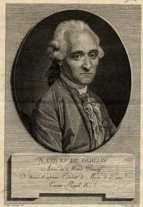
Du Jeu des Tarots (Court de Gébelin) - extrait du Monde primitif, analysé et comparé avec le monde moderne, vol. 8, tome 1, Paris 1781
Préambule :Nous devons l'idée de cette section à M. Mateus N. Carneiro da Cunha qui a rédigé une remarquable étude sur les rapports qu'entretient le tarot et l'alchimie. Voici l'URL de son site : http://www.ojardimhermetico.com/. Après avoir écris de nombreuses sections sur l'alchimie, il nous a paru utile de livrer aux internautes quelques réflexions sur le sujet. Evidemment, nous avons soigneusement évité de lire les interprétations de M. Carneiro da Cunha, en sorte de ne pas troubler notre jugement. De même, toute la partie introductive a été rédigée et compilée une fois que l'analyse des XXI Arcanes Majeurs et du Mat fût réalisée. Dans cette tâche, nous devons remercier une fois de plus M. Alain Mauranne qui a généreusement mis à notre disposition sa bibliothèque et M. Philippe Litzler, pour ses sources bibliographiques.
Remerciements : je remercie tout spécialement M. J.F. Bradu qui a bien voulu que je reprenne les figures des quatre Evangélistes sur son site [http://jfbradu.free.fr/] ainsi que M. J.C. Flornoy pour les superbes images des vieilles cartes de Tarot de la série Noblet et Dodal [http://letarot.com/] ; toutefois, je ne pourrai pas mettre sous ces images la mention « avec l'autorisation de J.C. Flornoy » compte tenu que les cartes auxquelles cette autorisation fait référence sont intégrées comme lien hyper-texte, ce que je tiens à préciser - on fait apparaître l'image de ces cartes en cliquant sur le nom de la lame, au début de chaque analyse. J'espère que M. Flornoy ne m'en voudra pas. M. Alain Mauranne m'a fourni aussi des reproductions des cartes du Tarot de Marseille ; elles apparaissent lorsqu'on clique sur l'image réduite de chaque lame.
Précisions : Les réflexions que m'ont inspirées les différentes versions des Tarots sur « l'exactitude » ou « l'inexactitude » de Noblet, comparé à Dodal ou à Conver ne sont pas aussi objectives que je le pensais. Je dois à M. J.C. Flornoy les précisions suivantes qu'il m'a envoyées suite à la lecture de ces pages :
Le tarot dit de Nicolas Conver est probablement le premier tarot réalisé par un "non-initié". C'est probablement le premier tarot de la série des tarots personnels modernes. Chez Conver, l'enseignement transmis de maître à compagnon et apprenti a disparu. A la place, nous avons un travail extrêmement savant de compilation et déjà d'interprétation. C'est à relier avec le passage de la maçonnerie opérative à la maçonnerie spéculative dans les mêmes années. 1730 environ. Les derniers tarots traditionnels sont ceux de Dodal et Payen au début du XVIIIe siècle. Quant à Noblet, ce fut un maître qui fonctionnait comme tous les maîtres : il a fait un tarot avec la connaissance qui était la sienne, et cette connaissance, il l'avait reçue de ses propres maîtres. Conver s'est formé lui-même. Aujourd'hui, Conver est pour certains la référence, c'est principalement du au fait qu'un fac-similé est disponible en librairie (Européenne de cartes, éditions Le Héron) alors que le Noblet et le Dodal ne le sont pas. Globalement, plus nous nous éloignons de la source, plus la rivière est polluée. On ne peut pas dire que le Dodal est plus juste que le Noblet, il est autre et ce sont deux tarots de maîtres, complémentaires, justement par leurs différences. Conver, n'ayant pas reçu de transmissions d'un maître vivant, "copie" ses prédécesseurs, retire ce qui ne fait plus de sens pour lui et rajoute toute l'ambiance de son époque. Regardez le sens de la flamme de XVI La Maison Dieu, les visages sur le ventre du Diable. Les
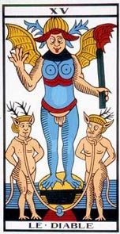
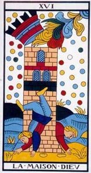
versions Conver de la lame XV et de la lame XVI
(avec l'autorisation de J.C. Flornoy : http://letarot.com)trois points sur la poitrine de la diablesse, en langue des oisons signifie simplement que le franc-maçonnerie est une diablesse ! Conver règle ses comptes avec le milieu intellectuel de son époque. Vous avez choisi d'illustrer vos dires avec le tarot Jodorowsky/Camoin. C' est encore une fois un travail personnel d'auteurs, qui ne vaut que ce que les individus valent.
Introduction :Gérard de Nerval, dans ses recueils, et notamment dans les sonnets El Desdichado et Artémis, a mêlé en un sublime entrelacs, sa connaissance de la symbolique alchimique classique et celle des cartes du tarot. Ses modèles ont été Dom Pernety, l'auteur du Dictionnaire Mytho-hermétique, 1758 et des Fables Egyptiennes et Grecques, 1786 [Pernety a écrit bien d'autres ouvrages, comme le Dictionnaire portatif de peinture qui est une merveille] et Court de Gébelin, qui, au tome VIII de son Monde Primitif, paru en 1781, dans une dissertation de 50 pages, intitulée Du Jeu de Tarots, a décrit et interprété les figures allégoriques que portent les cartes. Georges Le Breton a résumé ces observations dans un remarquable petit ouvrage, Nerval, poète alchimique ; la Clef des Chimères : le Dictionnaire mytho-hermétique de Dom Pernety [Lettre-préface de Max-Pol Fouchet, éditions Curandera, 1982]. Deux sites internet ont rendu disponibles les deux ouvrages de Dom Pernety : Librairie du Merveilleux ; Hermétisme et alchimie. Le Breton [à ne pas confondre avec l'homonyme qui a écrit les Clefs de la Philosophie spagyrique, 1722] a donné quelques extraits de la dissertation de Court de Gébelin. Ils montrent que Gébelin a réalisé pour le Tarot exactement la même chose que Pernety pour les mythes grecs et égyptiens, avec en toile de fond un renvoi incessant des deux auteurs vers l'Egypte. Bien des alchimistes, du reste, se sont persuadés de l'importance hermétique du Tarot, rattachée à leur Art. Ainsi, E. Canseliet écrit-il, dans ses Deux Logis alchimiques :
« Au demeurant, cela ne laisse pas de donner toute sa valeur de vrai rébus philosophique à la lame du tarot, qui ouvre, sans numéro, la série des vingt-deux figures. Vêtu du costume traditionnel qui était réservé aux bouffons de la Cour, le fou, personnification de leur mercure pour les alchimistes, chemine, son haut-de-chausse baissé en arrière et découvrant son postérieur...» [in Les Deux Chiens, p. 281].
Pour saisir l'allusion de Canseliet et le sel de l'allégorie, si l'on peut dire, voyez la section Mercure avec l'image du petit homme ducat. Mais voyons d'abord en quoi consiste le jeu de Tarot, en ne faisant ici que de rapides appels :
c'est sans doute le jeu de cartes les plus ancien, mettant en oeuvre un monde de symboles. Depuis Court de Gébelin au XVIIIe siècle, les théories les plus diverses ont été formulées : on la fait venir de Chine, des Indes, de l'Egypte et l'on même attribué à Thot-Hermès ! Quoi qu'il en soit, le Tarot met en jeu une iconographie assez nettement moyenâgeuse et mêlée avant tout à des symboles chrétiens. D'où peut-être, la netteté assez singulière des rapports qui s'établissent entre certains arcanes et l'alchimie ; pour d'autres, le rapport apparaît moins immédiat. Bien des figures du tarot ne sont que des allégories médiévales : la huitième carte d'atout, la Tempérance. La roue de fortune, dixième atout, est un sujet emprunté aux vitraux romans. D'autres filiations de ce genre peuvent être détectés sans trop de difficultés.
Avant de passer à notre interprétation alchimique du Tarot, nous donnons en matière de prolégomène des considérations historiques sur le jeu de cartes, tirées de deux fascicules du Magasin Pittoresque [publ. sous la dir. de M. Edouard Charton, 1880]. Ces deux premiers textes sont suivis d'un texte sur le Tarot qui nous paraît l'un des plus clairs, des plus lumineux qu'ils nous ait été donné de lire sur le sujet. Il est extrait du Miroir de la Magie, de Kurt Seligmann [Fasquelle, 1956] et nos commentaires sont entre crochets, en vert. Enfin, nous avons inséré un tableau du à Papus, tiré de son interprétation du Tarot des Bohémiens, qui fait voir la différence fondamentale existant entre une interprétation ésotérique ou théosophique, par rapport à une interprétation où ne joue que la cabale hermétique, appliquée à l'alchimie, selon la méthode de Fulcanelli.
¯
I. Considérations historiques sur le jeu de cartes
De tous temps, les cartes ont tenu une place dans l'existence de nombre d'individus. Je ne veux point parler ici de l'aigrefin, grand-maître ès-baccara et poker, dont elles forment la principale ressource, ceci s'applique à tous les joueurs en général, depuis l'écumeur des stations balnéaires, jusqu'aux joueurs paisibles qui attendent avec impatience le moment de faire une partie de piquet ou de bésigue chinois, voire moine de nain jaune ! Et les cartes sont un jeu passionnant ! A notre époque, où le bridge fait fureur, essayez plutôt d'échanger quelques paroles avec un de vos amis, enfoncé jusqu'au cou dans une partie de bridge palpitante (toutes les parties de bridge le sont). Vous n'obtiendrez en
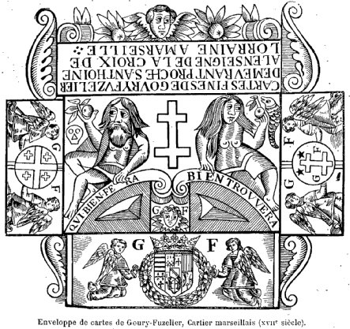
FIGURE I
(enveloppe de cartes de Goury-Fuzelier, cartie marseillais, XVIIe siècle)réponse que des grognements inintelligibles, bienheureux lorsqu'un
« laissez-moi tranquille, je vous prie », bien sec, ne vous aura point brutalement invité au silence, cependant que le Monsieur qui marque les points et tient la comptabilité du jeu presque aussi compliquée que celle d'une maison de banque, vous aura regardé de travers, pour oser essayer de distraire un joueur de sa partie. C'est pourquoi on peut toujours parler des cartes ; la question est toujours d'actualité. Et c'est leur histoire du XVIe au XXe siècle que vient de publier en un remarquable ouvrage M. Henry René d'Allemagne, archiviste paléographe, le distingué bibliothécaire à la bibliothèque de l'Arsenal. L'ouvrage de M. d'Allemagne est certainement le plus complet et le plus sérieux qui existe. Qu'on en juge : la documentation repose sur des actes de l'état civil, registres des Parlements, livres de baillages, rôles d'imposition, etc. Aussi est-elle des plus certaines : ainsi, l'auteur a pu constituer une liste de 3200 maîtres cartiers ayant, depuis le XVe jusqu'au XIXe siècle, exercé en France leur industrie. L'ouvrage ne contient pas moins de 3200 reproductions de cartes à jouer de toutes les époques, d'après des originaux. On se rend compte de la somme de travail et de recherches qu'il a fallu pour arriver à un pareil résultat. On peut dire que tous les jeux de cartes y figurent sans compter les scènes de jeu proprement dites, qui ont fourni à l'auteur non seulement l'occasion de nous présenter des documents inédits et originaux, mais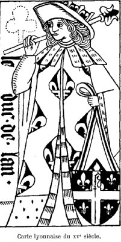
FIGURE II
(carte lyonnaise du XVe siècle)encore celle de nous faire admirer les reproductions d'œuvres rares et généralement inconnues des vieux maîtres. Parmi les jeux dont l'énumération serait trop longue, il convient de citer une reproduction très exacte comme fini et sur laquelle un travail de « gaufrage » est venu remplacer la dorure, des cartes connues sous le nom de « jeu de tarots de Charles VI », et celle d'un jeu satirique édité vers 1545, conservé dans la collection Bigder, qui nous représente les scènes de la vie allemande au XVIe siècle. Dans les deux volumes ayant un total de 1200 pages, le lecteur trouvera non seulement l'histoire proprement dite des cartes à jouer, mais la législation les concernant, variant fréquemment. L'esprit qui inspirait les fermiers des jeux était celui de rendre les recettes le plus fructueuses possible. La question de la cartomancie est aussi traitée en un chapitre auquel s'intéresseront les amateurs de sciences occultes, toujours trop pressés de connaître l'avenir. Le deuxième volume est plus spécialement consacré, avec l'histoire des communautés ouvrières, à celle des maîtres cartiers dans les villes de France où ils exerçaient leur art. Il est complété par un exposé sur l'histoire des cartes en Belgique, et sur la gravure en taille-douce qui servit à l'édition des jeux historiques ou scientifiques. Nous extrayons de la préface les lignes suivantes :
« Les cartes à jouer sont intéressantes à plus d'un titre, et le côté archéologique est digne d'attirer l'attention. Y a-t-il rien de plus beau et de plus grand que cette figure de l'empereur du jeu italien connu sous le nom de tarots de Charles VI ? Dans la raideur toute hiératique du personnage, il y a quelque chose de grandiose que, dans nos jeux modernes, nous n'arriverons jamais à atteindre, malgré ou peut-être à cause de tous les moyens de reproduction dont nous disposons actuellement. Le dessin de ces cartes du quinzième siècle est presque toujours d'une correction et d'une élégance parfaites; il y a dans ces lignes quelque chose d'une précision pleine de caractère qui nous permet de revivre l'époque où ces œuvres ont été exécutées.
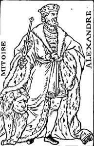
FIGURE III
(carte en portrait de Paris, traitée d'une manière artistique, gravée par J.B. Papillon,
et éditée par Mitoire, à Paris, avant 1745)« Que dire de la préoccupation qui a dicté le choix des personnages reproduits dans les figures majeures de la plupart des jeux ? Sur les cartes d'origine lyonnaise, on rencontre d'une manière très générale les pairs religieux tels que le duc de Reims, le duc de Laon, le comte de Châlons, le duc de Langres, le duc de Beauvais et le comte de Noyon. Les pairs laïques donnèrent également leurs noms aux cartes: le duc de Normandie, le duc de Guyenne, le duc de Bourgogne, le comte de Champagne, le comte de Flandre et le comte de Toulouse. A côté d'eux, des personnages mythologiques tels que le beau Paris et la belle Hélène, Vénus, Junon, Pallas, etc., puis des personnages empruntés aux romans de chevalerie comme la Sibille, Mélusine, Pantasilée, Lucrèce, etc., viennent concourir à la composition des jeux. Il ne faut pas oublier surtout la figure de cette héroïne que tous les partis se disputent aujourd'hui : nous avons nommé Jeanne d'Arc qui, dès la dernière partie du quinzième siècle, apparaît dans la plupart des jeux sous le nom de « la Pucelle ».
« Les jeux édités dans l'Ile-de-Françe et en Normandie, au début du seizième siècle, portent tous des inscriptions indiquant la haute estime que l'on avait pour tout ce qui touchait à la famille royale : « Honneur au roi ! Révérence à la reine ! ». Ces devises ne semblent-elles pas indiquer la respectueuse sympathie que les sujets éprouvaient pour le souverain Louis XII, le Père du peuple, et sa femme Anne de Bretagne, à l'honneur desquels elles ont été très probablement composées ?
« A cette époque, les costumes des personnages représentés sur les cartes à jouer suivirent, pendant un certain temps, les modes contemporaines, et nous retrouvons dans ces beaux jeux des quinzième et seizième siècles le chardon orné et les riches étoffes dont les primitifs Français nous ont conservé le souvenir. A l'imitation du jeu allemand du Saint-Empire, on a parfois même habillé les valets à la manière des écuyers et deséchansons : on a placé entre leurs mains les insignes de leur profession.
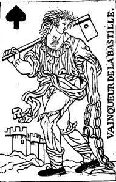
FIGURE IV
(valet de pique d'un jeu révolutionnaire parisien)« Au début du règne de François Ier, on commence à apercevoir, dans les cartes, les grandes divisions qui ont séparé la France en plusieurs zones bien distinctes. Les dimensions des caries elles-mêmes sont spéciales suivant les contrées, et, alors que les cartes lyonnaises sont d'une forme allongée, le cartes de Normandie et de l'Ile-de-France, au contraire, se rapprochent davantage de la forme carrée.
« Vers la fin du dix-septième siècle, les cartes parisiennes commencent à perdre de leur personnalité : on les voit s'orienter vers un type qui ira
en se transformantjusqu'à la fin du dix-huitième siècle, pour devenir ensuite ce qu'est le portrait actuellement en usage.« A toutes les époques, on fait de nombreuses tentatives pour s'affranchir de cette espèce de servitude, et, dès le dix-septième siècle, on a cherché à créer des jeux de fantaisie, qui ' sont souvent d'une composition et d'une ingéniosité vraiment charmantes. Il faut voir cependant, dans ces inventions nouvelles, une flatterie à peine déguisée, destinée à commémorer les hauts faits d'armes de la première partie du règne de Louis XIV. Dans beaucoup de jeux, on reconnaît la représentation de places fortes qui n'ont certes d'autre raison d'être que de rappeler les sièges fameux que le roi avait mis devant les forteresses ennemies. Les accessoires guerriers, trompettes, casques, cuirasses, etc., sont nécessairement les signes distinctifs de ces sortes de jeux. Malheureusement, pour leurs ingénieux inventeurs, le public goûta assez peu ces nouveautés et rien ne put prévaloir contre le modèle de caries qui avait été le plus généralement employé : on est toujours revenu au type classique, dont les cartes de Hector de Troie peuvent être considérées comme les prototypes.
« La période révolutionnaire s'est fait sentir pour les cartes à jouer d'une manière plus sensible encore que dans toutes les autres branches de l'industrie. Pouvait-on, en effet, laisser leurs couronnes aux rois qui, pour n'être que des rois de cartes, ne rappelaient pas moins un régime maudit ? L'acharnement avec lequel on se hâta de faire disparaître tous les emblèmes de la royauté, la diligence que l'on mil à créer des modèles complètement différents de tous ceux qui avaient alors été en usage, marque le reflet de l'état d'âme du peuple français en 1793.
« Quand l'ordre fut rétabli et que Napoléon Ier eut le loisir de s'occuper un peu des détails d'administration, il pensa se rendre populaire en se faisant représenter sous les traits de César, dans le jeu composé par le peintre David et gravé par Andrieu.
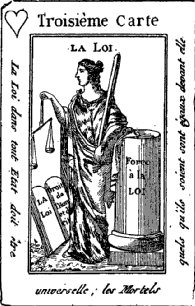
FIGURE V
(jeu de cartes historique de la Révolution française, édité à Egalité-sur-Marne,
Château-Thierry, par Beza, 1790-1792)« Les jeux de fantaisie qui ont été inventés depuis un demi-siècle sont presque innombrables; chaque personnage un peu en vue a eu son jeu de cartes dont le roi de cœur était réservé à la représentation de ses traits. Un esprit éclairé a dit, il y a quelques années, que la véritable popularité, pour un homme d'État, consistait à avoir son portrait reproduit en pain d'épices. On n'en pourrait pas dire autant pour les cartes à jouer, car tous ceux qui ont tenté ce genre de réclame pour laisser leur image à la postérité, en ont été pour leurs frais et jamais aucun de ces jeux n'a obtenu la faveur du public.
« Dans les jeux de cartes, la partie la plus personnelle aux maîtres cartiers était la vignette qui servait à orner la feuille de papier dans laquelle était ployé le jeu. Pour ne pas dérouler les joueurs, les maîtres cartiers étaient, en effet, obligés de se conformer strictement aux modèles usités dans la région où.ils étaient établis; la seule partie où ils pussent donner libre cours à leur imagination et où ils pussent indiquer un peu de personnalité, se trouvait donc reléguée sur l'enveloppe, à la composition de laquelle ils apportaient le plus grand soin. L'habitude était d'orner les enveloppes à l'aide des armoiries de la ville ou du blason des personnages que ces industriels avaient pris pour enseigne. Cependant quelques-uns n'avaient pas perdu l'occasion d'attirer l'attention du public en faisant sur leur propre nom quelque jeu de mot d'une lecture facile. »
Les cartes, aussi, ne sont pas seulement un jeu, mais en quelque sorte le reflet de l'histoire, et des sentiments populaires, et, à ce titre, elles sont encore bien plus intéressantes, ainsi que l'expose M. d'Allemagne dans sa conclusion. Quant à la fabrication des cartes, elle a suivi la règle générale qui régit tous les objets manufacturés. Au début, vers le quinzième et le seizième siècles, les caries étaient généralement dessinées avec soin, elles étaient de grandes dimensions et coloriées avec de belles couleurs ; petità petit, surtout quand les charges de l'impôt obligèrent les cartiers à produire avec le moins defrais possible, on commença à faire des travaux beaucoup moins soignés ; les traits furent plus grossièrement exécutés, la gravure laissa beaucoup à désirer et le coloriage au patron fut fait avec une négligence qui ferait sourire les paysans des environs d'Épinal, occupant leurs loisirs à enluminer les planches d'imagerie enfantine.
« Les dimensions des cartes ont également beaucoup varié suivant les époques et suivant les pays, mais c'est surtout dans le midi de la France que les maîtres cartiers ont fait les plus petites cartes. Quand on aperçoit les productions des cartiers de Nîmes, Montpellier, Béziers et Montauban au dix-huitième siècle, on se trouve bien loin de ces magnifiques Paginae lusoriae qui, à la fin du quatorzième siècle, composaient les somptueux jeux de cartes.
« L'existence effective et le symbole qui sont attachés au jeu de cartes ont élé consacrés d'une manière définitive par la rage avec laquelle, au début de la période révolutionnaire, la fureur du peuple s'est attaquée à tous ces symboles, qui semblaient rappeler un régime exécré. Les es prits forts ont alors pris à partie les cartes comme si elles étaient une émanation réelle et tangible de la royauté; ils les ont massacrées, mutilées, semblables en cela à ces démoniaques qui, au moyen âge, brisaient les objets du culte avec une fureur vraiment satanique. Au dix-neuvième siècle, les cartes ont porté pendant longtemps la livrée du régime sous lequel elles voyaient le jour. La fleur de lis remplaça l'aigle impériale au moment de la Restauration, puis elle disparut elle-même sous de bourgeoises rosaces au moment du règne de Louis-Philippe. De nos jours, nous ne nous préoccupons pas de ces détails et voici près d'un demi-siècle que le portrait français n'a subi aucune modification essentielle.« D'après tous les renseignements que nous avons pu relever, il est curieux de remarquer combien, au dix-septième siècle et au dix-huitième, le métier de cartier était une profession pénible et ingrate. Il y a bien peu d'industries dans lesquelles on voit les ouvriers obligés de fournir un travail effectif de plus de quatorze heures par jour. Ces malheureux devaient être en effet à l'ouvrage, été comme hiver, à 5 heures du matin et, à part le temps nécessaire pour les repas, ils n'avaient aucun repos avant 10 heures du soir. N'y a-t-il pas là quelque contraste frappant, de penser que ce sont les producteurs de ces objets de luxe, les créateurs de ces passe-temps uniquement destinés aux désœuvrés, qui doivent, comme des maudits, donner toutes leurs forces et toute leur énergie pour éditer cet instrument de plaisir, qui ne sera qu'une futilité entre les mains de ceux où il tombera.
« Les cartes à joueront été le reflet des événements politiques qui se produisirent au moment de leur adoption; malheureusement les jeux qui ont été conçus d'une manière sérieuse dans cet ordre d'idées ne sont pas communs, et, la plupart du temps, les cartes présentant un caractère historique, soit au point de vue du costume, soit sous le rapport, des personnages représentés, ont été plutôt traitées en charge, comme le jeu édité par le maître au monogramme « V. G. », qui date de la fin du seizième siècle. Un des rares jeux historiques que nous.ayons rencontrés, répondant à cet ordre d'idées, est le curieux jeu des Alliés, gravé par C. Osiander : il fait partie de la remarquable collection de M. Coltreau, qui nous l'a gracieusement communiqué. Ces cartes ne sont malheureusement pas d'origine française, et, quoique nous n'ayons pas de renseignements spéciaux à leur égard, il est à peu prés certain qu'elles ont été exécutées à Vienne à l'époque de la Restauration.
« Singulier effet des choses d'ici-bas, les cartes, qui ont été éditées en si grande quantité pendant les trois derniers siècles, n'ont pour ainsi dire pas laissé de traces de leur passage et nous aurions été fort en peine de trouver des exemples pour les époques un peu anciennes, si nous n'avions eu à notre disposition celles qui furent trouvées à l'intérieur des reliures. C'est parcelle voie détournée, en effet, que quelques feuilles de moulage en noir et quelques planches de cartes coloriées onttraversé les siècleset sont parvenues jusqu'à nous dans un état de conservation remarquable. Ces spécimens sont le plus souvent des feuilles mises au rebut pour une raison ou pour une autre, et c'est uniquement pour ne pas perdre la valeur marchande du papier que les cartiers-relieurs les inséraient dans les plats destinés à former la couverture de leurs livres. Personne certes n'aurait pu s'attendre à un tel résultat; tant il est vrai que les voies de la Destinée sont impénétrables, et ce que nous avons de mieux à - faire, c'est de considérer qu'ici-bas les choses se passent souvent beaucoup mieux que certains pessimistes ne sont disposés à le croire. »
On peut dire en terminant que l'ouvrage de M. d'Allemagne édité à Paris, chez Hachette et Cie est un véritable monument élevé à l'histoire des cartes, œuvre non-seulement d'un historiographe savamment documenté, mais encore d'un lettré doublé jusqu'à un certain point d'un philosophe. Car si l'histoire proprement dite a eu sur les cartes une indiscutable influence, peut-on nier que celles-ci n'en aient point eu à leur tour sur celle d'un pays, et surtout d'une époque ?
HOGIER.
SUR L'ORIGINE DES CARTES (Voy. les Tables du Magasin pittoresque, les travaux de Duchesnes, et une dissertation publiée par M. R. Merlin dans la Revue archéologique, en 1859. On peut consulter aussi un petit volume publié à Bruxelles, en 1870, par M. Pinchart, intitulé: Recherches sur les cartes à jouer et leur fabrication depuis 1379 jusqu'à la fin au dix-huitième siècle. On y trouvera des textes nombreux et intéressants concernant les cartiers des Pays-Bas. Nous avons fait beaucoup d'emprunts à ces deux derniers ouvrages.).
L'origine des cartes à jouer est encore un problème. On avait cru pouvoir donner pour date l'année 1392, époque de la folie de Charles VI. Cette hypothèse a dû être vite abandonnée. Elle n'était basée que sur un seul texte, parfaitement authentique, il est vrai, mais qui ne signifie nullement que le jeu de cartes ait été inventé de toutes pièces, en cette occasion, pour le plaisir du roi; il prouve seulement que les cartes, ou, plus exactement, les tarots, avaient déjà fait à celte date leur apparition en France, et nous verrons plus loin que cette date peut être reculée de quelques années. On a ensuite supposé que les cartes étaient venues d'Orient. Leur analogie avec le jeu des échecs, où l'on voit aussi figurer des rois et des reines, pièces qui, à la vérité, ont des valeurs bien différentes, a fait croire à quelques auteurs que, de môme qu'à ce dernier jeu, l'Inde avait donné naissance aux tarots. Mais ce sont là des ressemblances toutes fortuites. On ajoutait que c'étaient sans doute les bohémiens qui avaient transporté les cartes en Europe, et on le préjugeait d'après leur habitude de s'en servir pour dire la bonne aventure; mais cette habitude est relativement moderne et tout européenne. Si les Indiens possèdent aujourd'hui des cartes analogues, aux nôtres, ils n'en font nullement le môme usage que les bohémiens ; et si les dispositions que l'on retrouve dans lès anciens jeux italiens et espagnols figurent aussi dans leurs jeux, ces dispositions ayant été connues en Europe antérieurement à l'arrivée des Portugais dans l'Inde, il est à peu près certain que ce sont ces derniers qui les ont transportées en Orient. Une autre opinion, qui attribue aux cartes une origine arabe, est en grande partie basée sur l'aspect quelque peu oriental du mot nuibi, vocable sous lequel on a primitivement désigné les tarots, et où l'on a voulu voir un dérivé des mots hébreux ou arabes nabi, naba, nabaa, qui emportent avec eux une idée de prophétie, de prédiction de l'avenir. Or, aucun texte n'établit que les Arabes ou les Juifs aient fait usage de cartes pour chercher à connaître l'avenir, genre de charlatanisme très probablement introduit depuis le seizième siècle. De plus, aucun texte arabe ne donne au mot naïb la signification de cartes à jouer; et même les musulmans semblent avoir hésité longtemps à accepter ce jeu, tout à fait contraire aux prescriptions du Coran, qui défend les jeux de hasard et la représentation de la figure humaine. Encore aujourd'hui, dans les pays musulmans, on joue fort peu aux cartes, et ce n'est jamais qu'avec des cartes européennes; les Persans sont seuls à s'affranchir à cet égard, comme à beaucoup d'autres, de la loi du Prophète. L'hypothèse de l'origine égyptienne ou chinoise n'est pas soutenable. Les Chinois ont des cartes; ils les ont même peut-être connues avant nous; mais, comme pour la poudre à canon, il ne s'ensuit pas que nous leur soyons redevables de cette invention. Tous les témoignages sur lesquels on s'est appuyé pour faire remonter l'invention des cartes aux dernières années du treizième siècle ont été, après un examen plus approfondi, complètement rejetés.
Les tarots étant, de l'avis de tous ceux qui se sont occupés de cette question, antérieurs aux cartes actuellement en usage en France, lesquelles,n'en sont qu'une simplification, disons d'abord-ce que l'on entend par tarot.
« Les jeux de tarots différent des cartes communes par le nombre et la nature des éléments dont ils sont composés. Outre les quatre séries à signes variés qu'ils, comprennent, comme les jeux de cartes communes, les jeux de tarots en offrent une cinquième tout à fait à part, et c'est là surtout la différence essentielle par laquelle ils se distinguent des autres jeux de cartes.
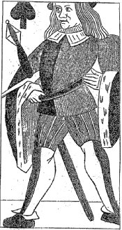
FIGURE VI
(Valet de pique. — Fragment d'une feuille de cartes à jouer trouvée en 1873,
à la Bibliothèque nationale, dans la reliure d'un manuscrit du temps de Louis.XII.)« Cette cinquième série est une suite de ligures, généralement au nombre de vingt-deux; vingt et une sont numérotées et prennent rang entre elles d'après le numéro dont elles sont marquées. La moindre de ces figures l'emporte sur toutes les cartes des séries numérales, même sur les rois. De là elles ont reçu le nom d'atouts (supérieures à tous), et celui de triomphes. C'est à ces atouts qu'appartient proprement le nom de tarots. »
Dans les jeux de tarots; outre le roi, la reine elle valet, on rencontre encore le cavalier. Les signes distinctifs des quatre séries numérales sont les deniers, les coupes, les épées et les bâtons. Il y avait trois sortes principales de tarots : le tarot de Venise ou de.Lombardïe, les minchiate de Florence, enfin le tarrochino de Bologne, dont l'invention est due au duc de Lucques, Gastruccio Castracani Fibbia, généralissime des Bolonais, qui employa ses loisirs à modifier le tarot vénitien. Pour perpétuer le souvenir de celte amélioration, les quatorze Réformateurs de Bologne lui permirent de placer dans ses armes la « reine de bâtons », et dans celles de sa femme, Francesca Bentivoglio, la « reine de deniers. » Dans le tarrochino de Bologne, il y a soixante-deux cartes; dans le tarot de Venise, soixante-dix-huit; dans les minchiate de Flrence, quatre-vingt-dix-sept. Il est a remarquer qu'aucun des atouts de ces jeux ne rappelle des idées orientales; au contraire, ils font allusion
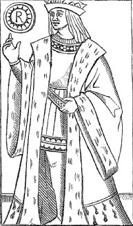
FIGURE VII
(Roi de denier. — Fragment d'un .jeu de cartes non colorié,
du commencement du seizième siècle.)à des idées purement chrétiennes. Tous ces jeux ont évidemment une origine commune. Il existe une série de cinquante gravures connues sous le nom de tarots de Mantegna : c'est une sorte d'encyclopédie en estampes, ou plutôt une leçon de morale qui, pour être obscure, n'en est pas moins réelle. Sur les cinquante figures de Mantegna, nous en retrouvons quinze, dans les tarots de Venise et vingt dans les minchiate, d'où on peut évidemment conclure qu'il y a entre ces séries de figures une étroite parenté. On peut sans doute objecter que Mantegna a pu composer son album en s'inspirant des jeux de tarots; mais il est permis de regarder comme certain que si les premières cartes étaient contemporaines des dessins de Mantegna, on n'hésiterait pas à lui en attribuer l'invention. Si nous examinons de plus près ce que l'on a improprement nommé tarots de Mantegna, nous ne nous trouvons point en face d'une œuvre originale, mais bien de la copie de dessins plus anciens qui, reproduits seulement par les enlumineurs, avant l'invention de la gravure, étaient assez chers pour qu'on eût l'idée, dès que cela fut
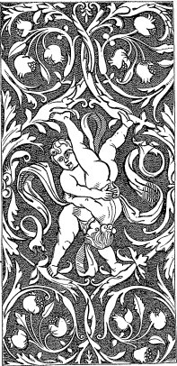
FIGURE VIII
(Revers d'un tarot italien du seizième siècle; grotesques et rinceaux.)possible, de les multiplier par l'impression. La première édition de l'album de Mantegna est de 1470; en 1485, nous en voyons une seconde ; vers 1540, on en rencontre encore une imitation; enfin, au commencement du dix-septième siècle, en 1616, les figures de Mantegna, bien déformées, il est vrai, continuent à servir encore de types aux gravures d'un livre de devinettes, de jeux d'esprit, dont quelques figures, du reste, sont empruntées au jeu de tarots lui-même. On voit par là que ces albums étaient assez répandus. Il reste a décider si Mantegna a emprunté les sujets de son album aux tarots, ou si ce sont les tarots qui ont été copiés sur des albums analogues, mais antérieurs au sien. Toutes les vraisemblances sont en faveur de cette dernière supposition, car il n'est guère possible d'admettre qu'une œuvre dans laquelle il existe un ordre absolument logique soit sortie du pêle-mêle des figures des tarots. Un autre argument décisif est tiré des noms que les tarots ont portés en Italie jusqu'au milieu du quinzième siècle; on les y désignait sous deux noms : cartes et naïbis, qui semblent désigner deux choses différentes; les cartes étaient les jeux simples sans tarots, les naïbis les jeux avec tarots. Sous le vocable de naïbis, il faut entendre aussi deux choses; un texte de 1329 ne peut guère laisser de doute à cet égard : on conseille à un enfant de ne point jouer aux dés, mais on l'engage à jouer aux naïbis. Comment se peut-il qu'on recommande un jeu contre lequel tous les prédicateurs tonnaient, qu'ils ne manquaient pas de jeter an feu quand ils en trouvaient l'occasion ? C'est qu'il y avait évidemment deux sortes de naïbis ou tarots, ceux que condamnait l'Église comme, un jeu de hasard des plus dangereux, et des naïbis tout à fait innocents, jeux d'esprit et récréation pour les yeux, tels que devaient être les originaux dont les tarots de Mantegna ne sont que des copies. En effet, un texte de la fin du quatorzième siècle nous parle d'un jeu composé de figures peintes avec lequel s'amusait un enfant, le duc de Milan Philippe-Marie Visconti, et dont la description concorde avec l'album de Mantegna. C'est donc, croyons-nous, dans ces albums destinés à l'instruction et à l'amusement des enfants qu'il faut voir l'origine des cartes ; et, de plus, c'est aussi aux Italiens qu'il faut en attribuer l'invention. Quant à l'époque de l'invention des cartes, un chroniqueur italien du quinzième siècle, qui, du reste, l'attribue aux Arabes, fixe leur introduction en Italie à l'année 1379. Un texte récemment découvert nous apprend qu'à cette date on faisait déjà usage des cartes à la cour de Brabant. Ce dernier document est d'une authenticité indiscutable : c'est un fragment des comptes du receveur général de Brabant, et comme dans ces mêmes comptes on ne voit aucune mention des cartes avant 1379, et qu'au contraire à partir de cette époque on en parle fréquemment, il semble bien qu'on doive en placer l'invention vers cette année. Presque immédiatement les jeux de cartes, dont les tarots faisaient un jeu très compliqué, furent modifiés en Italie même, et l'on arriva en France à posséder des jeux assez analogues a ceux dont on fait usage aujourd'hui ; seulement, tandis qu'en Italie et en Espagne on conservait les anciennes dénominations des séries numérales des tarots, en France on adoptait les signes de cœurs, carreaux, piques et trèfles, qu'on a tenté d'expliquer maintes fois sans arriver à un résultat satisfaisant. Les cartes françaises ont cela de particulier que quelques-unes d'entre elles rappellent des personnages français : ainsi, les deux valets la Hire et Hector sont, au moins le premier, des personnages bien connus ; le second, plus douteux, serait un capitaine des gardes de Louis XI. On a voulu voir aussi dans David Charles VII, et dans Rachel Agnès Sorel.
II. Un extrait du Miroir de la Magie - Kurt Seligmann
Les experts en tarot ont pourtant insisté sur le fait que les « lames » d'atout, ou grands arcanes, et les points, ont un âge encore plus vénérable et remontent à l'antiquité. Le point de départ de cette théorie a été fourni par l'érudit Court de Gébelin (1728—1784) qui écrit dans le tome VIII de son Monde primitif :
« Si l'on venait à savoir qu'il existe de nos jours une œuvre de l'ancienne Egypte, l'un de ces livres échappés à la destruction malicieuse, un livre sur leurs doctrines les plus pures et les plus intéressantes, tout le monde serait sans doute avide de connaître une œuvre aussi extraordinaire et précieuse »
Ce livre égyptien, selon Gébelin, est le Tarot. [il faut savoir que Pernety pensera exactement la même chose au sujet des Fables égyptiennes et grecques et qu'il poussera le paradoxe jusqu'à dire que tout l'or des Pyramides et des Temples était d'orogine alchimique !] L'antique sagesse avait survécu, dit-il, parce qu'elle s'était habilement dissimulée sous le masque d'un jeu. Son caractère frivole l'avait sauvé de la barbarie, de l'ignorance et de toutes sortes de destruction. Au temps de Gébelin, l'intérêt était tourné vers l'Egypte dont la littérature était encore indéchiffrée et les vestiges inexplorés. L'Egypte était le pays des mystères. Pour connaître sa civilisation, on devait s'appuyer sur les vieux auteurs, Plutarque [1, 2, 3, 4, 5], Hérodote [1, 2, 3, 4, 5], Jamblique [1, 2, 3,]. Le manque de preuves donna lieu à conjectures, et Gébelin, égaré par son imagination, se convainquit que le Tarot n'était pas autre chose que les feuillets non reliés du livre de Thoth. Thoth-Hermès [1, 2, 3, 4, 5], auteur présumé des plus anciens livres hermétiques, et que les alchimistes nomment leur Grand Maître [cf. la Table d'Emeraude, entre autre], fut promu par Gébelin au rang d'inventeur des lames de tarot. II fut l'inventeur de la magie, des langues, de l'écriture et de la représentation dessinée, selon la légende, il avait peint tous les dieux. Son carnet d'esquisses mystiques était appelé A-Rosh, « A » signifiant doctrine, « Rosh , commencement A-Rosh avait inspiré le Tarot par ses images, et le mot Tarot lui-même, dit Gébelin, est dérivé de Tar, chemin, et de Ro, ou Rog, royal. Ainsi Tarot signifierait « la Voie Royale » [dont le pendant direct serait évidemment l'Art Royal ou alchimie]. Les théories de Gébelin étaient bâties sur les sables mouvants, mais elles éveillèrent l'intérêt pour la civilisation égyptienne, et quinze ans après la publication de son Monde primitif, une découverte éclaira les ténèbres de la conjecture. En 1799, un bloc de basalte noir fut trouvé dans le Nil, à Rosette ; il portait trois inscriptions, la première en hiéroglyphes, la seconde en caractères démotiques, la troisième en grec En comparant les trois textes, qui étaient identiques, Champollion put, après des siècles de mystère complet, établir le premier contact scientifique avec les vieux caractères hiéroglyphiques. Influencés par Gébelin, la plupart des auteurs de livres sur la magie déclarèrent que le Tarot était d'origine égyptienne. Le perruquier Alliette (environ 1750—1810) publia une série d'essais sur le fameux jeu, sous le pseudonyme d'Etteilla [E. Canseliet parle de ce perruquier dans son Alchimie, cap. le Feu Purificateur et son Messager apocalyptique, cf. Gardes du corps. Alliette a écrit les Sept Nuances de l'Oeuvre philosophique dont parle Dujols dans son Hypotypose, cf. Mutus Liber où nous donnons le texte de Magophon - alias Dujols - en commentaire des planches]. II entreprit de restaurer leur forme originale aux figures du Tarot qui avaient été maltraitées par le graveur de Gébelin (fig 230). Alliette, dans une
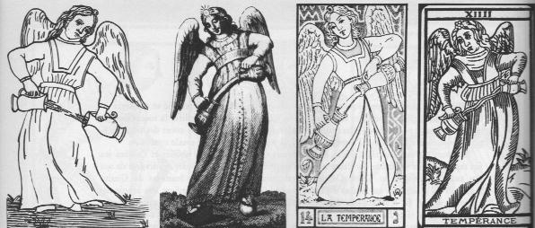
FIGURE IX
(231 à 234, de gauche à droite)intention plus artistique que scientifique, les embellit selon le goût de son époque (fig 231), mais il leur donna aussi des attributs nouveaux et assez peu orthodoxes, et ajouta au Jeu l'astrologie et la cabale [attention : il faut ici nettement distinguer la cabale théosophique ou la kabbale juive de la cabale hermétique appliquée à l'alchimie. Fulcanelli en décrit les règles dans le Mystère des Cathédrales]. Il est curieux que tant d'occultistes croient et professent qu'une sagesse secrète originale se soit perpétuée au cours des millénaires, tradition qu'ils s'empressent de détruire ou d'altérer. Ils semblent oublier que leurs mauvaises habitudes durent exister avant eux et que, pour cette excellente raison, aucune doctrine n'aurait pu nous parvenir dans sa forme originelle. Si quelque sagesse ésoténque de jadis existait encore, elle serait transformée au point que ses promoteurs ne la reconnaîtraient pas Alliette, l'orgueilleux perruquier, décida que le jeu du Tarot serait rectifié et réintégré en lames, en supprima certaines et en ajouta de sa gloire première. Il modifia la succession des nouvelles dont il prétendit qu'elles étaient les plus anciennes, perdues au cours des pérégrinations du jeu entre l'Egypte et l'Europe ; en bref, il y introduisit la plus totale confusion. Au cours du dix-neuvième siècle, les « réformes » d'Alliette furent abolies et l'ancien jeu fut repris, encore qu'aucun occultiste ne pût s'empêcher d'ajouter quelques enjolivures de son cru aux personnages du Tarot. Oswald Wirth, disciple du fameux Stanislas de Guaita (1860—1897), retourna ses images de Tarot comme Gébelin, croyant corriger une erreur des graveurs. Wirth fit à ses dessins de nombreuses additions qui n'ont d'autre raison que sa propre fantaisie (fig 232). Si nous comparons sa Tempérance à la figure originale (fig 233), nous voyons qu'en se rangeant au goût du décorum en honneur à son époque, il trouva bon de placer l'allégorie sur un fond d'or, et de mettre une fleur là où autrefois ne figurait qu'un petit arbuste. Wirth représente les deux jarres, semblables à l'origine, comme faites de métaux différents, l'une étant d'or et l'autre d'argent [comme nous le montrons plus loin, il s'agit des deux natures métalliques et du Lait de Vierge]. Les couleurs primitives, brillantes et transparentes, sont dans ce nouveau jeu d'atouts remplacées par des teintes de pastel rosé saumon, ocre pâle, vert mousse et bleu ciel. Deux mages au moins du dix neuvième siècle approuvèrent ce jeu de tarots modifié, Guaita et Papus, qui le publièrent dans leurs œuvres. Les cartes de Wirth sont marquées de chiffres arabes, au lieu des traditionnels chiffres romains, et comportent en outre des lettres hébraïques dont les valeurs numériques correspondent à la numérotation des cartes.
Gérard Encausse, connu en littérature sous le pseudonyme de Papus (1865—1917), crut nécessaire de commencer son livre sur le Tarot par une introduction personnelle sur la cabale ; Stanislas de Guaita disposa son long traité d'occultisme, Le serpent de la Genèse, selon les nombres et images cabalistiques du Tarot. Sa quatorzième section traite de la Tempérance. Elle est illustrée par la quatorzième figure d'atout — la Tempérance — et le dessin trahit le talent de son secrétaire Oswald Wirth. Alphonse Louis Constant, allas Éliphas Lévi (1816—1875), admit également l'interprétation cabalistique du Tarot. Dans son œuvre haute en couleurs sur la magie dogmatique et ritualiste, il utilise les caractères hébreux et les chiffres arabes pour numéroter ses chapitres. D'autres merveilles furent ajoutées au jeu du Tarot depuis le début du vingtième siècle. Mrs John King van Rensselaer publia en 1911 son excellent livre sur Les cartes prophétiques, éducatives et à jouer, ouvrage largement consacré à la « Voie Royale ». Le jeu, dit-elle, est dérivé de la vieille pratique de divination par baguettes, tablettes ou flèches magiques, pratiques communes à l'Egypte, à la Grèce et à Babylone Dans les anciennes salles des temples égyptiens, les images que l'on retrouve aujourd'hui sur les cartes de tarot décoraient les quatre murs Le prêtre faisait s'effondrer le faisceau de bâtons dressé sur l'autel :« En tombant, ils désignaient naturellement les peintures murales, et comme celles-ci représentaient presque tous les événements de la vie, les ordres des dieux étaient immédiatement interprétés par les prêtres, qui prouvaient ainsi que Thoth était bien le dieu du discours... »
Les quatre figures qui ne sont pas au nombre des atouts, le roi, la dame, le cavalier et le valet, peuvent être rapprochées des quatre signes gravés sur les baguettes magiques. Ces symboles représentaient le père, la mère, l'enfant ou les enfants, et les domestiques, toutes gens pour qui le devin voulait obtenir l'oracle. Mrs van Rensselaer conclut qu'aux temps de la décadence et de la persécution, les prêtres quittèrent les temples et emportèrent secrètement avec eux les peintures murales sous la forme du jeu de Tarot avec lequel ils continuèrent de rendre les oracles aux fidèles. D'Egypte, ces prêtres se rendirent en Italie par la fameuse route du blé, qui reliait Alexandrie et Baies, près de Naples. Les experts du Tarot voulurent à tout prix, quitte à forcer certains de leurs arguments, relier ce jeu à l'art divinatoire de l'antiquité. Ils justifièrent ce désir en prétendant que d'aussi nobles antécédents rendraient le Tarot plus vénérable. Une telle préoccupation ne nous semble pas nécessaire, avec ou sans ce glorieux lignage, les cartes de Tarot ont attiré beaucoup de gens et séduisent encore ceux qui ne connaissent pas leur prétendue histoire.
Les vingt-deux lames d'atout sont appelées l'Homme, et se rapportent à lui — à ses désirs, à ses craintes, à sa sagesse et à ses activités, à sa bonté ou à sa méchanceté, ainsi qu'à sa constitution physique. Le monde entier se résume en l'homme, l'élément humain n'est absent que de deux cartes, la roue de fortune, numéro X, où des animaux sont la caricature de l'homme, et la figure XVIII, la lune, où deux astrologues du seizième siècle ont été remplacés par un chien et un loup hurlant à la lune. Eux aussi sont des caricatures de l'homme. En cette qualité, les cartes de Tarot ressemblent aux images des cathédrales, peintures, sculptures et vitraux qui expriment — eux aussi — des idées par la forme humaine. [cette réflexion est fondamentale parce qu'elle fait voir qu'à l'instar des bas-reliefs de Notre-Dame de Paris, les lames du Tarot peuvent servir de prétexte à une interprétation alchimique, en restant dans la ligne la plus orthodoxe de l'hermétisme.] Mais le monde des cathédrales est céleste, celui du Tarot est terrestre. Le Tarot, c'est la relation entre l'homme et les choses d'ici-bas. La cathédrale, c'est la relation de l'homme et du divin. [il est facile de lever ce paradoxe en considérant une lame de tarot ou un bas-relief comme un objet spirituel, une demeure philosophale à part entière ainsi que l'a bien noté E. Canseliet quand il revient sur l'oeuvre de son maître] Les deux sortes d'images, religieuses et profanes, s'impriment sur l'esprit. Elles sont mnémoniques. Elles contiennent un vaste complexe d'idées qui, exprimées par l'écriture, rempliraient des volumes entiers. Ces images peuvent être « lues » par l'illettré aussi bien que par l'érudit. Le moyen âge mit au point des mnémotechmes, systèmes ingénieux pour aider la mémoire. La mnémotechme apprenait à se rappeler et à comparer les choses les plus complexes, les plus variées. C'est dans ce but que Raymond Lulle [cf. The Art of Memory, Frances Yates, Routledge and Kegan, Londres, 1966, traduit chez Gallimard, coll. Idées] écrivit son Ars memona, et des préoccupations similaires sont à la base d'un livre étrange, Ars memorandi, publié vers 1470. Son auteur entreprit la tâche difficile d'exprimer par l'image tous les sujets contenus dans les Évangiles. Pour chaque Évangile, il choisit une figure : l'ange, le taureau, le lion, l'aigle, emblèmes des Évangélistes. [il s'agit de la dernière lame, XXI, représentant le Monde. A ce sujet, une erreur d'interprétation figure dans le Dictionnaire des Symboles, Jean Chevalier, Alain Gheerbrant, Laffont/Jupiter, 1982 où les auteurs voient dans le taureau un cheval ; ] Il dessinait sur ces figures de petites scènes et objets, allégories et symboles d'événements bibliques. Ces vignettes — d'apparence si hétéroclite — n'étaient pas autre chose qu'une suite logique et mnémonique des récits ; en se rappelant toutes les images, l'illettré était censé retenir dans sa mémoire tout le Nouveau Testament. Pour nous, une telle mémoire visuelle nous semblerait prodigieuse, mais elle n'était certainement pas exceptionnelle, en des temps où quelques-uns seulement savaient lire et écrire, et où les images jouaient le rôle du texte écrit. Les cartes du Tarot, par leur caractère mnémonique, sont proches parentes des images de l'Ars memorandi, et si nous admettons la tradition selon laquelle tous les détails des arcanes, avec leurs ornements, leurs attributs, leurs couleurs, etc., ne sont qu'autant de symboles, ces cartes contiennent un nombre immense d'éléments destinés à la mémoire. Mais qu'y a-t-il exactement a se rappeler ? La différence consiste en ce que l'Ars memorandi se réfère aux textes bibliques bien connus, tandis que le Tarot nous met en face d'énigmes. La Voie Royale nous mène à un enclos où nous sommes confrontés avec notre subsconscient. Les figures du Tarot sont stéréotypées, mais ce qu'elles suggèrent est en mouvement incessant. Elles n'expriment pas une doctrine établie, elles n'y conduisent pas. Au contraire, elles nous libèrent de tels liens. Cette libération peut avoir un effet psychothérapeutique, comme l'ont suggéré certains savants modernes, mais avant tout, elles libèrent des facultés qui ont été effacées en nous par des conventions et la routine quotidienne. Elles stimulent notre capacité imaginative. Il n'y a pas de clé au Tarot, mais il existe autant d'interprétations que d'individus qui consultent les cartes. Celles-ci, répétons-le, ne sont pas manipulées avec des théories et des doctrines, elles sont interprétées par un don naturel existant à la fois chez le profane et l'initié. Les mages du dix-neuvième siècle cherchèrent à introduire dans le jeu une doctrine ésotérique ressemblant à l'hermétisme. Leur présomption peut se justifier en tant que réaction contre la futilité et l'extravagant optimisme de leurs contemporains Mais leur suffisance est, si l'on ose dire, « antitarotique » et il lui manque une vertu que l'on trouve en plusieurs cartes du Tarot, nous voulons dire le sens de l'humour et de l'ironie. Ils professent ce qu'ils croient être la vérité avec une vigueur prophétique exclusive de toute contradiction. Ils qualifient de « sublimes secrets des sages » ce que nous décririons simplement comme des traits humains permanents. Si le désir d'établir un dogme infaillible du Tarot est une erreur, il est également faux d'en changer ou « corriger » les figures, qui sont des prototypes intemporels. Les belles cartes d'atouts ne viennent de nulle part, et cela est précisément l'un des attraits du jeu. Les réformer pour les adapter aux expressions dogmatiques d'une civilisation disparue revient à les priver de leurs valeurs constantes. Ce genre de correction n'est pas recherché de ceux qui, au cours des siècles, ont chéri ces images, et continuent d'y découvrir des merveilles. Comme l'astrologie, le Tarot propose une méthode pour prédire les événements futurs et reconnaître les caractères humains. Mais le Tarot abhorre l'aspect scientifique de l'astrologie. [Bien qu'ayant pratiqué des travaux en liaison avec les statistiques appliquées à l'astrologie, nous ne voyons absolument aucun trait commun possible - en l'état des choses - entre la science et l'astrologie ; à la limite, poser la question relève même du non sens] L'avenir, disent les cartomanciens, ne peut être déchiffré par les mathématiques, les astrologues essaient de découvrir l'ordre universel par des calculs et des abstractions et hurlent vainement comme des chiens à la lune indifférente. Les devins qui utilisent le Tarot, de leur côté, explorent l'avenir par l'intuition, les images prophétiques décalquées sur les voûtes du subconscient. Leur effort n'a, d'autre part, que peu de choses en commun avec l'hermétisme. Leur élément social lui est, en fait, diamétralement opposé. L'hermétisme isole l'initié; le Tarot est un moyen de communication. L'hermétique s'occupe de son propre bonheur ou de son propre perfectionnement ; le cartomancien est surtout préoccupé des inquiétudes de son interrogateur. Plus le maître hermétique gravit les degrés de l'initiation, plus il se fait indifférent aux accidents de la vie ; l'adepte du Tarot veut savoir ce qui arrivera ici-bas, comment le surnaturel agira sur l'homme : il a les deux pieds sur terre.
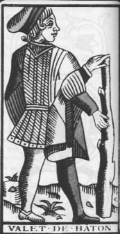
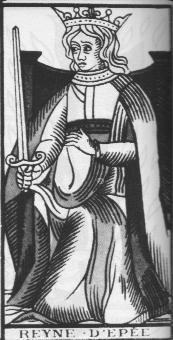
FIGURE X
(la bâton - l'épée)Les cinquante-six cartes ordinaires, ou arcanes mineurs, sont divisées en quatre couleurs : les bâtons, les épées, les deniers, les coupes, et numérotées de un à dix, plus quatre cartes maîtresses: le roi, la dame, le cavalier et le valet. On pourrait identifier les quatre groupes à la société médiévale: la paysannerie est symbolisée par le bâton; la noblesse par l'épée; le commerce par la pièce d'or et le clergé par le
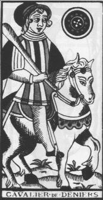
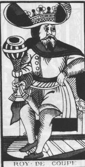
FIGURE XI
(Denier - coupe)calice ou coupe (fig. 226 à gauche, et 227 à gauche). Dans leur ordre, ces cartes rappellent nos Jeux modernes. Elles étaient à l'origine, sans doute, séparées des arcanes majeurs qui forment bande à part D'ailleurs, les deux catégories ne se mêlent pas bien. Les vingt-deux cartes d'atouts, ou arcanes majeurs, sont les figures suivantes:
- I. Le Bateleur ou Pagad: il exécute un tour de prestidigitation derrière sa table.
- II. La papesse: une femme assise sur un trône et couronnée d'une tiare.
- III. L'impératrice: une femme tenant un sceptre.
- IV. L'empereur: un homme couronné sur son trône, vu de profil.
- V. Le pape, bénissant deux personnes à genoux.
- VI. Les amoureux: un jeune homme entre deux femmes; au-dessus, Cupidon et son arc.
- VII. Le chariot, tiré par deux chevaux, et monté par un roi, un héros.
- VIII. La justice: son allégorie, une femme avec une balance et une épée.
- IX. L'ermite: un vieillard portant une lanterne et un bâton.
- X. La roue de fortune, faisant tournoyer trois animaux.
- XI. La force: un personnage féminin forçant un lion à ouvrir la gueule.
- XII. Le pendu: un personnage suspendu à un gibet par un pied.
- XIII. La mort, fauchant des têtes et des membres humains.
- XIV. La tempérance: une femme qui transvase un liquide d'une jarre dans l'autre.
- XV. Le diable et deux satellites.
- XVI. La maison-Dieu, ou la foudre: des hommes précipités d'une tour frappée par le feu ou un éclair.
- XVII. L'étoile: une femme agenouillée dans l'eau et versant les liquides de deux jarres. Au dessus d'elle, huit étoiles.
- XVIII. La lune: deux chiens hurlent à la lune, dans un bassin, on voit le Cancer du Zodiaque, parce qu'il est la maison de la lune.
- XIX. Le soleil: deux enfants devant un mur, et l'astre au dessus d'eux
- XX. Le jugement: un ange soufflant dans une trompette et la résurrection.
- XXI. Le monde: une femme nue encadrée d'une couronne de feuilles, aux quatre coins, les emblèmes des quatre EvangelistesUn arcane ne porte pas de numéro, le fou ou excuse ; Habillé comme un bouffon, portant son balluchon au bout d'un bâton ou d'une cuiller, il marche d'un air rêveur, sans prendre garde a un chien qui lui mord la cuisse.
Voici la liste complète du sens direct des cartes, selon Papus [...]
Pour ces arcanes majeurs, nous ne donnons que la signification immédiate
- I. Le bateleur: l'interrogateur, Dieu, autorité, pensée active, diplomatie, toutes les cartes proches du bateleur étant importantes pour la destinée du sujet.
- II. La papesse: l'interrogatrice, pour la femme, même valeur que le bâte leur Science, mystère, recueillement, repos.
- III. L'impératrice: initiative, action, amour, famille.
- IV. L'empereur: volonté. Providence, raison, gouvernement.
- V. Le pape: inspiration, guide, prêtre, avocat.
- VI. L'amoureux: passion, liberté, union, concorde.
- VII. Le chariot: triomphe, protection de la Providence, intelligence, indépendance.
- VIII. La Justice: justice, responsabilité, équité.
- IX. L'ermite: sagesse, prudence, initiation, mystique.
- X. La roue de fortune: le destin, le temps, bonne fortune, grâces.
- XI. La force: force, effort, travail, courage, patience.
- XII. Le pendu: sacrifice, épreuve, discipline, soumission.
- XIII. La mort: mort, renaissance, perpétuité, humanité.
- XIV. La tempérance: économie, modération, chasteté, calme.
- XV. Le diable: maladie, grande force, impulsion irrésistible, violence.
- XVI. La Maison-Dieu: ruine, déception, châtiment, humiliation.
- XVII. L'étoile: espoir, influences célestes, éloquence, vie de la nature.
- XVIII. La lune: danger, ennemis, faux amis, trahison.
- XIX. Le soleil: mariage, bonheur, découverte, illumination spirituelle.
- XX. Le jugement: transmutation, changement, réveil, surprise.
- XXI ou XXII. Le monde: succès, harmonie, satisfaction, perfection, guérison.
- XXIII. Le fou: folie, inspiration, initie, confiance, enthousiasme. [cet arcane est en principe dépourvu de numéro à escient]On peut difficilement quitter le Tarot sans étudier plus en détail l'un au moins des Arcanes. Choisissons le premier,le bateleur (fig 236). Son
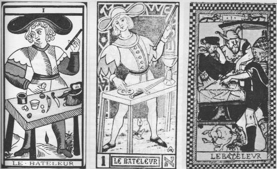
FIGURE XII
(fig. 236 à 238)numéro est un, auquel, dans les cartes modernes, a été ajoutée la lettre hébraïque Aleph (fig 237) Pourquoi un prestidigitateur en tête de ce Jeu merveilleux ? [Seligmann précise que le premier atout de Tarot est aussi appelé pagad, mot mystérieux dérivé, selon Parravicinio, de paghead, qui signifie « la fortune ». Les Italiens ont interprété le mot comme bagatto, savetier, sur la table de qui on voit des alènes et d'autres instrumenys de travail] Était-ce pour indiquer qu'en dépit des efforts que l'on fait pour trouver l'ordre dans le monde, on reste victime de l'illusion ? Dans la cabale, Aleph exprime l'esprit du Dieu vivant. Attribuer le nombre « un » à un bateleur pourrait passer pour un blasphème, le bateleur étant l'ennemi du clerc et du magicien, parce qu'il contrefaisait les miracles par sa dextérité et répandait le scepticisme. Pourtant, certains devins identifiaient cabalistiquement les personnages avec l'esprit de Dieu. La lettre Aleph, disaient-ils, est écrite dans la position donnée au corps du bateleur, son torse est incliné de côté et en arrière, et il lève un bras tandis que l'autre est abaissé. Il est le Aleph, l'esprit maître de l'univers, qui s'étend devant lui comme la table du bateleur. Toutes les choses de la création se bousculent près de lui comme si elles étaient les objets du bateleur. Il désigne le haut et le bas, confirmant ainsi l'enseignement d'Hermès Tnsmégiste, selon lequel tout ici-bas est à l'image de ce qui est dans le ciel, et l'homme, le microcosme, contient tous les éléments de l'univers [cf. la Table d'Emeraude] ; l'étude de l'homme nous fera comprendre toutes les merveilles de la création.
L'interprétation que donne Court de Gébelin du bateleur est très sobre et empreinte du pessimisme d'un savant d'avant la Révolution. Le jeu, dit-il, commence par un trompeur et se termine par un fou. L'homme qui se trouve entre eux mérite leur compagnie. Qui était le fou, et qui était le bateleur au temps de Gébelin ? Le roi de France, dont la politique était moitié jonglerie, moitié sentimentalité, laissait tout aller à vau-l'eau, et les gens instruits et les philanthropes, qui se croyaient choisis pour mener le peuple vers des temps meilleurs, oubliaient que leurs rêves et théories ne pouvaient rassasier les masses faméliques — prêtes à les attaquer, comme des bêtes enragées. Le bateleur tient le bâton du peuple, qui balayera de la table les louis des commerçants, les vases sacrés du clergé et les épées de la noblesse. Les Égyptiens, dit Gébelin, comptaient leurs cartes de Tarot depuis le nombre le plus élevé jusqu'au plus bas. Pour eux, le bateleur était une allégorie du monde d'ici-bas :« II est à la tête du gouvernement, il indique que cette vie n'est qu'un rêve, une jonglerie, un perpétuel jeu de hasard qui dépend de mille circonstances »
Le bateleur d'un jeu de Tarot imprimé à Pans en 1500 est un personnage politique (fig 238). Habillé en berger ou en mage, on le montre donnant conseil au roi, qui est penché sur une carte étalée sur la table. Le geste du prince exprime à la fois la confusion et la méditation, comme s'il essayait de résoudre un dilemme. Un troisième personnage, le fou du roi, écoute avec un intérêt passionné, suivant du regard les mains du bateleur, qui désigne sur la carte deux points différents. Le bateleur, par ses facultés intellectuelles, peut-il accorder des éléments contradictoires ? Roi, fou et bateleur discutent le sort de la nation. Ils ne réussiront pas, car leur effort est caricaturé par un singe cherchant des puces sur le dos d'un chien endormi. Alliette tenait cet atout en faible estime. Il pensait qu'un personnage aussi indigne ne pouvait inaugurer le jeu. II plaça le bateleur au numéro XV, où réside le diable selon la tradition du Tarot :
« Le bateleur, dit-il, signifie la maladie, bien qu'on l'ait injustement considéré comme le symbole de la santé »
— Allusion à feu Louis Capet, sans doute. Des méthodes d'interprétation aussi simplistes ne plurent pas aux fameux mages du dix-neuvième siècle Eliphas Lévi, qui qualifie Alliette de « perruquier inspiré », repoussa cette idée grossière. Le sens d'une carte doit être trouvé en de nombreux domaines, dit-il, dans le monde divin, dans la nature, dans le microcosme humain, dans l'intellect et dans le monde des ténèbres. Pour Lévi, le Tarot est un sommaire monumental de toutes les révélations anciennes, la clé des hiéroglyphes égyptiens, de Salomon, des écritures d'Enoch et d'Hermès. Une telle affirmation ouvrait de nouveaux horizons aux cartomanciens. Sous l'influence de Lévi, Papus donna du bateleur cette pompeuse interprétation
« II est l'Homme en tant qu'unité collective, le principe de la maîtrise et de la domination sur la terre. C'est de ce sens hiéroglyphique que sont dérivées les idées d'unité et de ce principe qui détermine l'unité. L'Homme ou le microcosme, l'unité et le principe, tel est le sens du bateleur [...]Mais une considération attentive de ce premier atout, poursuit-il, nous éclairera encore davantage ».
Selon Papus, le chapeau du bateleur a la forme du symbole de la Vie Étemelle, ¥, ou l'infini, selon les mathématiques. La partie inférieure de la figure représente la terre, ornée des symboles de la nature. En général, on représente l'homme derrière une table sur laquelle sont posées des coupes, des épées et des pièces d'or. Le quatrième emblème des cartes ordinaires, c'est a dire le bâton, il le tient dans sa main levée. La signification de ces quatre emblèmes est expliquée cabalistiquement par Papus. Ils renferment les quatre lettres de Jéhovah [...] , le tétragrammaton est identique au bâton, qui signifie le principe actif de Dieu, [...], le calice ou la coupe symbolisant le principe passif de l'univers ; l'épée, est le symbole d'équilibre, ou de l'homme Le second [...] (la dernière lettre) est
« le symbole cyclique de l'éternité unissant les trois autres principes »
Ces symboles, dit Papus, correspondent aux quatre grandes castes humaines les hommes de [...] sont les inventeurs, la noblesse de l'intelligence, les hommes de [...] sont les gardiens des grandes vérités découvertes par les inventeurs. La troisième caste est celle des hommes d'épée, défenseurs des conquêtes spirituelles ; ce sont des combattants, la noblesse d'epée. La dernière caste est celle des masses, de la multitude desquelles émergent les trois noblesses. Ces symboles sont placés au hasard sur la table du bateleur, tandis que dans le vingt et unième atout, le monde, ils sont ordonnés, placés aux quatre coins de la carte. Les quatre emblèmes des Evangélistes ne sont autre chose que le tétragrammaton (fig 239). Les deux cartes se
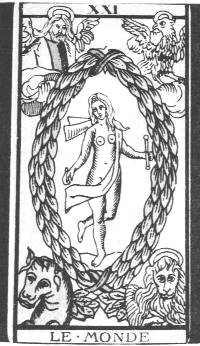
FIGURE XIII
(fig. 239)complètent l'une l'autre, les nombres un et vingt et un additionnés faisant vingt-deux, nombre total des arcanes majeurs. En résumé, Papus déclare que :
« en haut de la figure se trouvent le nombre et la lettre hébraïque de la lame. Au-dessous, le nom vulgaire de la carte. A droite du tableau sont les significations dans les Trois Mondes Divin, Humain et Naturel. Au-dessous se trouve pour chacune des lames sa clé absolue, selon l'image des révolutions du mot lod hé vau he »
Comment pouvons-nous utiliser ces allusions occultes pour l'interprétation de la carte du bateleur ? Ceci est une autre affaire dont Papus ne parle pas clairement. Eliphas Lévi déclarait que « la vérité devait être voilée, mais non cachée au peuple ». Nous croyons que Papus ajouta au bateleur juste un voile de trop. Revenons donc à l'aimable Oswald Wirth qui nous dit que cette figure fait allusion dans un sens positif aux qualités suivantes de l'homme initiative, spontanéité de l'intelligence, acuité de discernement et de compréhension, vivacité d'esprit, maîtrise de soi, indépendance, rejet des suggestions d'autrui, émancipation de tous préjugés. En un sens ambivalent ou négatif, le bateleur peut s'interpréter [les termes qui suivent mettent en évidence des substantifs qui qualifient le Mercure] comme la dextérité, l'intelligence, le raffinement, la diplomatie, le don de persuasion, un avocat, la perspicacité, l'habileté, l'agitation, le manque de scrupules, un agresseur, un menteur, un fourbe, un charlatan et un exploiteur de la candeur humaine. [...] Dans son interprétation métaphysique du personnage, Wirth s'appuie principalement sur les interprétations de Papus Les quatre lettres hébraïques qui désignent Dieu et les quatre emblèmes des Evangélistes sont, selon lui, identiques La synthèse est enrichie par Wirth qui ajouta les quatre éléments a, cette tétrade mystique:
Denier Épée Coupe Bâton
Carreau Pique Cœur Trèfle
Terre Air Eau Feu
Taureau Aigle Ange Lion[voilà des équivalences du plus haut intérêt pour le cabaliste alchimique. Notez que, malgré l'erreur d'interprétation de la lame XXI - le taureau pris pour un cheval - nous avions déjà déterminé qu'il ne pouvait correspondre qu'à l'élément TERRE. Mais le tableau donné par Wirth est inexact : en effet, il attribue l'AIR à l'Aigle alors que la cabale veut que ce soit l'EAU qui lui soit attribué ; d'ailleurs le combat entre l'Aigle et le Lion ne pourrait pas se comprendre sinon...Et l'ange doit se voir attribuer l'AIR. De même, le coeur ne peut être attribué à l'EAU mais au FEU ; aussi proposons-nous le tableau suivant de substitution, en y intégrant les quatre Evangélistes :
Denier Épée Coupe Bâton
Carreau Pique Trèfle Coeur
Terre Air Eau Feu
Taureau Ange Aigle Lion
Luc Matthieu Jean Marc
Sel Mercure Mercure SoufreIl ne faut pas s'étonner de voir le Mercure marqué deux fois : le double Mercure ou Mercure philosophique forme avec le Rebis l'oeuf de Sages, disposé dans l'athanor : une partie du Mercure représente le soufre, c'est celle liée à l'AIR ; l'autre partie est liée au Sel et appartient à l'élément EAU. Ces correspondances sont évidemment posées en pure conjecture ; nous invitons le lecteur à nous faire par de ses remarques afin d'améliorer ces équations symboliques. ]
Pour posséder les quatre objets mystiques, on doit avoir subi l'épreuve des éléments On doit triompher de l'air, ce qui, pour le cabaliste, s'accomplit par la parole. Cette victoire lui donnera l'épée, symbole du mot qui chasse les fantômes de la terreur. La conquête de l'eau signifie l'acquisition du Saint-Graal, la coupe de la sagesse. L'épreuve du feu, la plus haute initiation, aura pour récompense le bâton de commandement, qui est le sceptre du roi [il s'agit de l'équivalent du bourdon de pèlerin] et signifie que le sage règne par son propre pouvoir et incarne une volonté souveraine. Wirth ne montre pas seulement les dispositions du sujet, il donne aussi des conseils pour le perfectionnement personnel. La première condition est d'être toujours actif, même sans profit, plutôt qu'indolent. [c'est l'un des meilleurs conseils à donner pour vivre vieux dans de bonnes conditions, sans fumer et sans excès de boisson : deux à trois verres de bon vin rouge par jour, seuls, seront bienvenus] Naturellement, l'atout du bateleur exprime le mouvement perpétuel qui anime l'univers, ainsi que le corps et l'esprit de l'homme :
« L'individu, dit Wirth, doit accomplir sa mission qui est de se créer lui-même, de devenir un homme complet, un homo totus »
Les savants modernes parleraient de ce développement comme d'un « processus d'individuation ». L'homme complet est, selon Wirth, la réfraction de la cause première, la principale unité dans le soi. L'idée n'est pas complètement différente des théories du psychanalyste C.-G. Jung [cf. le Psychologie et Alchimie, Buchet-Chastel, 1970]. Le fait que trois pieds seulement de la table du bateleur soient visibles n'est pas une coïncidence. D'après Wirth, ils représentent le soufre, le sel et le mercure, les trois piliers du monde matériel,
« les supports de la substance élémentaire qui tombe sous nos sens »
Mrs John Kmg van Rensselaer ajoute quelques observations intéressantes. Convaincue que les flèches ou bâtons divinatoires sont les ancêtres du Tarot, elle insiste sur le fait que le bateleur manipule sa baguette devant la table. C'est la baguette magique, « aisément reconnue comme telle par l'éminent Français (Gébelin) »
« C'est l'un des emblèmes reproduits dans l'as de bâtons, de barre ou de sceptres et en le plaçant dans la main du sujet, on veut montrer qu'il a reçu pouvoir de consulter l'oracle »
La table, croit Mrs van Rensselaer, était déjà objet rituel dans l'antiquité. [...]
Kurt Seligmann termine son chapitre sur le Tarot en présentant un exemple de fausse carte, comme celle du savetier qui remplace la bateleur dans un jeu italien (fig. 240). Transition toute trouvée pour parler, dans l'interprétation du Tarot des Bohémiens par Papus, d'une interprétation « alternative » du XIXe siècle qui ne nous convainc vraiment pas...
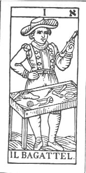
FIGURE XIV
(fig. 240)
III. Le Tarot des Bohémiens d'après Papus
Cet ouvrage n'est pas disponible. Heureusement, Jollivet-Castelot, dans son Opuscule Comment on devient alchimiste, traité d'Hermétisme et d'Art spagyrique basé sur les règles du Tarot [avec une préface de Papus, Chamuel, Paris, 1897] a résumé les écrits de Papus.
TABLEAU DE CONCORDANCE DES ARCANES MAJEURS
RAPPORTS SIGNIFICATION [abréviations : K : Kabbala - A : astrologie ; entre () la lettre de la lame en hébreu]
1ère Lame (aleph). Le Bateleur. (lod). Kabbale: Kethar. Force attractive (et par développement dans les trois mondes) : Affinité —Soûlphre. —Acide. —Matière Une—Adepte.
2ème Lame (beth). La Papesse. (Hé). K: Chocmab, R. astrologiques : Lune Lundi. Matière presque inerte, passive. Reflet de I, le Bateleur. — Mercure. — Base. — L'Initiation.
3ème Lame (ghimel). L'Impératrice. (Vau) K.: Binah-Astrologie : Vénus, Vendredi Sel. — Médiateur.— Esprit vivifiant.— Mouvement.
4ème Lame (daleth) L'Empereur. (Hé). K : Chesed. Astrologie. Jupiter, Jeudi. Azoth (Lumière astrale ; fluide éthéré).
5ème Lame (hé). Le Pape. K : Péchad. Astr. Bélier, Mars. Quintessence (Reflet d'Azoth).
6ème Lame (vau).). L'Amoureux, Répétition de l'arcane I ; équilibre de l'azote et de la quintessence - Éléments. K. :Tiphereth. Astr. Taureau, Avril. Feu.— Air.— Eau.— Terre.
7ème Lame (zaïn). Le Chariot. Tendance à l'êçuilibre, c'est-à-dire à la combinaison des éléments pour se réaliser ensuite en se séparant. K : Hod. Astr. Gémeaux, Mai. Le Fixe et le Volatil.
8ème Lame (heth). La Justice.— L'Existence élémentaire. K : Nizah. Astr. Cancer, Juin. Hydrogène. — feu.
9ème Lame (teth). l'Hermite. K : Jesod. Astr. Lion, Juillet. Oxygène. — Air.
10ème Lame (iod). La Roue de fortune. K : Malchut. Ast. Vierge, Août. Azote. — Eau.
11ème Lame (eaph). la Force., A: Mars, Mardi. Carbone. — Terre.
12ème Lame (lamed). Le Pendu. A : Balance. Septembre Le Vitriol (Dissolution de Métaux).
13ème Lame (mem). La Mort (Équivaut au principe transformateur, à la forme plastique). Les semences métalliques préparées et mises en contact.
14ème Lame (noun). La Tempérance. Involution ou descente de le. force volatile dans la Matière ; Feu dans l'Athanor. Astr: Scorpion, Octobre. Matière à la couleur verte (Régime de Mercure).
15ème Lame (samech). Le Diable. Résultat de la chute: Le Dragon du Seuil, car ici va se produire le grand changement. Astr : Sagittaire, Novembre. Noirceur de la Matière (Régime de Saturne).
16ème Lame (haïn). La Maison-Dieu. Destruction divine; moment définitif. La Chute ; car l'action se produit pour amener la Pierre. Astr : Le Capricorne, Décembre. Commencement du Blanc (Régime de Jupiter).
17ème Lame (phé). Les Etoiles. Expansion des Fluides. — Espérance. Astr : Mercure, Mercredi. Couleur blanche (Régime de la Lune).
18ème Lame (tsadê). La Lune. Avec ce 3ème septénaire finit l'Involution, c'est-à-dire la descente de l'Esprit dans la Matière ; les trois dernières cartes montrent les forces retournant à leur principe commun par l'évolution. A : Verseau, Janvier. Couleurs variées de l'oeuvre (Moment critique). Passe au ronge-brun (Régime de Vénus).
19ème Lame (eoph). Le Soleil. La Nutrition et la digestion des Matières (Règne minéral). A : Poissons, Février. Couleurs de l'Iris (Régime de Mars).
20ème Lame (resch). Le Jugement. Le Mouvement propre ; la Respiration (Règne végétai). Astr: Saturne, Samedi. Couleur rouge (Régime du Soleil).
21ème Lame (shin) Le Mât (Règne animal ou supérieur). la Fermentation de la Pierre.
22ème Lame (thau). Le Monde. Triomphe déflnitif ; le symbolisme est indiqué par la carte : aigle et un ange = volatil ; le taureau = fixe ; le lion = la force transformatrice ; ou encore indication des quatre éléments : Lion = terre ; cheval = eau ; aigle = air; ange = feu ; la femme nue =. la quintessence. L'Absolu alchimique; l'Or alchimique ; la Pierre fihitosophale. Microcosme = Macrocosme.Nous n'avons donné ici que le tableau général de concordance des arcanes majeurs, de Papus, retranscrit par Jollivet-Castelot. Nous n'aurons pas grand'chose à en dire ; non pas qu'il n'y ait rien à dire. Au contraire ! Tout est à dire...mais les bras nous en tombent à force d'interprétations théosophiques et ésotériques. si nous avons montré ce tableau, c'était uniquement dans le but que l'on voit la différence existant notre interprétation, qui s'efforce d'être « raisonnable » et conforme à la cabale hermétique appliquée à l'alchimie, et l'interprétation à notre avis fausse, que donne Papus des XXI Arcanes Majeurs et du Mat.
Les vingt et un arcanes majeurs et leur rapport au grand oeuvre alchimique - notre version notes : Les images que vous verrez ci-après constituent « la version du Tarot Conver faite par Camoin et Jodorowsky. Les détails picturaux qui ont été ajoutés par ces derniers au paquet original de 1760 ne seront pas analysés dans la présente étude. Une bonne réproduction fac-similé du paquet original est fournie par les cartiers Lo Scarabeo de Turin (Italie) » [http://www.ojardimhermetico.hpg.com.br/]. Cliquez sur l'image de chaque lame pour l'agrandir. Cliquez sur le nom de la carte pour voir des originaux de Jean Dodal et de Jean Noblet.
Le Mat
C'est la figure du FOU de l'oeuvre selon les préceptes de Fulcanelli ; le curieux animal qui le poursuit semble être un félin [un chat] ; curieusement, on peut rapprocher ce Mat de l'un des bas-reliefs de Notre-Dame de Paris : la lâcheté. C'est d'une fuite qu'il est question ici, c'est-à-dire d'une dissolution ou d'une volatilisation ; or, un mot suffit à lier ces deux opérations : la sublimation. C'est l'état du premier Mercure, tel qu'il est peint aussi dans les Ripley's scrowles. un Mercure agité, une sorte d'Ajax déchaîné ou d'Orlando furioso. C'est aussi le voyageur, celui qui part sur le chemin de saint Jacques de Compostelle, à la recherche de la fleur et de l'étoile. Le Mat se distingue des autres cartes du tarot en ce qu'il n'a pas de numéro ; ce qu'un hermétisme appellerait sans dimension ; c'est donc la carte zéro : 0 dans laquelle il n'est pas difficile de reconnaître le serpent Ouroboros de la grande tradition. Voici ce que l'on peut lire sur le Mat :
« Il marche, appuyé sur un bâton d'or, le chef orné d'un bonnet de même couleur, semblable à celui d'une marotte [...] C'est un fou, conclura l'observateur abrité derrière les créneaux de la cité. C'est un maître, murmurera le philosophe hermétique, remarquant que le bâton au bout duquel il porte un baluchon flasque, sur l'épaule, est blanc [...], et que ses pieds chaussés de rouge, prennent fermement appui sur un sol bien réel [...]. Sa besace est vide, mais elle est rose, comme sa cuisse et comme le chien qui tente de l'agripper [...] l'or de la connaissance et des vérités transcendantales est la couleur du bâton sur lequel il s'appuie [...] il avance. »
De ces notes, il appert que les chaussures et le baluchon sont les parties les plus importantes du Mat : par leur couleur, rouge, les chaussures indiquent le lieu où l'on trouve le Soufre rouge ou teinture de la Pierre ; quant au baluchon, il est suspendu dans l'air ; c'est assez dire pourquoi sa couleur est blanche [cf. l'Air des Sages, Philalèthe]. Le bâton, c'est le bourdon du pèlerin dont on a ailleurs vu qu'il se rapportait au moyen qui permet d'obtenir la fixation du Mercure [cf. blasons alchimiques]. Quant à l'animal que l'on prenait pour un chat, il s'agit d'un chien [ce n'est pas évident sur la carte]. Le chien, le meilleur ami de l'homme sur cette terre, est aussi très important pour notre alchimiste, cf. l'Atalanta XLVII. M. Carneiro a vu pour sa part que le pied du Bateleur est bien prêt de buter contre une petite pierre - que l'on aperçoit au niveau du pied gauche - et que cette pierre pouvait constituer le symbole de la prima materia, celle dont tous les textes nous disent qu'elle n'a que peu de valeur et que tout le monde l'a, le riche comme le pauvre [à cela, nous ajouterons d'ailleurs que cette réflexion, valable jusqu'au début du XXe siècle, ne l'est pratiquement plus aujourd'hui du fait de la modernisation de notre société].
Le Bateleur
C'est la carte I ; son habit est de couleur bleu et rouge et de façon générale, ses couleurs le signalent comme un être divisé, produit de deux principes opposés, dominés par l'Esprit : on aura reconnu le Rebis ou homme double igné de Basile Valentin. On aura aussi noté que le Bateleur représente un escamoteur ; c'est dire que la formation du Rebis passe par des phases d'équilibre instable où le noir le dispute au blanc ; plus précisément, il semble que sa formation définitive soit marquée par des irisations où l'on reconnaît les couleurs de la queue de paon. Le chef du Bateleur rappelle en outre le signe ¥ : l'infini. Et que ses pieds sont d'équerre [cf. Fontenay pour des développements sur le symbolisme alchimique de l'équerre]. On a comparé la table - dont trois pieds seulement sont visibles - :
« des signes soufre, sel et mercure, car ce sont les trois piliers du monde objectif. »
Sans verser dans un ésotérisme de bas aloi, nous dirons simplement que le Bateleur porte sur lui-même les symboles qui permettent de comprendre que nous avons affaire à un Mixte formé du Soufre et du Sel. Voyez encore les divers objets posés sur la table, qui correspondent aux arcanes mineurs : deniers, coupe, épées, bâton. Ils ont une signifiance alchimique certaine pour l'étudiant qui possède déjà quelque teinture de science [voyez ces termes en recherche]. Ce que la carte montre mal, c'est que le Bateleur a des cheveux blancs, terminés par des boucles d'or : c'est marquer la nette transition entre l'oeuvre au blanc et l'oeuvre au rouge, car le Rebis n'est encore qu'un état intermédiaire de la Pierre, à une époque du 3ème oeuvre où le Soufre mêlé au Sel sont encore dissous dans les limbes de l'Esprit. Voilà pourquoi l'arcane est assimilé assez souvent au mystère de l'Unité ou plutôt, si l'on veut être exact, de la trinité faite Une [l'En To Pan de la Chrysopée de Cléopâtre, cf. Chimie des Anciens, Berthelot]. Escamoteur ou prestidigitateur, ces deux termes qualifiant le Bateleur donnent en grec yhjopaikth, de la racine yhjoV. Or, yhjoV signifie toute pierre polie ou travaillée, et notamment, toute pierre précieuse. On voit par là que le Bateleur est, pour ainsi dire, à la croisée des chemins et qu'il désigne une époque du 3ème oeuvre où l'Artiste polit effectivement sa pierre, par l'EAU et le FEU. Remarquez aussi la baguette qu'il tient dans la main gauche ; c'est la même que celle de la Vierge, dans son amande mystique, lame XXI. Mais le Bateleur, c'est encore celui qui fait des miracles [qaumatopoioV] au sens chrétien du terme : il prépare donc la Résurrection du Christ, ou, si l'on préfère la renaissance du phénix. On peut rapprocher cette lame de la planche XIII du Mutus Liber, où nous assistons à la préparation du Rebis.
La Papesse
Carte n° II, la Papesse apparaît assise comme une déesse. Voici comment elle est décrite :
« Elle cache sous un manteau bleu, à col et fermoir jaunes, sa longue robe rouge sur laquelle se croisent deux cordons jaunes ; symbole de la force de l'Esprit qui ne veut pas encore se manifester au-dehors [...] »
Comme telle, elle symbolise absolument le signe zodiacal de la Vierge, dans lequel l'hermétiste reconnaît le signe de la gestation ; l'Esprit est le Mercure et sa Force en est le Soufre rouge qui y est sublimé, en attente de sa prochaine réincrudation. Sur la Force, cf. Gardes du corps et Esprit Gobineau [Vices et Vertus de Notre-Dame de Paris]. Le livre qu'elle tient ouvert est à l'image de celui que tient la Philosophie, à côté d'un autre, fermé : c'est l'indice sur l'ouverture du métal, réalisée ici, en puissance dans le bas-relief de Notre-Dame. On écrit encore que :
« un voile blanc tombe sur ses épaules et sa tête se détache sur une draperie de couleur chair [...] Ce voile blanc fait penser à Isis [...] »
Nul doute que la Papesse soit d'essence chthnonienne à l'instar de Cérès et Perséphone, dont Fulcanelli disait qu'il s'agissait de trois têtes sous le même voile [sur Isis, cf. Chevreul, I]. On la compare encore à Junon ; nous opterions plutôt pour la grande déesse d'Asie Mineure, Cybèle et ceci pour plusieurs raisons : elle symbolise avant tout une prêtresse qui détient tous les secrets du Monde [par le livre ouvert qu'elle a, posé devant elle, qu'en conjecture on croit être le Livre des Livres]. En un sens, ce livre a le même sens que la pierre noire de Pessinonte, aérolithe qu'elle tient serrée dans sa main gauche. Quant au char de Cybèle, où deux lions sont attelés, on les devine ici dans les couleurs : la Papesse couvre en effet la Force [couleur rouge] et la Justice [couleur bleu] ; c'est nommer, indirectement, le Lion rouge et le Lion vert, c'est-à-dire Atalante et Hippoménès [cf. Atalanta fugiens]. Ou si l'on préfère, Existence [Lion rouge] et Essence [Lion vert]. M. Carneiro voit dans la Papesse une sorte de sphinx. Nous ne saurions lui donner tort : elle représente la Philosophie du Tarot. Il la compare encore à une Vierge noire ; c'est nommer indirectement Isis. Comme le dit Fulcanelli [Mystère des Cathédrales, p. 75], les statues d'Isis devinrent des Vierges noires lors de l'introduction du christianisme en Gaule :
« Isis, avant la conception, représente pour Bigarne [Considérations sur le culte d'Isis chez les Eduens, Beaune, 1862] l'attribut de la Vierge que plusieurs monuments désignent comme la Virgo paritura, c'est-à-dire la terre avant sa fécondation, et que les rayons du soleil vont bientôt animer. »
Sur la virgo paritura, cf. 1, 2, 3, 4, 5, 6, 7, 8, 9, 10. Toujours selon Fulcanelli, ces Vierges Noires désigneraient :
« [...] la terre primitive, celle que l'artiste doit choisir pour sujet de son grand ouvrage. C'est la matière première à l'état de minerai, telle qu'elle sort des gîtes métallifères, profondément enfouie sous la masse rocheuse. » [Myst., p. 76]
Il suffit de lire l'un des recueils de Jacques-Joseph Ebelmen sur la décomposition des espèces minérales de la famille des silicates [cf. Mercure de nature] pour trouver immédiatement qu'elle est cette terre primitive. Et surtout pourquoi elle a droit à ce qualificatif de « primitive » qui ne pourrait se comprendre autrement. Aussi est-ce avec à propos que l'Adepte poursuit :
« La cathédrale de Chartres est la mieux partagée sous ce rapport ; elle en possède deux [les Vierges noires], l'une désignée sous le vocable expressif de Notre-Dame-sous-Terre, dans la crypte, est assise sur un trône dont le socle porte l'inscription déjà relevée : Virgini paritura ; l'autre, extérieure, appelée Notre-Dame-du-Pilier, occupe le centre d'une niche remplie d'ex voto sous forme de coeurs embrasés. » [Myst., p. 76]
N'est-ce pas là nous donner en quelque sorte le sujet et son objet ? Ne comprend-on pas que Notre-Dame-sous-Terre n'est autre que le principe même de cette terre primitive, celle dont Jollivet-Castelot, de façon très surprenante, donne le nom vulgaire dans son opuscule Comment on devient alchimiste, traité d'Hermétisme et d'Art spagyrique basé sur les règles du Tarot, cf. supra le Tarot des Bohémiens? Et que Notre-Dame-du-Pilier n'est autre que ce temple monolithe que Zosime de Panopolis exhorte l'étudiant à construire en albâtre et en céruse [cf. Prima materia], avant l'embrasement final qui, au vrai, est la réincrudation, comme l'Adepte le décrit en nous signalant ces coeurs embrasés. Signalons enfin que les feuillets du livre sont une indication quant à la nature du minéral dans lequel il faut rechercher notre terre primitive ; Nicolas Flamel y fait allusion quand il décrit l'aspect - tout à fait extraordinaire - du Livre d'Abraham Juif [1, 2, 3,].
Troisième carte, l'Impératrice représente la force motrice et l'intelligence souveraine par laquelle :
« vit tout ce qui vit ».
Cette image doit être rapprochée de la planche IX du De Lapide Philosophorum de Lambsprinck qui lui est superposable. Mais le Mercure terrassant le dragon est ici remplacé par l'oiseau fabuleux que l'on aperçoit sur l'écu que nous présente la Mère cosmique à laquelle est souvent comparée l'Impératrice. Observez le bourdon et l'emblème de la stibine des Sages, autrement nommée l'antimoine saturnin d'Artephius ou le stibium de Jacques Tol. Plusieurs alchimistes croient encore qu'il s'agit du sulfure d'antimoine vulgaire ; Fulcanelli a mis en garde l'étudiant contre le danger qu'il y a à trop vouloir prendre les textes alchimiques par le Verbe, alors qu'ils doivent être lus par l'Esprit. On présente l'Impératrice assise sur un trône de couleur chair, les cheveux blancs ; elle revêt une tunique bleue sur une robe rouge. C'est un aigle qu'elle tient sur son écusson [sur l'aigle, cf. recherche] ; cet aigle désigne l'élément EAU et non l'élément AIR comme on le croit trop souvent [cf. lame XXI]. On a interprété la stibine comme :
« l'âme intellectuelle, l'influence ascensionnelle ou spiritualisante, l'esprit se dégageant de la matière, l'évolution, la rédemption. »
Sans vraiment confirmer ces réflexions qui nous paraissent un peu confuses, voilà ce que l'on peut ajouter : l'âme intellectuelle représente le Soufre rouge dissous dans le Mercure philosophique, désignant le Compost ; il est certain qu'à un moment du 3ème oeuvre, l'Esprit va commencer à se sublimer, c'est-à-dire à s'évaporer, déterminant dans la solution sursaturée le début de la cristallisation : c'est ce que l'on l'appelle l'incarnation de l'Âme ou, si l'on préfère, l'envenimation du Monde [cf. Jamblique et Festugière]. Sur Isis, à laquelle on a comparé l'Impératrice, cf. Atalanta fugiens. C'est la Vertu de la Force qui est symbolisée avant tout et cette lame de tarot a déjà été commentée dans la section des Gardes du Corps, lorsque nous avons évoqué Court de Gébelin. Nous avions d'ailleurs assimilé l'Impératrice non pas tant à Isis qu'à Minerve. L'Impératrice, au plan alchimique, représente donc le Mercure philosophique, dument préparé et animé sous l'espèce de l'aliment qui nourrit le Rebis : il s'agit du Lait de Vierge. L'Impératrice, comme le dit à propos M. Carneiro, incarne la Vierge blanche, comme la Papesse incarnait la Vierge noire, correspondant au sujet primitif brut, tel qu'il est tiré des gîtes miniers. Ici, l'Aigle et la stibine sont les deux ingrédients dont l'Artiste aura besoin pour nourrir sa matière avant la renaissance du phénix. Toutefois, il faut noter que dans le tarot de Dodal, 1715, conservé à la bnf, l'aigle est noir et la stibine possède une croix patée dont nous avons parlé dans la section des Gardes du Corps. Papus, d'après ce qu'en rapport Jollivet-Castelot, écrivait que :
« l'Impératrice, nous indique le Saint-Esprit, médiateur plastique, lien entre Force et Matière, fixe et volatil, le Sel ou Mouvement (vau) général. » [Opuscule..., le Tarot alchimique, cap. II, p. 67]
Ce n'était pas mal trouvé : mais il faut traduire ; la Force représente le Soufre rouge en puissance, le rayon igné solaire que l'Artiste doit capter dans un écrin, désigné ici par la Matière et peut-être aussi par le Sel [nous sommes à peu près certain que Papus ne voulait pas désigner le Corps de la Pierre ou Soufre blanc, mais le hasard fait parfois bien les choses...]. Quant au Saint-Esprit, il désigne évidemment le Mercure philosophique, à l'oeuvre en plein du signe de la Balance jusqu'au signe du Verseau inclu [cf. schéma des signes de l'oeuvre et zodiaque alchimique].
L'Empereur
Quatrième arcane du tarot, l'Empereur symbolise :
« l'empire, la domination [...] la suprématie de l'intelligence dans l'ordre temporel et spirituel. »
Il faut en rapprocher l'impératrice ; du reste ces deux cartes sont-elles en rapport avec le Mercure ; l'une représentant l'hiéroglyphe de la partie femelle et l'autre - la IVème carte - la partie mâle. Cette opposition se manifeste par la façon dont l'aigle est représenté sur l'écu :
« [...] tête et ailes tournées en sens contraire de l'aigle de l'Impératrice, pour assurer l'équilibre des forces par l'opposition des contraires. »
Nous ne reviendrons pas ici sur le symbolisme de l'aigle, complexe, que nous avons envisagé dans de nombreuses sections [Atalanta fugiens, humide radical métallique, Matière, etc.]. L'Empereur marque, par rapport à l'Impératrice, une tendance nette à se tourner du côté du fixe : c'est, en effet, la couleur rouge qui domine sur le bleu ; au lieu que c'est le bleu qui domine dans les habits de l'Impératrice, plus tournée du côté du volatil. On pourrait rapprocher les lames III et IV de l'emblème XLVII de l'Atalanta fugiens. Du coup, la chienne d'Arménie [le bleu arménien] trouve son évidente correspondance dans la lame III tandis que le chien du Corascène la trouve, lui, dans la lame IV. Remarquez la position croisée des jambes de l'Empereur, colorées en bleu : c'est un c qu'elles dessinent, ce même c dont nous parle Fulcanelli, étroitement lié au Mercure. Cet arcane, chose remarquable, est encore appelé pierre cubique par les hermétistes : il faut y voir la collaboration des eléments et y rattacher encore l'emblème XXXVI de l'Atalanta fugiens, où l'on voit quatre pierres dans l'eau [c'est-à-dire le Mercure] figurant les éléments à l'oeuvre. Cette pierre cubique a été évoquée par Fulcanelli dans le Mystère des Cathédrales, à propos d'un bas-relief de Bourges [intérieur du Palais Jacques-Coeur, cliché Alain Mauranne] représentant le mythe de Tristan de Léonois. Cf. Atalanta, XI. Nous avons également signalé dans la section Fontenay que le mercure commun se dépose en octaèdre avant de prendre une forme cubique en passant par une forme cubo-octaédrique. C'est très certainement cette curieuse particularité qui a fait désigner la pierre cubique à pointe comme l'un des emblèmes clefs de la
franc-maçonnerie. Papus pense que l'Empereur représente l'Azoth des Sages. Si l'on s'en tient à la définition qu'en donne Artephius dans son Livre Secret, l'Azoth n'a que peu de rapports, à notre avis, avec la lame ou du moins, nous avons vu que c'était la qualité mercurielle du Soufre qui, sans doute, était désignée ; Fulcanelli a fait voir que les alchimistes appelaient leur matière, tantôt Soufre, tantôt Mercure, selon la forme qu'elle prenait à des époques différentes de l'oeuvre : c'est donc une question de nuance, mais c'est plus qu'un point de détail.
Le Pape
Cinquième arcane, le Pape porte les emblèmes du Lion rouge : la couleur rouge domine à présent ; sa main gauche tient le sceptre de l'arbre solaire [Arbori solare] à sept branches ; voyez encore les deux colonnes bleues qui évoquent celles du temple de Salomon, c'est-à-dire de l'athanor. Sa main droite indique aussi qu'il tient lieu d'évêque, et qu'à ce titre, c'est un Soufre encore sublimé qui se présente à nous, puisque la figure de l'évêque est celle du Mercure. En bas, deux personnages : l'un, à droite, est vêtu de rouge et a une étoile jaune : c'est le symbole du Soufre rouge ou agent que l'on reconnait à sa main gauche qui est levée en signe de reconnaissance ; l'autre, à gauche, est le patient que l'on reconnait par sa main droite qui est abaissée ; l'agent s'efforce de répandre la doctrine traditionnelle et contracte des rapports avec la Force ; le patient - Soufre blanc - est abandonné à l'Humilité qui lui fait recevoir, par un mécanisme d'accrétion, la teinture. En terme de cabale, le Pape communique son savoir [c'est-à-dire la substance même de son Esprit] ; son arcane porte le chiffre de la quintessence [5], c'est-à-dire du Soufre dissous. Il paraît que le Pape est parfois considéré dans d'autres pays [la Belgique] comme Bacchus [cf. Atalanta fugiens]. On peut encore mentionner sa triple couronne qui évoque les trois parties du magistère : elle se retrouve dans l'emblème de Limojon de saint Didier [cf. le Triomphe hermétique et la Lettre] qui est un véritable compendium de l'oeuvre. En quelque sorte, le Pape est équivalent à la Clef VI des Douze Clefs de Philosophie attribuées à Basile Valentin et à la planche 8 de la Philosophia Reformata de Mylius. On a également comparé le Pape à un conseiller [Carneiro] mais nous réservons cette fonction à l'(h)ermite. On en a fait encore un médiateur entre Dieu et le Monde, c'est-à-dire par cabale, un intermédiaire entre le Mercure et le Sel. Voire. Ce Pape est le médiateur entre le Soufre et le Corps : c'est l'artifice dont parle Fulcanelli, que l'Artiste doit employer pour conjoindre les deux extrémités du vaisseau de nature.
L'Amoureux
Cette sixième lame du tarot évoque l'un des symboles les plus importants pour l'alchimiste : l'Aimant, par opposition à l'Acier. Nous avons abordé ce thème dans la section Matière. Voilà ce que nous pouvons ajouter à ces réflexions : l'Amoureux se manifeste comme l'Y pythagoricien et l'on y aura reconnu le Rebis [cf. Atalanta XXXVIII]. Cet Y cache en fait le u grec majuscule [U]. Nous observons deux femmes qui encadrent l'Amoureux. Celle de droite est séduisante et symbolise le Printemps tandis que celle de gauche a l'air sévère et vieilli : on peut y reconnaître l'automne. C'est-à-dire d'un côté, le Bélier et de l'autre la Balance. Voyez là-dessus le zodiaque alchimique. Quant à l'ange qui figure au-dessus de cette scène, nous l'avons évoqué en particulier dans l'Atalanta XXXVII. Celui qui figure ici a ceci de particulier qu'il prend les traits de Cupidon, en une pose que nous avons déjà vu dans l'emblème XXIII de l'Atalanta fugiens. C'est donc d'une liaison qu'il s'agit là de symboliser ; de celle que l'Artiste doit réaliser entre les deux extrémités du vaisseau de nature. Ce vaisseau, cette maison de verre, on l'aperçoit dans le cercle rayonné qui entoure l'ange. Il y a là une indication sur la nécessité de capter un rayon solaire igné [Fulcanelli, Mystère des Cathédrales]. Ce n'est pas tout : les commentateurs du Tarot rappellent ici la parabole d'Hercule au carrefour, ayant à choisir entre le Vice et la Vertu. Si l'on tient compte de ce que nous avons dit plus haut, touchant au Printemps et à l'Automne, il ne sera pas difficile d'y voir aussi les deux crépuscules, celui du matin et celui du soir. Or, au matin, la planète Vénus, sous les traits de Lucifer, annonce le char solaire et Eos aux doigts rosés ; le soir, Vénus est prise pour Hesperus ou Vesper. Dans le premier cas, Lucifer incarne le Vice ; dans le second, l'espoir incarne la Vertu. Voyez là-dessus les médaillons des Vices et des Vertus du grand portail de Notre-Dame, à Paris [cf. Gobineau de Montluisant]. Quant au carrefour, il est présidé d'habitude par la déesse Hécate, représentée sous les traits d'une divinité à trois têtes ; la triple Hécate fut assimilée parfois aux trois divinités Séléné, Artémis et Perséphone. Sa statue s'élevait aux carrefours. On la représente portant son attribut traditionnel, un grand flambeau qui éclaire la nuit - son royaume - et un chien qui la suit, animal qui lui était consacré. Ce dernier point est très
important à noter. Il doit être rapproché du chien de l'arcane I : le Mat. On distingue trois carrefours sur les chemins semés d'embûches, que doit emprunter notre Artiste dans sa route qui le mène évidemment à Compostelle : l'Y, qui fait l'objet de l'Amoureux, la + et l'étoile [de cinq à huit branches, parfois plus]. Nous avons vu que l'Y tenait du Rebis ; la croix tient évidemment au métal qui subit la passion ; quant à l'étoile, protéiforme, son symbolisme complexe nous entrainerait trop loin dans la présente section [cf. recherche : ce thème de l'étoile a été rebattu et évoqué maintes fois]. Chaque carrefour a son maître ; nous venons de voir que l'Y est dominé par Hécate ; la + est dominée sans doute par Hermès, sous la figure de Enodios [cf.Sept Chapitres dorés]. Enfin, l'étoile semble dominée par la figure d'Harpocrate dont on voit un exemple au grand portail de Notre-Dame, à Paris. Sur la route à suivre à la croisée des chemins, voyez l'Atalanta, XXXV, note 14. En somme, il s'agit de savoir pour l'Âme du défunt, c'est-à-dire pour notre chaux métallique dissoute, de quel côté il convient qu'elle se tourne en sorte de pouvoir assurer la projection que l'Artiste [notre Hercule] recherche : ira-t-elle du côté de la Vertu [c'est-à-dire de l'Esprit] ? Alors l'alchimiste ne pourra la rattraper et elle se sublimera définitivement, le frustrant ainsi du résultat escompté. Ira-t-elle du côté du Vice [c'est-à-dire du Corps] ? Voilà qui représente à nos yeux la seule solution, compatible avec la capture de ce rayon igné dont parle Fulcanelli. Ainsi aboutit-on au résultat, que la morale réprouve a priori, que pour faire sa Pierre, l'alchimiste doit obtenir, pour incarner son âme, que le monde s'envenime ; aussi est-ce la raison qui fait écrire à plusieurs artistes que « le monde a été corrompu » [cf. rébus de saint Grégoire-sur Vièvre]. Il n'est point besoin d'insister sur la flèche qui appartient au Sagittaire [cf. zodiaque alchimique]. Pour Papus, l'Amoureux correspond à l'équilibre de l'Azoth et de la quintessence [c'est-à-dire à l'Eau permanente telle que doit la préparer notre alchimiste].
Le Chariot
Septième arcane majeur, le chariot est un objet qui nous est familier. Voyez la Toyson d'or de Salomon Trismosin et les planches du Splendor Solis, dont beaucoup, pour des stades différents de l'oeuvre, représentent des scènes avec des attelages différents. Nous voyons s'afficher au centre de la lame un blason où l'on reconnaît le Taureau, au centre duquel on parvient à distinguer une forme : celle d'un coeur que les alchimistes nomment leur Soufre rouge qui est aussi leur teinture. Le chariot, c'est d'abord le char [voyez le Char de Triomphe de l'Antimoine, du pseudo Basile Valentin]. Son conducteur est tout-puissant et l'on ne peut qu'y voir notre Mercure allié au Rebis : c'est nommer le Compost philosophal comme en témoigne la couleur bleue du bras droit [vu de son côté] du conducteur royal, désignant le Corps de la Pierre, et son bras gauche, de couleur rouge, désignant cette teinture qui se projette dans l'escarboucle des Sages. Ce roi ne porte pas de fouet, mais un sceptre. C'est bien pourtant l'éclair qui est désigné ici et qui symbolise la collaboration entre la TERRE et l'AIR par la médiation du FEU. C'est donc un char du tonnerre qu'il faut voir : il circule dans le Ciel firmamental ou Ciel Chymique, pour reprendre le titre du traité de Jacques Toll. C'est à bon droit que les hermétistes disent retrouver avec la lame VII l'Amoureux de la lame VI. Mais nous ne dirons pas, comme eux, qu'il a vieilli, car ce serait se méprendre sur l'évolution de la matière dans le vase de nature. Non. Il a rajeuni car le processus à l'oeuvre est ce que les alchimistes appellent la réincrudation. C'est donc une forme plus évoluée du Rebis que présente la septième arcane ; à ce titre :
« Sur ses épaules, deux côtés de visage témoignent qu'il a dépassées [ses conflits], c'est-à-dire qu'il avance. »
Signalons les quatre colonnes - i.e. les quatre Eléments - qui soutiennent le baldaquin et qui sont l'exact équivalent du temple monolithe que Zosime préconise de bâtir avec de la céruse et de l'albâtre. Au vrai, l'antimoine est l'albâtre des Sages [Fulcanelli, Demeures Philosophales], ce qui permet de trouver cette transition avec le Char de Basile que nous venons d'évoquer ; comme Fulcanelli d'ailleurs, nous devons avertir l'étudiant contre le danger qu'il y aurait à considérer que la materia prima est le trisulfure d'antimoine [danger relatif à du temps perdu ou des investissements coûteux]. Notez encore que l'écusson où figure le Soufre rouge devrait normalement comporter les initiales S.M., signifiant pour les alchimistes : Soufre et Mercure. Le lecteur pourra avec profit se reporter à l'Escalier des Sages, de Barent Coenders van Helpen où il en saura davantage sur la monade particulière à appliquer aux lettres S et M. En particulier, que la lettre S appliquée par les deux bouts forme un cercle parfait ; il pourra voir, en consultant le Poème du Phénix, attribué à Lactance, dans notre commentaire [note 33], que la lettre M, liée à la lettre L en grec [L] forme le symbole de l'athanor. Qu'enfin, tant la lettre M que la lettre S [S] sont liées, par le moyen de la lettre E. Au total, le septième arcane du Tarot se rapporte à l'évolution du Compost philosophal dans le vase de nature, à une époque où le Soufre se fait Mercure et inversement, rendant ainsi tout son sens à la devise alchimique bien connue : « Solve et Coagula ».
La Justice
« Le huitième arcane majeur du Tarot ouvre le second septénaire, celui qui concerne l'Âme, placée entre l'Esprit (lames I à VII) et le Corps (lames XV à XXI). »
Pour traditionnelle qu'elle soit, cette affirmation correspond-elle à une vérité hermétique positive ? N'est-elle pas plutôt l'illusion provenant de hiéroglyphes perdus, oubliés, qui ont fait dire à un Court de Gébelin que les arcanes majeurs étaient dotés d'une signifiance hermétique sûre ? Il n'aura pas échappé à l'étudiant que cette Justice apparaît plusieurs fois dans l'iconographie alchimique : nous en voyons un exemple avec le Lut de Sapience [figure II, Sigilium Sapientium], qui apparaît dans Huginus à Barma, ou le Règne de Saturne transformé en siècle d'or. Ou encore dans la Clef VII des Douze Clefs de Philosophie, de Basile Valentin. Fulcanelli y a consacré une partie de ses Demeures Philosophales, les Gardes du Corps de François II, duc de Bretagne, dont nous avons donné un commentaire original dans nos gardes du corps. Que dire d'autre que nous n'avons point encore dit sur l'arcane ? Que le signe de la Balance lui est congénère n'étonnera personne ; que l'archange Gabriel terrassant le dragon peut lui être comparé ; que Thémis, au plan mythologique, lui apporte un crédit orphique certain ; qu'au plan chimique enfin, il faut y voir un hiéroglyphe de l'agent qui opère un va-et-vient, c'est-à-dire une substance dotée de propriétés d'oxydo-réduction : seule la chaux [CALX] nous vient à l'esprit. Mais dire que les lames I à VII sont consacrés à l'Âme, voilà qui est, c'est le cas de le dire, par trop réducteur. Voyons cela en abrégé :
Mat = premier Mercure [nul rapport avec l'âme] - Bateleur = le Rebis en un état non fixé - la Papesse = Cybèle - l'Impératrice = Mercure animé et préparé, au plan du patient - l'Empereur = idem, au plan de l'agent, c'est-à-dire de l'Âme - Pape = substance même du Mercure, c'est-à-dire Lait de Vierge - l'Amoureux = l'aimant, par opposition à l'acier, c'est-à-dire la Toyson d'or ou christophore - le Chariot = la réincrudation.
On voit donc que sur sept arcanes, une seulement, l'Empereur peut réellement ressortir de l'Âme, c'est-à-dire de la teinture de la Pierre. Revenons à la Justice : elle est d'habitude coiffée du mortier jaune, Ce mortier est évoqué par Fulcanelli lorsqu'il analyse la salamandre de Lisieux [DM, I, p .243] :
« un homme richement vêtu du pourpoint à manches, coiffé d'une sorte de mortier, et la poitrine blasonnée d'un écu montrant l'étoile à six pointes. »
Fulcanelli assure que cet astre est la substance qui, au cours des sublimations, s'élève au-dessus de l'eau, qu'elle surnage comme une huile. C'est cette huile qui est aussi signalée par Artephius dans son Livre Secret et par bien d'autres encore. Du reste, un signe solaire s'inscrit dans ce mortier qui ne peut laisser aucun doute quant au sens hermétique de cet hiéroglyphe. si à cela, nous ajoutons le collier torsadé et l'épée, nous trouvons tous les caractères propres au feu secret des Sages : ce collier torsadé, c'est ce chêne séculaire torsadé d'un rosier fleuri qui orne l'une des figures du Livre d'abraham Juif [dont Fulcanelli estime qu'il n'a jamais existé que dans l'imagination de l'auteur - inconnu - des Figures Hiéroglyphiques]. Cette torsade évoque ce reliquat de folie qui subsiste comme une trace élémentaire de la nature même du Mercure, ainsi qu'on le voit si nettement dans l'un des Ripley's Scrowles. D'autres l'ont représentée par le glaive de feu [Fig. Hier. encore : saint Paul tenant cette épée à la quatrième figure] ou par une figure d'Isis couronnée de cheveux torsadés, évoquant l'influence de la Lune sur les herbes. L'illuminé Edward Kelly a représenté la même scène par un anneau de paille torsadé, avec cette légende :
« L'image nous montre un vase semblable à un urinal, encerclé à sa base par un anneau de paille torsadée ; à l'intérieur sont Mercure, Mars et Saturne, couchés sur le dos, et un vieil homme est sur le point d'y jeter Vénus et Jupiter. Derrière le vieil homme, sur le rocher noir, se tiennent le Soleil et la Lune. » [le Théâtre de l'Astronomie Terrestre]
Quel est l'artifice qui se cache derrière cette torsade ? Nous gagerions que le mystère peourrait être levé si l'on se tournait du côté de Zeus et de ses attributs. Enfin, le lecteur pourra aussi examiner l'écu entouré d'une double torsade, tel qu'il apparaît dans l’Alchimie de Canseliet, et que l’on retrouve sur un vitrail des Jacobins que Fulcanelli analysa dans son Mystère des Cathédrales, p.153. Cet écusson se voyait sur une verrière éclairant la chapelle de saint Thomas-d’Aquin au couvent des Jacobins. Dans une autre version, c'est une double couronne d'églantier que l'on retrouve. Il semble que la Justice partage quelques points communs avec la Papesse et l'Hermite, touchant aux couleurs de son manteau ; la Papesse étant pour nous l'équivalent de Cybèle, nous ne voyons là rien que de conforme à la logique hermétique et nous passerons sur ce trait de cabale. Le glaive manifeste la puissance du Mercure, un feu occulte qui brûle sans flamme et la balance, la pondération nécessaire à deux choses : le calcul des poids de l'art, comparés à ceux des poids de nature d'une part, et d'autre part l'harmonie dans le dosage du calorique, l'Artiste risquant, faute de quoi, de brûler les fleurs et de voir se dissiper et son Esprit et son Âme, ne laissant qu'un corps exsangue comme viennent à propos le rappeler des gravures de David Laigneau [l'Harmonie Chymique].
L'Hermite
Le neuvième arcane montre un vieux sage, s'appuyant sur un bâton et qui s'éclaire d'une lanterne. Cette image rappelle l'emblème XLII, l'un des plus réussis selon nous, de l'Atalanta fugiens. On y voit un vieillard suivant à la trace Dame Nature, les empreintes de ses chaussures étant fixées dans la boue ; mais l'Hermite n'est pas, comme ce vieillard, chaussé de lunettes ; ce qui atténue un peu la portée du symbolisme. On a bien sûr glosé sur la parenté phonétique entre l'Hermès Trismégiste et l'Hermite [qui vit cloitré, enfermé « hermétiquement »]. Pour facile qu'elle soit, cette glose n'en est pas moins porteuse d'une vérité hermétique certaine qui se définit par le mot Prudence, l'une des Vertus que nous retrouvons sur les médaillons de Notre-Dame de Paris. Mais il y a plus : Fulcanelli, dans le Mystère des Cathédrales, a montré un bas-relief de l'hôtel Lallemant à Bourges, montrant saint Christophe [Offerus] faisant franchir une rivière à l'enfant Jésus, le faisant ainsi parvenir à l'entrée de l'habitation d'un hermite :« Au second plan, un ermite, la lanterne au poing, - car la scène se passe la nuit, - sort de sa cabane et marche vers l'Enfant-Roi. » [Myst., p. 186]
Or, le mot hermite n'existe pas en français et l'on peut deviner, par conjecture, dans cette lame IX, une intention « hermétique » véritable. On ne connaît dans l'histoire de l'alchimie qu'un ermite véritable et non des moindres Artistes : Morien le Romain, resté célèbre grâce aux Entretiens de Calid à Morien, écrit qui semble appartenir à la mouvance de textes tels que la Table d'Emeraude, les Sept Chapitres dorés, le Dialogue de Marie et d'Aros ou encore le Livre de Crates. Si nous reprenons la définition d'un ermite, c'est une personne qui vit cloîtrée et qui médite dans le silence de la nuit, sorte de créature lunaire. D'où la lanterne. On a fait de cette lanterne une allusion à « l'illumination » de l'Initié à on ne sait quel mystère, alors que l'intention alchimique qu'en donne Michel Maier est pour ainsi dire lumineuse dans l'emblème XLII de son Atalante fugitive. Quoi qu'il en soit, l'ermite considéré par Fulcanelli dans le bas-relief de l'hôtel Lallemant, à Bourges, mérite qu'on s'y arrête parce qu'il contracte d'évidents rapports avec Offerus :
saint Christophe, l'Hercule chrétien
Le Christ n'était encore que l'enfant Jésus puisqu'il estreprésente sous la figure d'un tout petit entant.Si nous avons cité ce texte, c'est qu'il recèle bien des choses intéressantes. Voyons cela : d'abord, il est clair que Fulcanelli connaissait cette légende d'Offerus par le biais d'une source à très peu près semblable à celle que nous citons : Amédée de Pontieu : Légendes du Vieux Paris [Paris, Bachelin- Deflorenne, 1867]. Dans ce texte, saint Christophe s'appelait Offerus avant d'être chrétien, ce qui par cabale, signifie avant de subir la Passion, c'est- à-dire avant d'être mis au creuset [+ ; cf. l'Amoureux]. Offero, en latin ou jerw en grec, prend le sens de « porter devant, présenter », préfiguration nette du destin de l'Hercule chrétien. Offerus semble congénère du premier Mercure, le fou de l'oeuvre et l'intrépide qui n'a peur de rien ; puis il se met à voyager, entreprenant ainsi le pèlerinage bien connu des Adeptes. Il rencontre un roi qui craint le Diable [Lucifer, i.e. l'étoile du matin ou Eos aux doigts rosés] et par parenthèse, on est en droit de lier ici le Roi du tarot - lame IV - à la lame XV qui exprime l'autre face du Fol - lame I -. On remarque encore une fois cette antinomie extraordinaire entre la Vénus« Avant d'être chrétien, dit Amédée de Ponthieu [Les fêtes légendaires], Christophe se nommait Offérus. C'était une espèce de géant d'un esprit très épais. Quand il eut l'âge de raison, il se mit à voyager en disant qu'il voulait servir le plus grand roi de la terre. On l'envoya à la cour d'un roi puissant qui tut bien réjoui d'avoir un serviteur aussi fort. Un jour le roi, entendant prononcer le nom du diable, fit le signe de la croix avec terreur. Pourquoi cela ? demanda Christophe-— Parce que je crains le diable, répondit le roi. — Si tu le crains, tu n'es donc pas aussi puissant que lui ? Alors, je veux servir le diable. »
Et là-dessus Offérus partit. J'abrège le récit raconté d'une façon si amusante dans l'ouvrage cité. Offérus, donc, enrôlé parmi les serviteurs de Satan, se trouvant en course avec eux, la troupe rencontra une croix, à l'aspect de laquelle elle prend la fuite. Je crains l'image du Christ, répartit Satan. Si tu crains l'image du Christ, tu es moins puissant que lui, répond Offérus; alors je veux servir le Christ. Et voilà Offérus à la recherche d'un nouveau maître. En route, il rencontre un ermite qui lui dit qu'on sert le Christ par la prière et le jeûne. A ce dernier mot Offérus fait la grimace et repart. Sur les conseils du vieux solitaire, il prend le métier de passeur. Une nuit, il fut réveillé par un tout jeune enfant qui lui demandait à passer la rivière. Offérus le charge sur ses épaules et se met à traverser l'eau. A mesure que le porteur avançait dans l'onde, la charge devenait si lourde que le géant dut déraciner un arbre pour s'en servir de bâton. Qui es-tu donc, demande le passeur effrayé. Il me semble que je porte le monde. Tu portes celui qui l'a fait, répond l'enfant, et dès lors, Offérus, devenu Christophe, porte-Christ, se mit à prêcher la religion nouvelle, dont il fut un des saints martyrs, comme je l'ai dit ci-dessus. Avec quel art est construite cette vieille tradition ! dit M. de Ponthieu,
«...A la place d'Offérus mettez Clovis, à la place de l'hermite mettez saint Denis, saint Martin, saint Rémy. N'est-ce pas la légende de la première race de nos vieux rois ? Les Gaulois avec leurs instincts farouches, les Druides avec leurs superstitions, enfin le vrai Dieu que leur indique l'ange rencontré sur leur route ».
Cette naïve légende poétique et philosophique à la fois, empruntée à Jacques de Voragine, a inspiré un poète moderne, P.-V. Delaporte, auteur d'un volume intitulé A travers les âges. Permettez-moi de vous citer un passage de la pièce « Christophe le Passeur ».
L'enfant à tête bloude avait cinq ans au plus ;
Christophe le posa sur son épaule droite,
Comme un fétu, partit, franchil la berge étroite,
Entra dans l'eau, marcha, son bâton a la main.
Mais à peine eut-il fait quatre pas du chemin
Qu'il s'arrêta, soufflant et courbé sous la charge.
La charge était bien lourde et le torrent bien large...............................................................
La sueur ruisselait de ses tempes, souvent
Fermant les yeux, n'osant regarder en avant,
Il appuyait son front sur son bâton d'érable.
Et priait ...........
Et plié presque en deux, le passeur, tête basse,
Au milieu d'un torrent qui n'a pas trois pieds d'eau
Hasarde un pas, talonne et geint sous son fardeau.
A chaque instant le poids s'alourdit davantage :
Et ce n'est qu'un enfant ! un enfant de cet âge !
Bien doux, qui tour à tour lui sourit et s'endort.
Christophe, enfin, brisé s'accroche à l'autre bord :
Dieu soit loué ! j'ai cru, dit-il, sur mes épaules,
Que je portais, ce soir, le monde et ses deux pôles !
Déjà l'enfant si lourd ne pèse qu'un fêtu;
Et souriant encore au passeur abattu,
Sur le front du géant, penchant sa tête blonde :
Christophe, tu portais Celui qui fit le monde,Voilà la légende qui a servi de thème a l'iconographie de saint Christophe. Les divers auteurs qui ont parlé de ce saint personnage ne sont pas toujours d'accord. Il eut la tête tranchée vers l'an 250 pendant la sanglante persécution de l'empereur Dèce contre les chrétiens, dit le Dictionnaire historique de 1779. On le représente ordinairement d'une hauteur prodigieuse, parce que dans les siècles d'ignorance on s'imaginait ne pouvoir mourir subitement ni par accident, quand on avait vu uneimage de ce saint. Christophorum videns postea tutus eas. Voyant (l'Image de) Christophe, que tu ailles en sûreté. On le plaçait ordinairement au portail des cathédrales, ou à l'entrée des églises afin que chacun le vit en entrant.... Dictionnaire historique, t. II, Caen 1779. Christophe, en grec Christophoros, dit à son tour Bouillet, natif de Syrie ou de Palestine, subit, à ce que l'on croit, le martyre sous Dèce, vers 250, dans l'Asie Mineure.... La légende fait de ce saint, dont la vie est peu connue, une espèce d'Hercule chrétien. On le représente, sans doute par allusion à son nom, portant le Christ sur ses épaules.... Saint Christophe était, au moyen-âge, le héros d'un mystère chrétien. (Bouillet, 1874.) On lit dans le Martyrologe romain du Père Giry, ancien provincial de l'ordre des Minimes, 1715.
« En Syrie, saint Christophe, martyr, qui tut déchiré avec verges de fer et jeté dans une fournaise ardente, sous l'empereur Dèce, mais ayant été préservé de la violence des flammes par la vertu de Jésus-Christ, il fut enfin percé à coups de flèches et eut la tête tranchée, ce qui acheva son martyre ».
Selon le R. P. Proust, célestin, Christophe était de Syrie ou de Palestine. Il était d'une taille fort grande et beaucoup élevée au-dessus du commun des hommes; martyr sous l'empereur Dèce au milieu du IIIe siècle. Plusieurs ont cru que Samos, en la province de Cilicie, fut le théâtre de ses combats et de ses victoires, et qu'il souffrit le martyre pour avoir courageusement soutenu la foi de Jésus-Christ. Le jésuite Ribadenena s'étend davantage sur la vie de saint Christophe. Il nous raconte comment il convertit plusieurs païens en plantant dans la terre son bâton lequel reverdit aussitôt et devint un arbre, comment encore, le juge devant lequel Christophe avait été amené, n'ayant pu ébranler sa foi (plus ferme et plus constante qu'un rocher) envoya vers lui deux courtisanes
« pour tascher de le séduire et corrompre, estimant que s'il luy pouvoit faire perdre la chasteté, il décherroit plus aisément de la grâce et de la foy de Jésus-Christ. »
Il va sans dire que : ces femmes impudiques... se trouvèrent saisies d'une horreur et frayeur si épouvantable, en reconnaissant leurs vices, qu'elles se convertirent. Cela me rappelle l'histoire de Robert d'Aubrissel, qui, dans une auberge de Rouen, au commencement du XIIe siècle, se trouvant à peu près dans une situation semblable, convertit plusieurs pécheresses. Christophe fut ensuite fouetté à tour de bras. On lui mit sur la tête un casque rougi au feu ; on arrosa d'huile bouillante le corps du martyr étendu -sur un banc de fer ; on lui décocha des flèches dont aucune ne le toucha, mais dont l'une alla crever l'œil d'un bourreau. Puis Christophe, resté victorieux de son martyre, convertit quarante-huit mille personnes, entre autres Anicète et Aquiline, courtisanes desbauchées qui estoient invétérées en l'ordure de leur péché... etc., etc. Enfin, après avoir essuyé un million de flèches, Christophe finit par subir le martyre le 25 juillet de l'an 254. — (Voir Nouveau parterre des fleurs des Vies des Saints recueillies par le R. P. Ribadenena, de la Compagnie de Jésus, par Andie Du val, docteur et professeur en théologie et Jean Bédouin, historiographe du roy, t. II, Lyon 1666 ) Tout en respectant le P. Ribadenena et la savante compagnie a laquelle il appartenait, il faut bien avouer qu'il y a beaucoup à laisser dans ces légendes où la fantaisie, les capuces de l'imagination et le merveilleux jouent un plus gland rôle que la pure et froide vérité histonque.
extrait de : L'Eglise Saint Christoly à Bordeaux, notice archéologique et historique, par Emilien Piganeau, in : Société Archéologique de Bordeaux, Feret , Y. Cadoret, 1874-1914 ; Bulletin et mémoires de la Société archéologique de Bordeaux ; 1904, 2. t. 25.
alchimique et la Terre ou antimoine saturnin d'Artephius
; Offerus veut servir ce maître : voilà qui correspond à l'Aurore de l'oeuvre, celle dont parle l'Artiste Lintaut dans son oeuvre Chymique. Puis, le Diable rencontrant une croix et prenant peur, c'est donc celle-ci que va prendre pour maître Offerus : c'est l'époque de la putréfaction [oeuvre au Noir]. C'est alors que prend place l'épisode de la rencontre avec l'(h)ermite : sur ses conseils, il prend le métier de passeur. Voit-on la relation avec Chiron ? Survient un jour cet enfant qui porte en lui le monde : on aura reconnu le BasileuV de l'oeuvre. Le passage de la rivière est semblable à la réincrudation et l'arbre dont se sert Offerus en guise de bâton n'est autre que le bourdon de pèlerin, le même que celui qu'utilisa Nicolas Flamel dans son voyage à saint Jacques de Compostelle. On comprendra sans peine qu'Offerus - un géant - est de la race des Titans et que cela le rend congénère du Tartare, c'est-à-dire du Mercure dans son premier état. Un mot encore sur l'(h)ermite : son sens est superposable à celui de maître Canches dans le voyage de Flamel ; le même encore que le Religieux dont Bernard Le Trévisan fait connaissance à Rhodes ; le même enfin que cet abbé toulousain qui conseille Denis Zachaire [cf. Cambriel]. On pourrait citer d'autres exemples ; ils feraient voir qu'à chaque fois l'(h)ermite joue le rôle de déclencheur, de catalyseur dans l'orientation du Mercure à un moment donné de l'oeuvre. En bref, la fonction alchimique de l'Hermite se rapproche étrangement de celle d'un conducteur d'âme, c'est-à-dire d'Anubis, ou mieux, Hermanubis qui fait l'objet de l'arcane X. Quant à Offerus, nous l'avons écris ailleurs, il s'agit du christophore [le porteur de la Toyson d'or]. Enfin, une association d'idée nous vient spontanément à l'esprit : c'est celle d'une ressemblance entre la figure de l'(h)ermite et celle d'Ulysse déguisé en mendiant lorsqu'il est enfin, après dix ans d'odyssée, rejeté sur les côtes d'Itaque [cf. Atalanta fugiens, XLIV].
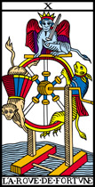
Dixième arcane majeur, la roue, en alchimie est l'hiéroglyphe du temps ; Fulcanelli décrit deux roues entrelacées, dans le Mystère des Cathédrales, lorsqu'il examine un bas-relief du grand portail de la cathédrale d'Amiens. Ici, la roue de fortune semble revêtir les traits de Protée [cf. Soufre] et contracte des rapports avec la planche II du Typus Mundi. Au sommet de la roue, on distingue la figure du sphinx [la lame est aussi appelée le Sphinx] ; à gauche de la roue s'aggripe un singe ; à droite c'est un chien jaune que l'on distingue. Divers commentateurs se sont penchés sur cette troublante association et ont conclu qu'il fallait voir dans ces deux animaux Hermanubis, le génie du bien et Typhon, le génie du mal. L'alchimiste, pour ce qui le concerne, peut voir dans Hermanubis une double déité formée d'Anubis et d'Hermès. Anubis est le conducteur d'âme, chargé de la pesée du coeur [par cabale, la teinture de la Pierre]. Des versions différentes de cette lame vont nous obliger à en compléter le symbolisme de la manière suivante : Hermanubis est ici représenté par la figure du singe : en effet, dans les méthodes de méditation bouddhiques, la maîtrise du coeur, sujet au vagabondage [cf. le Mat] est comparée à la maîtrise du singe [cf. aussi les Deux Logis alchimiques de Canseliet : l'Eléphant, le singe et les deux bahuts]. Nous avons vu - cf. Principes - que les correspondances animales pour le Mercure, personnification planétaire de l'inconstance, hermaphrodite et multicolore, passent par le renard ,le singe, le poisson volant et l'abeille qu'on retrouve assez souvent dans les textes alchimiques modernes. Quant au chien, dans lequel on peut voir aussi une tête de hyène, c'est à un monstre typhonien qu'il fait penser, armé, dans certaines versions, d'un trident. Les deux animaux évoquent donc une figure unique, qui est bien connue des alchimistes : le cynocéphale [singe à tête de chien] dont nous parlons dans l'Atalanta, XXXVII. Et cette chimère trouve sa correspondance moderne dans l'image d'un chien posé sur un casque, tel qu'on peut le voir à la fontaine du Vert Bois. A cela, ajoutons que la fonction hermétique du cynocéphale est de détruitre l'ennemi de la lumière, c'est-à-dire le premier Mercure ou Mercurius senex ; en effet, le premier Mercure n'est autre que ce dragon écailleux que l'archange Gabriel lacère de son épée [allégorie voilée par l'ouverture de la terre feuillée et par la maxime de Basile Valentin : « Dealbate latonam et rumpire Libros »]. Et nous trouvons ce premier Mercure chez ce monstre typhonien armé du trident de Neptune, chargé par Héra de poursuivre Léto afin qu'elle ne trouve nulle terre où accoucher des enfants de l'oeuvre : Diane d'abord, Apollon ensuite. Il y a plus ; le chien est inséparable de la Canicule, liée à l'étoile Sirius [cf. Atalanta fugiens]. Sous ce rapport, il dépend donc de l'époque de la pleine Lune qui désigne, par cabale, ce moment du 3ème oeuvre où la matière doit être portée au 4ème degré de feu [1200°C selon Fulcanelli ; c'estla température des fours à porcelaine] ; c'est assez dire le rapport qui prévaut entre le chien et le Cancer. Passons à Typhon : il contracte des rapports avec la constellation opposée, celle du Capricorne. Tout cela a été détaillé dans le chapitre XLIV de l'Atalante fugitive. Quant au sphinx, n'oublions pas qu'il est fils d'Echidna et de Typhon. Là encore, de nombreuses versions du sphinx existent ; nous renvoyons ici le lecteur, d'une part à la légende d'Oedipe, note 7 du commentaire de l'Atalanta, XVI, et d'autre part à la section Fontenay, sur le sphinx considéré comme papillon. On notera que le sphinx présenté sur l'arcane X adopte une attitude bien singulière ; car on le voit en majesté, coiffé d'une couronne et portant une épée. Il associe les symboles de la Force à ceux de la Justice, représentée ici par la balance constituée des deux animaux : singe et chien [ou hyène ?] qui - par cabale - font évoluer la matière du creuset soit vers son son côté soufré, soit vers son côté mercuriel. C'est assez dire que la roue de fortune est, en somme, un symbole solaire ou que, du moins, si la bonne fortune l'autorise, si l'Artiste a réuni ses matériaux suivant les poids, s'il a trouvé la drachme perdue de Basile Valentin, alors cette roue instable penchera du bon côté ; arcane complexe, la roue de fortune met bien en évidence le caractère instable qui caractérise l'opération du blanchiment du laiton ; aussi a-t-on pu écrire :
« Elle représente les alternances du sort, la chance ou la malchance, les fluctuations, l'ascension et les risques de chute. Elle correspond en astrologie à la dixième maison horosopique [...] »
L'auteur n'a malheureusement pas précisé que cette condition n'est réalisée que pour autant que Saturne soit présent dans cette maison X. Dans son commentaire de l'arcane, Carneiro cite l'église Saint-Merry à Paris, pour son Baphomet des Templiers, si intelligemment sculpté au sommet de l'entrée principale.
La Force
La onzième lame du Tarot va nous permettre de revenir sur l'une des Vertus que nous avons souvent visitée dans nos sections ; d'une part à la section des Gardes du Corps ; d'autre part, en reprenant l'examen des médaillons des Vices et des Vertus du grand portail de Notre-Dame de Paris. C'est la volontée dirigée qui est mise en évidence, c'est-à-dire l'Esprit liée à l'Âme pure. Quelle meilleure image ne pouvait-on trouver que cette Vierge, domptant ce Lion ? Ce qu'en termes hermétiques, il faut comprendre comme l'évolution du Lion vert [signes zodiacaux du Lion, Cancer et Gémeaux] en Lion rouge [signes zodiacaux de la Balance, Vierge et Verseau], cf. zodiaque alchimique. Si nous revoyons la Force du tombeau de François II, duc de Bretagne, la statue se présente, le bras gauche tenant une tour d'où elle sort un dragon, serré au col et sur le point d'expirer. Il s'agit du dragon écailleux dont nous venons de parler en examinant la lame X, c'est-à-dire du premier état du Mercure et non point, comme on pense trop souvent, quelque prima materia que l'on tirerait de son gîte minier. Non. C'est l'évolution du Mercure qui est symbolisée par cette lame XI. Du reste, cette évolution est reproduite dans les couleurs qu'elle arbore : le rouge recouvre le bleu. La fonction alchimique de la Vierge consiste à tirer partie du sang du Lion Vert, en sorte de le transformer en Lait de Vierge, qui sert à nourrir le Rebis en sorte de la faire évoluer, peu à peu, dans sa forme suprême d'escarboucle des Sages. Nous ne suivrons pas les hermétistes ésotériques qui posent en conjectures des rapports bien fragiles qu'échangerait la Force avec l'Impératrice ou la Papesse, sous prétexte que le n° de la lame XI, est formé de 3 + 8. Par contre, nous serons d'accord avec eux sur le fait que cette lame XI ne trouve pas de lame complémentaire et qu'elle constitue donc un passage obligé dans le magistère. Car tuer le Lion vert ruinerait à jamais les ambitions de notre Artiste : les Sages ont bien dit que l'oeuvre devait être faite par le seul Mercure : En To Pan. Nous devons rapprocher de cette lame l'emblème XLIX de l'Atalanta fugiens, et notamment le commentaire à propos du signe du Sagittaire, 2ème décan ou l'on peut établir un rapport net entre le combat d'Hercule avec le lion de Némée et notre Force.
Le Pendu
L'arcane XII présente des traits communs avec le Bateleur. La correspondance alchimique passe par saint Pierre qui, nous rappelle Fulcanelli dans le Mystère des Cathédrales, fut crucifié la tête en bas ; et plus que la pendaison elle-même, image macabre, c'est bien cette inversion qui constitue la singularité de cette lame. Fulcanelli, en évoquant saint Pierre, donnait une indication sur le Déluge : il signalait ainsi l'intérêt de renverser le contenu du creuset à une époque donnée de l'oeuvre. C'est une des énigmes désespérantes que nous a laissées le maître parisien. Parmi toutes les interprétations qui ont été proposées, la moins irrationnelle semble être celle-ci : le désir de se libérer d'un joug. Il faudrait donc, par analogie, s'imaginer que le seul désir du Mercure est de fuir et que l'Artiste, s'il veut progresser dans l'oeuvre, doit contenir ce désir incessant qui tient à la nature volatile de la matière, portée au 4ème degré de feu. Eh bien ! Nous pensons que cette interprétation est possible, et même, qu'elle est plausible. C'est le loup qu'il faut évoquer, car il permet de comprendre le trait de cabale que les rusés alchimistes ont ourdis quand ils ont fait croire aux souffleurs que c'était l'antimoine qui était le loup des métaux, parce qu'elle les dissolvait, en les réduisant en chaux, alors que l'or était libéré intact. Nous sommes convaincus de ce que le loup renvoie en fait au mors et au grappin, c'est-à-dire à l'artifice qui permet de maintenir au feu, longtemps, sous forme fluide, une substance qui aurait dû normalement se volatiliser rapidement. De ce joug, nous avons parlé déjà longuement dans plusieurs sections [Atalanta fugiens : XLI, XLII, XLVI, XLVII, XXII ; Fontenay ; etc.] ; au plan symbolique, il n'est pas indifférent de considérer que le Pendu peut être assimilé :
« [...] à un homme qui, absorbé par une passion, soumis corps et âme à la tyrannie d'une idée, n'a pas conscience de son esclavage. »
L'auteur de cette réflexion n'avait sans doute pas en vue que ces paroles s'appliqueraient très bien à la situation du Compost philosophal, Mixte formé du Mercure et du Rebis, où l'Âme [le soufre rouge] et le Corps [le principe Sel] sont soumis, effectivement, au joug de l'Esprit [le Mercure]. Il est un point que les spécialistes du tarot ont bien vus :
« Son inactivité apparente, sa position, indiquent une soumission absolue qui promet et assure un plus grand pouvoir occulte ou spirituel : la régénérecence chthonienne. »
On ne saurait mieux définir la réincrudation, c'est-à-dire l'infusion de l'Âme dans le Corps, ou si l'on préfère, l'incarnation de l'Âme. La lame XII n'a pas livré tous ses secrets : on peut voir, disent les hermétistes, dans les douze marques rouges des branches coupées [les deux arbres ; leur cassure rappelle l'un des caissons du château de Dampierre-sur-Boutonne qui vient,hélas ! de brûler] les signes du zodiaque ; d'autres ont vu un parallèle à établir entre le Pendu et Antée le géant, qui reprenait force chaque fois qu'il touchait terre [en effet, la chevelure du Pendu semble s'enfoncer en dedans de la lame ; il y a là une indication]. Antée est ce géant, fils de Gaïa et de Poséidon, qui vivait dans le désert de Lybie. Il s'y nourrissait de lions. Héraklès le rencontra, en quête des pommes d'or du Jardin des Hespérides et, à trois reprises, le terrassa. Mais, à chaque fois que le géant touchait terre, Gaïa lui rendait des forces nouvelles. On notera la triple réitération, hasard curieux qui donne le nombre des sublimations à effectuer par l'alchimiste, hasard fortuit évidemment. Le Pendu peut nous livrer une autre explication mais pour cela, il est nécessaire que le lecteur visite la section consacrée au Donum Dei et qu'il examine avec attention les différentes versions de la planche I. Il verra que chaque arbre représente le Roi et la Reine [6 signes zodiacaux leur étant réservés] ; que la partie centrale où figure le vase de nature n'est autre que notre Pendu, qui possède toutes les couleurs de l'oeuvre et dont la nature mercurielle [c] est signée par le croisement des jambes. Il y aurait d'autres choses à dire, sur la corde, notamment, dont les extrémités évoquent des ailes, ce qui en ferait alors l'équivalent strict de la tige casquée et ailée du caducée d'Hermès.
La Mort
L'arcane XIII parle d'elle-même : c'est l'image de la putréfaction. Omniprésente dans les textes et dans les gravures alchimiques, on en trouve les meilleurs exemples chez Basile Valentin, dans la Clef IV des Douze Clefs de Philosophie et dans l'emblème IX de la Philosophia Reformata de Mylius. Mais on pourrait citer bien d'autres exemples [le Rosaire des Philosophes montre une superbe planche de tombeau ouvert ; de même l'emblème L, final, de l'Atalanta fugiens, etc.] . C'est donc la phase de dissolution de la matière, correspondant à l'oeuvre au noir, d'où Marguerite Yourcenar a tiré le titre de son célèbre roman. Cette dissolution survient, nous assurent les alchimistes, au tout début du travail ; encore faut-il savoir de quelle dissolution ils parlent, puisque Le Breton, dans ses Clefs de la Philosophie Spagyrique [Paris, Jombert, 1772] enseigne qu'il n'y a pas moins de quatre putréfactions dans l'oeuvre. En voici deux dont nous avons la quasi-certitude qu'elles correspondent effectivement à une dissolution, voire à une séparation : la préparation du Mercure, au 2ème oeuvre, exige la présence d'un sel de potassium que l'on extrait d'une réaction du salpêtre vulgaire sur de l'acide vitriolique : le Caput tombe au fond de la cornue, sous forme plus ou moins dépurée d'Arcanum duplicatum ou de foie de soufre et dans le récipient, on voit apparaître des vapeurs d'aqua sicca [cf. section du tartre vitriolé]. Cette séparation, notez-le bien, n'est pas celle qui est d'habitude retenue chez les hermétistes ; la véritable dissolution est celle qui s'opère au début du 3ème oeuvre, lorsque les substances mises en présence vont subir la Passion. Nous en avons parlé lors de l'évocation d'Offérus, l'Hercule chrétien. Voilà pour la partie strictement technique. L'hermétiste voit dans la lame XIII - autrement appelée le Faucheur - l'un des grands mystères, en ce sens, et là nous rejoignons la cabale bien pensée, que cette lame prend un caractère céleste plus développé que d'autres. Remarquez que le squelette a une couleur chair, manière de désigner le but de l'oeuvre, qui est la réincrudation des Soufres. De même, les couleurs sont là pour nous rappeler le mode d'emploi de l'arcane : la faux [faulx] a la couleur du sang, résultat inévitable de l'ouverture du métal qui laisse échapper son âme, selon la puissance calorique que l'on impose au creuset. Sous les pieds de la Mort, on voit les deux parties du Rebis, pour l'instant évidemment séparées : sous le pied, tête de femme ; à côté de la pointe de la lame, tête d'homme. C'est déjà là assigner les futurs domiciles des parties du prochain Rebis : la femme se placera en terre et formera le Corps de la Pierre ; l'homme conservera une ponticité particulière, restant infusé dans le Mercure avant que sonne l'heure de la réincrudation, qui s'opère dans le signe du Sagittaire, après l'accalmie de la période du Verseau. Notez encore que la nature royale du Rebis est affirmée par la couronne que porte le BasileuV. La figure de la femme affecte des traits que la mort n'ont point entamés, tant il est vrai que l'amour subsiste par-delà le tombeau. Cyliani, dans son Hermès Dévoilé, insiste beaucoup sur tout cela. Malheureusement, les étudiants ont confondu, dans les traités, ceux qui opéraient par la voie humide et ceux qui opéraient par la voie sèche. Or, tout indique, nous l'avons maintes fois répété, que l'oeuvre, selon nos conjectures, ne puisse se faire que par la voie sèche : c'est là une querelle de clochers entre Artistes qui estiment que plusieurs voies sont possibles...Il n'y qu'une chose qui soit assurée : la résurrection existe bel et bien dans le petit monde des alchimistes. Papus y voit :
« [le] symbole du principe transformateur, équivalent aux semences métalliques préparées et mises en contact (leur cercueil, leur action astrale d'où sortira l'évolution nouvelle). »
Aussi bien faut-il voir dans cette lame,non pas le destin inéluctable qui nous attend tous, mais un renouvellement,une résurrection, comme en témoignent le processus, si particulier à l'alchimie, de la réincrudation.
La Tempérance
Ce XIVème arcane nous est bien familier. Combien de fois n'avons-nous pas nommé la Tempérance ? Ce sujet a été traité à de multiples reprises, dans la section des Gardes du Corps et dans l'examen des Vices et des Vertus du grand portail de Notre-Dame de Paris. Nous ajouterons seulement que cette lame se trouve en parfait accord avec les observations que nous avons faites, touchant au signe du Verseau [cf. Atalanta, XL et zodiaque alchimique]. Cette mesure, c'est à la bonne calibration du Mercure qu'il faut que l'Artiste l'applique. Qu'il en fasse une fontaine d'eau minérale onctueuse, en forme d'onde vive où Typhus puisse manier à son aise le bâteau Argos, porteur de la pierre cubique [cf. fontaine du Vert-Bois, supra]. En effet, le mariage des contraires, l'actif et le passif ou si l'on préfère, le patient et l'agent, l'Aimant et l'Acier, implique que l'ordre soit établi et que l'harmonie domine [sur la nature du sel harmoniac, cf. Introduction à la Chimie des Anciens, Berthelot et la section des blasons alchimiques]. La Tempérance, en alchimie, exprime l'action du loup [lupus : frein, grappin] nécessaire à la coagulation progressive de l'eau mercurielle. Toutefois, le bleu y domine, signe évident que la siccité ne sera atteinte qu'après un séjour de la matière long dans l'eau étoilée et minérale. en principe, la Vertu devrait porter de la main gauche un pot bleu, symbolisant le principe mercuriel ; verser un liquide blanc qui est le Lait de Vierge dans le pot rouge qui représente le principe solaire ; c'est à une forme de distillation répétée que nous avons affaire, nommée cohobation par les alchimistes et dépeinte par Fulcanelli sur l'un des bas-reliefs de Notre-Dame qui vise d'ailleurs l'un des Vices : l'orgueil. Quoi qu'il en soit, cette lame est interprétée comme étant l'hiéroglyphe de l'alchimie :
« Le sujet, mort et putréfié, comme nous l'a rappelé le treizième arcane, est soumis à l'ablution, elle le fait passer du noir au gris et enfin au blanc, qui marque la réussite de la première partie du Grand Oeuvre. » [le Tarot des Imagiers du Moyen Âge, Oswald Wirth, Paris, 1966]
Qu'on aimerait que tout cela fut bien vrai, bien réel et que rien ne se cache sous des dehors si séduisants ! Hélas, Wirth ne dit rien en écrivant cela ; essayons d'avancer : la putréfaction a consisté en la dissolution de la matière, en son démembrement, en sa transformation en poussier de charbon qui l'assimile à la cendre métallique et minérale. Le premier moteur ayant fait tourné la roue, la matière sort du régime de Saturne pour entrer dans celui de Jupiter que Pernety signale être gris ! A qui fera-t-on croire pareilles inepties ? Tout ce que les alchimistes ont écrit sur les couleurs ne peut se comprendre - ainsi que l'a bien fait remarquer Fulcanelli, citant le Ciel Chymique de Tollius - que par l'entendement. Car tout le processus se déroule par la voie sèche et au creuset brasqué : nulle couleur n'est donc visible et la seule perception que l'Artiste peut avoir est celle de ce creuset qui, au vrai, est une véritable tombe. Les couleurs gardent donc leur mystère et nous gageons que ce mystère ne sera jamais découvert, parce que, envisagé rationnellement, il n'y a rien à découvrir ; sauf à l'entendre par le coeur et le sentiment : l'Artiste découvrira alors les splendeurs des textes et des gravures enluminées ; le cheminement spirituel le conduira dans un ailleurs qui, répétons-le, suit à très peu près les émotions que peut susciter la musique. Pour l'heure, revenons au XIVème arcane. On a dit que :
« C'est l'entrée de l'esprit dans la matière, le symbole de toutes les transfusions spirituelles. »
Cette interprétation nous paraît à la fois inexacte et incomplète : - - inexacte, parce que la matière est entrée dans l'esprit depuis déjà bien longtemps, du temps où s'est constitué le Lion vert, qui a muri en Lion rouge ; on peut estimer que cette maturation s'est établie dans les signes de la Balance et de la Vierge ; le signe des Gémeaux est celui de la maturation ;
- incomplète, parce que la Pierre ne provient pas de l'entrée de l'esprit dans la matière, mais bien de l'infusion de l'Âme dans le Corps par la médiation de l'Esprit, ce qui est tout à fait différent du sens de la dernière citation.
De fait, la Tempérance, envisagée d'un point de vue alchimique, permet l'instauration d'un régime calme dominé par cette Eau permanente dont parlent les vieux alchimistes, permettant la maturation de leur Rebis avant l'accrétion du Soufre au Corps, médiée par la coagulation très progressive de cette eau mercurielle, à la façon d'une solution sursaturée qui cristallise peu à peu. D'une certaine façon, on peut dire que l'excès d'Âme et de Corps contribue à faire périr l'Esprit, qui se sublime. Et ce n'est pas tant une réincarnation qu'une simple incarnation qui est ici en passe d'être réalisée ; aussi considérons-nous également comme fautive cette réflexion :« [...] Il suffit de rappeler qu'en grec classique l'acte de verser d'un vase dans un autre est pris comme le synonyme de la métempsychose. » [Gérard van Rijnberk, le Tarot (Histoire, Iconographie, Esotérisme), Lyon, 1947]
Vraie dans un contexte religieux, mais fautive dans le contexte d'une interprétation hermétique centrée sur le processus alchimique. Enfin, le lecteur aura remarqué que notre Tempérance est ailée : signe d'AIR selon les astrologues, signe d'EAU dans le système réformé des Eléments que nous avons proposé sur ce site, il reste que ces ailes expriment la nécessaire circulation des fluides qui intervient comme mouvements de convection dans la masse pâteuse du Compost. Papus y voit :
« [...] l'Involution proprement dite ou descente de la Force volatile dans la Matière, feu dans l'athanor ; donc correspondra à la Matière à la couleur verte. »
Carneiro cite dans son commentaire le chapitre VII du Traité du Sel, attribué à Michel Sendivogius [mais compilé comme nous l'avons dit, à partir de notes d'Alexandre Sethon].
Le Diable
En alchimie, parler du diable, c'est parler du dragon Ladon ou du serpent Python, c'est-à-dire du Mercure en son premier état, celui dont Lulle, dans sa Clavicule, dit qu'il est commun, pour dire qu'il est vulgaire sans que pour autant il s'agisse du vif-argent. Il suffira de dire qu'il brûle dans un monde souterrain et que les initiales V.I.T.R.I.O.L. le définissent absolument. Mais, à la différence du feu de l'Enfer, les alchimistes veulent parler du feu de Ploutos [cf. humide radical métallique], destiné à la germination et non à la corruption. Considéré comme ange déchu aux ailes brisées, il manifeste par définition la chute de l'ange, équivalent à l'incarnation de l'Âme dans la chair. Aussi bien la figure du Diable est-elle paradoxale, vue dans l'optique de l'alchimiste. Au Japon, les esprits diaboliques sont désignés sous la forme de lutins des montagnes, qui sont presque superposables aux nains et aux gnomes qui, dans les anciens temps, passaient pour être les générateurs des métaux et des minéraux [cf. le Bergbüchlein]. Ainsi, apparaît-il de la plus haute importance pour l'Artiste de tâcher de s'approprier ou de s'attirer les bonnes grâces des esprits infernaux, bien qu'ils aient très mauvaise réputation pour le vulgaire. Mais après tout, le feu qui brûle n'est-il pas aussi notre meilleur ami, à l'instar du chien ?
« le Diable [...] exprime la combinaison des forces et des quatre éléments de la nature (eau, terre, air, feu) au milieu de laquelle se déroule l'existence de l'homme [...] » [le Tarot des Imagiers du Moyen Âge, Oswald Wirth, Paris, 1966]
Les alchimistes tomberont d'accord là-dessus puisqu'ils professent que l'homme doit, en tout, imiter la Nature [Bernard Le Trévisan a particulièrement développé ce thème dans son Verbum Dimissum et dans sa Philosophie Naturelle des Métaux]. Le Diable conserve dans son aspect un caractère ambivalent qui le rapproche des structures à l'oeuvre dans le processus alchimique, et notamment son hermaphrodisme évident. A ses côtés, deux diablotins qui représentent les deux natures métallique et minérale. Il semblerait que cet arcane XV soit comme le « négatif » de l'arcane XIII [la Mort] et que l'on puisse ainsi pénétrer jusqu'au monde occulte où se trouvent placés les éléments durant la phase de putréfaction. Voilà qui permettrait de rapprocher les figures gnomides de nos natures, telles que nous les observons dans la section Fontenay - cf. la fontaine des quatre Tias - et l'arcane XV représentant le Diable. Enfin, comment ne pas évoquer Lucifer quand on parle du Diable ? L'étudiant sait que Lucifer - c'est-à-dire le porteur de lumière - c'est la planète Vénus à l'aurore, mais c'est aussi Offerus [le christophore] avant qu'il ne soit devenu l'Hercule chrétien, puisqu'il appartient d'abord à la race des Géants, congénère de celle des Titans. Le Diable porte des ailes de chauve- souris ; or, nous avons parlé de l'un des décans du zodiaque, formé d'une sorte de chimère où l'on retrouve ces ailes : le 3ème décan du Sagittaire [Atalanta, XLIX] qui prélude immédiatement au Scorpion dans l'ordre des opérations. Carneiro rapproche la lame XV de la planche IX de la Philosophia Reformata de Mylius ; il n'a pas tort [nous rappelons que cette planche IX a été rapprochée de l'arcane XIII] car deux anges viennent compléter la scène macabre où le squelette est juché sur une sorte de soleil noir rayonnant. Il convient ici de rappeler les premiers - et sublimes - vers du sonnet El Desdichado ou le soleil des sages, de Gérard de Nerval :
Je suis le ténébreux, — le veuf, — l'inconsolé,
Le prince d'Aquitaine à la tour abolie :
Ma seule étoile est morte, — et mon luth constellé
Porte le Soleil noir de la MélancolieAussi bien avons-nous opéré le rapprochement entre la lame XIII et la lame XV, l'une étant complémentaire de l'autre ou son négatif, pour ainsi dire. Il vaut de donner un extrait de l'interprétation de Georges Le Breton sur ces vers, laquelle est en étroite relation avec la lame XIII, XV et la suivante, la Maison - Dieu.
VERS N° 1sur Typhon, voyez l'Atalanta fugiens, emblème XLIV.Je suis le ténébreux, — le veuf, — l'inconsolé Carte XV, dite le Diable
Court de Gebelin, décrit la figure que porte la quinzième carte du tarot
« N° XV Typhon. Le n° XV représente un célèbre personnage Egyptien, Typhon, frère d'Osiris et d Isis, le mauvais Principe, le grand Démon d'Enfer ; il a des ailes de chauve-souris, des pieds et des mains d'Harpie, à la tête de vilaines cornes de cerf on l'a fait aussi laid, aussi diable qu'on a pu » (Monde primitif, Tome VIII, première partie Du Jeu des Tarots, p 376)
Le « ténébreux » et « le prince », du vers suivant, désignent le Prince des Ténèbres le « Grand Démon d'Enfer »
La Maison Dieu
Admirable arcane XVI ! Comment ne pas s'extasier d'abord au titre de la lame : « Maison dieu » qui pourrait être celui d'un poème des Surréalistes ou même de Mallarmé, sans parler de Gérard de Nerval. Et puis comment ne pas s'extasier ensuite au vu de cette lame qu'on pourrait croire peinte par un Dali ? Plusieurs structures peuvent être analysées dans cette image :
-1) la tour. Elle représente l'athanor des Sages et peut être comparée à celle où est enfermée Danaé avant d'être fécondée par Zeus, dissimulé en pluie d'or ; on trouve l'image de la tour dans l'iconographie alchimique dans l'un des caissons, par exemple, de la galerie alchimique du château de Dampierre-sur-Boutonne, récemment restaurée après un incendie survenu en 2002. Ou encore dans la planche XIV du Mutus Liber. Cette tour représente donc l'une de celles qui ornent le Palais fermé du Roi de Philalèthe.
- 2) les deux personnages : ils représentent les matières qui tombent, c'est-à-dire qui dégoutent [dégoûtent] par le biais d'un trait de cabale entre le verbe cado et cassito [tomber, dégouter] ; en bref, il s'agit d'une indication sur des matières rendues liquides et fluides par l'intermédiaire de la chaleur, c'est-à-dire du feu secret des Sages. On distingue à droite le Soufre [couleur rouge] et à gauche le Corps [couleur bleu].
-3) le faîte de la tour : c'est une couronne qui est soulevée par la foudre. On sait que les alchimistes désignent en principe trois couronnes de perfection. Ces couronnes apparaissent sur le magnifique emblème de Limojon de saint Didier. Ce n'est donc certes pas la 3ème couronne de perfection que nous apercevons sur la lame XVI. En effet, son basculement montre que l'union radicale des principes [Corps et Âme] n'est pas réalisée de façon radicale ; cette scène singulière semble donc intervenir à une époque de l'oeuvre intermédiaire entre le gris et le blanc, c'est-à-dire entre le régime de Jupiter et celui de la Lune.
-4) les trente-sept [37] sphéroïdes : il est vraiment peu envisageable que l'artiste qui a réalisé cette lame n'ait pas été au fait des secrets des vieux Adeptes : en effet, le nombre 37 correspond au nombre d'années symboliques qu'a atteint l'alchimiste lorsqu'il parvient à préparer sa Pierre philosophale [d'autres disent qu'ils ont réussi le magistère à 33 ans, mais cela procède du même esprit - si l'on peut dire] ; 13 de ces sphéroïdes sont rouges, 13 autres sont blancs et les 11 derniers sont bleus. Ces sphéroïdes constellent le ciel autour du panache de la foudre ; les gravures alchimiques permettent de mieux situer où peut bien intervenir ce processus : il nous faut ouvrir pour cela le Donum Dei : considérez par exemple la planche IX en noir et blanc. Elle correspond à la Maison noire, Soufre des philosophes, avec la légende : Ici tout le dragon est nettoyé de sa noirceur et est fait blanc comme lait. Voyez maintenant la même planche en couleurs - planche IX bis -. Elle fait voir un matras fermé, constellé de petites taches de couleurs différentes qui rappellent assez bien les sphéroïdes que l'on observe sur la lame XVI. Au vrai, l'époque de la putréfaction est passée et nous sommes bien à une période intermédiaire, instable, ce que reflète bien la couronne déséquilibrée. Sur d'autres planches appartenant à des versions différentes, le symbolisme reste le même et semble rattacher cette époque de l'oeuvre à la fermentation de la matière, juste avant que ne survienne la réincrudation.
-5) la foudre : Or, en quoi, au fait, consiste cette réincrudation ? Fulcanelli - nous l'avons plusieurs fois signalé - a écrit dans le Mystère des Cathédrales, qu'il fallait que l'Artiste trouve un rayon igné et qu'il l'incorpore au sens propre du terme dans un écrin approprié. C'est ce rayon igné qui est désigné par cette foudre, qui est celle de Jupiter, dont c'est précisément le régime planétaire, qui est évoqué. Mais, on n'a jamais vu de foudre capable de « décapsuler » le faîte d'une tour. Il semble que les commentateurs de cette lame n'aient point émis l'hypothèse selon laquelle ce n'est pas la foudre qui jaillit du ciel pour s'abbatre sur l'athanor, mais que, bien plutôt, elle en sort et qu'elle fait ainsi jaillir le sommet de la tour, comme lors d'une éruption volcanique de type explosif [cf. Krakatoa, mont saint Hélène, etc.]. Et ces sphéroïdes sont les débris du Soufre, encore non réincrudé comme l'attestent les trois couleurs de ces taches qui constellent le ciel.Quelle interprétation faut-il donner de cet ensemble magistral ? Que l'artiste à qui nous devons cette lame prévient charitablement l'étudiant contre le danger qu'il y aurait à se précipiter et à trop pousser le feu, car à la vérité, ces sphéroïdes sont les fleurs brûlées du souffleur plus avide d'or que de connaissance ; il n'aura pas su contenir la vigueur de son Mercure et laisse se sublimer en un éclair et son Esprit et son Âme, faute d'avoir su comprendre qu'entre la Vierge et le Sagittaire, il fallait passer par le Verseau, c'est-à-dire par l'arcane XIV. C'est donc à bon droit que l'on peut reprendre le commentaire suivant :
« A la première lecture, cette lame représente un châtiment divin - ouranien - frappant un édifice qui n'est autre que la construction de l'homme lui-même [...] »
Ouranien, nous en sommes bien d'accord mais ce que l'auteur n'a pas vu, c'est que ce châtiment venait de l'intérieur de la tour, et non de l'extérieur et que la tour, pour l'alchimiste, représente son univers et son petit monde ; c'est le ciel chymique de Jacques Toll et l'Air des Sages de Philalèthe. Ce n'est pas tout. On peut encore voir dans cette montée de la foudre [la foudre, contrairement à une idée reçue, ne « descend » pas] une scène mythologique de l'emblème XXIII de l'Atalanta fugiens : il s'agit de l'irruption de Pallas - Athéna hors du cerveau [de l'Esprit] de Zeus, suite au coup de hache [le 1er agent] que lui assène Vulcain [le feu secret]. Eh bien ! Nous sommes tentés aussi de voir en cette foudre l'incarnation, pour ainsi dire d'Athéna. Or, nous avons vu ailleurs qu'Athéna était l'hiéroglyphe du Soufre [cf. Atalanta, XLIV ; XLVII ; XXVII ; XLIII]. Si bien qu'il est facile de voir qu'en perdant l'Esprit, notre Artiste perd aussi l'Âme et qu'en somme, il perd la raison. C'est une résurgence du vieux dragon qui, à l'instar du phénix, peut lui aussi renaître de ses cendres, si l'Artiste ne modère pas suffisamment le feu. Contrairement à ce qu'écrivent certains commentateurs, la Maison Dieu renvoie forcément au mythe de Sisyphe, non pas tant en symbolisant ce « coup de semonce » que constitue cet arrêt du destin, cet ébranlement formidable, capable de décapiter une tour de forteresse, mais bien au contraire cette astreinte à laquelle doit se plier l'Artiste de se complaire à un travail de fileuse, ainsi que le disent tous les textes importants. Là encore, la devise « Solve et Coagula » doit s'appliquer dans toute son exigence et toute sa contrainte. Mais nous n'avons pas encore épuisé le symbolisme de la Maison-Dieu : sur les anciennes cartes de Noblet et de Dodal, on aperçoit nettement le bord, en haut à droite, du disque solaire qui darde ses rayons. Comment ne pas rapprocher cette vision [les rayons solaires sur l'athanor] de l'un des bas-reliefs de Notre-Dame de Paris : c'est celui qui est analysé par Fulcanelli dans la planche V du Mystère des Cathédrales. La coïncidence est d'autant plus remarquable que ce bas-relief ne fait partie du groupe des Vices et des Vertus ; il a d'ailleurs fait l'objet d'une analyse spéciale [quatre bas-reliefs du grand portail de Notre-Dame de Paris] que nous avons retranscrite en prélude au texte d'Esprit Gobineau de Montluisant. Or, la scène catastrophique exposée sur la lame de la Maison-Dieu est l'illustration de ce que l'Artiste n'a su, à l'instar du chevalier du bas-relief de Paris, se prémunir assez contre les dangers du feu dévastateur dégagé par le Mercure, lorsqu'il n'a pas été suffisamment apprêté. M. Carneiro a bien vu cette ressemblance :
« Semblablement au bas-relief sculpté au Portail du Jugement de l'Église Notre-Dame de Paris, La Maison Dieu représente les dangers de l'exposition de notre Oeuvre aux rayons directs du Soleil ou aux éclairs. Toutefois, au contraire du bas-relief, il n'y a pas ici de chevalier- alchimiste pour protéger l'Athanor contre les influences extérieures, et de cette absence découle le désastre représenté par l'Arcane. Ce bas-relief est réproduit dans la Planche V du Mystère des Cathédrales, premier ouvrage publié de l'Adepte Fulcanelli. »
[ http://www.ojardimhermetico.hpg.com.br/ ]Nous ajouterons que nous avons été conduit à émettre ce parallélisme indépendamment de M. Carneiro puisque ce n'est qu'après avoir rédigé l'analyse de chaque lame que nous avons lu et étudié les commentaires de nos collègues, vivants ou disparus. Nous allons à présent poursuivre le commentaire vu supra au sujet des premiers vers du sonnet de Gérard de Nerval :
VERS N° 2Par Plutus, il est pratiquement sûr que Court de Gébelin entendait Pluton ; pour des raisons de logique interne à la cabale appliquée à l'alchimie, il faut y voir - selon nous - Ploutos, ainsi que nous l'avons signalé dans la section de l'humide radical métallique. Ce n'est donc point un feu destructeur que l'Artiste recherche, mais au contraire un feu comburant qui permettra au Rebis de croître, en prélude à la renaissance du phénix. Notez encore que M. Carneiro avait deviné que le feu peut non pas s'introduire dans la Tour de la Maison - Dieu, mais qu'il peut en sortir :Le Prince d Aquitaine a la tour abolie : Carte XVI, dite la Tour foudroyée
Court de Gebehn, décrit la carte suivante
« N° XVI Maison-Dieu, ou Château de Plutus. Ce tableau represente une Tour qu on appelle Maison-Dieu, c'est-à-dire, la Maison par excellence , c est une Tour remplie d'or , c'est le château de Plutus ; il tombe en ruine, et ses Adorateurs tombent écrasés sous ses débris » (Id p 376)
« La Tour abolie » est cette Tour qui tombe en ruine.
« Comme on a vu, La Maison Dieu représente aussi le danger réel d'explosion dans le cas d'un feu extérieur trop fort, et symbolise en outre la rupture canonique de l'Oeuf à la fin de la Voie Sèche. » [idem]
Dans ce dernier cas, le mot explosion signifie forcément que le feu étincelant que l'on aperçoit au sommet de la tour ne peut qu'en sortir, et non y entrer. Papus pense ceci de la lame XVI :
« ici, c'est le moment définitif du travail hermétique ; la destruction divine agit pour ramener à l'évolution ; la chute d'Adam-Eve est aussi celle de la Matière qui devra produire la Pierre philosophale. Nous rattacherons donc cette lame au commencement de la Couleur blanche. »
Après tant de vicissitudes [le Diable, la Maison dieu], voici venir une arcane merveilleuse : la lame XVII. Nous avons dit tellement de choses sur l'étoile et ses rapports qu'elle entretient avec l'alchimie qu'il paraît difficile d'en ajouter de nouvelles... C'est donc surtout de la lame que nous allons parler. On voit une jeune femme, en laquelle Court de Gébelin voit Isis, en train de verser le contenu de deux vases : le liquide qui sort de l'un est bleu, et dans l'autre est brun. De part et d'autre de ce visage féminin, un arbre ; dans le ciel, une étoile multicolore, très brillante et trois étoiles plus petites, là encore symétriques. Au total sept étoiles. En bas, un fleuve qui semble d'écouler en ondes tranquilles. L'impression de l'ensemble est empreinte de sérénité ; tout cela évoque l'eau minérale, étoilée et métallique d'une part ; et la rosée de mai d'autre part. Cette lame suit évidemment la lame XIV [laTempérance] et lui est congénère. Les sept étoiles représentent les fruits de l'Arbre solaire, c'est-à-dire les Soufres sublimés selon ce qu'on en a dit dans la section de l'humide radical métallique. On remarque aussi un oiseau noir qui s'est posé sur l'arbre qui est à la gauche [pour l'observateur] de la jeune femme. Cet oiseau n'est pas le corbeau. A ce stade de l'oeuvre, la putréfaction est passée depuis bien longtemps ; cet oiseau, c'est le vautour, dédié à Apollon dont on a parlé en examinant l'un des décans du Capricorne [cf. atalanta, XLIII]. Nous ne reprendrons donc pas ce que nous avons dit de cet oiseau qui a, il faut bien le dire, mauvaise réputation, mais usurpée pour l'alchimiste pour lequel il est de bonne augure. Quoi qu'il en soit, la grande étoile a deux couleurs, l'une jaune, l'autre rouge ; on y a vu la nature humaine et la nature divine. Nous y voyons plutôt la nature soufrée [l'Âme] et la nature aérienne [l'Esprit], ces deux natures étant entrelacées à cette époque de l'oeuvre [la réincrudation est prochaine, cf. Atalanta, XLIII]. Notez encore que ces étoiles sont à 7 rayons [celles situées en haut de la lame] tandis que les autres sont à 8 rayons. Les étoiles à 7 rayons ou à 7 branches constituent en général le symbole du Soufre ; l'étoile radiante à 8 branches possède la valeur de médiation entre le carré et le cercle, c'est-à-dire entre la Terre et le ciel ; c'est le signe du dissolvant exprimant le fixe et le volatil, la double nature du Lion vert, tantôt étoile, tantôt fleur. Il y a ici 5 étoiles à 8 branches ; ce nombre 5 est l'expression de la quintessence, définie en alchimie par la chaux dissoute à l'ouverture du métal [ou à sa « mort » symbolique, ce qui veut dire la même chose]. Cette lame illustre bien toutes ces influences cosmiques qui jalonnent les vieux textes alchimiques, influences d'ailleurs tout à fait allusives, puisque c'est par cabale que les Adeptes veulent en parler. E. Canseliet, dans son Alchimie expliquée sur ses Textes classiques, a été très clair là-dessus. Voici encore un commentaire sur l'arcane :
« Cet arcane [...] symbolise la création, non point achevée et parfaite, mais en voie de se réaliser ; ele indique un mouvement du monde ou de soi-même [...] Elle symbolise l'inspiration qui vient matérialiser [...] les désirs jusqu'alors inexprimables de l'artiste. »
Il y aurait beaucoup à dire sur le parallèle à établir ici entre le magistère considéré en lui-même et l'influence qu'il exerce sur l'esprit de l'alchimiste. C-G. Jung, dans son Psychologie et Alchimie [Buchet-Chastel, 1970], nous a laissé mille pages là-dessus avec de très nombreuses illustrations et une bibliographie complète. Ce livre doit être lu par tous les Amoureux de science. On s'en est fait l'écho très souvent dans ces pages. A noter que les anciennes cartes de Noblet et Dodal sont fautives, car l'on n'y rencontre pas le nombre de rayons indiqués pour les étoiles. Seule la version de Nicolas Conver [Marseille, 1760] est conforme à la cabale hermétique. Voyez d'ailleurs cette partie de l'atelier de M. J.C. Flornoy où l'on distingue assez bien les étoiles, disposées en rayons conformes à la lame dont nous parlons.
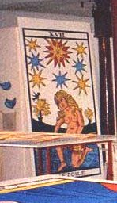
atelier de Jean-claude Flornoy, aperçu de l'Etoile, version Nicolas Conver, 1760
(avec l'autorisation de J.C. Flornoy : http://letarot.com)
Pour terminer sur cette lame, la suite de l'interprétation du poème de Gérard de Nerval par Georges Le Breton :
VERS N 3Mais ce n'est pas un papillon qui est posé sur l'arbre de gauche [bien que le papillon trouve son domicile dans le bestiaire hermétique, cf. Fontenay]. Il nous faut préciser ici un trait de cabale, que nous avons relevé ailleurs [Atalanta fugiens, XLIV ; XXVII] mais qui nous permet de donner tout son sens au mot antimoine, véritable serpent de mer de l'alchimie : l'expression seule étoile se dit en grec « anqoV monoV » dont la proximité phonétique avec le métalloïde est assez claire pour que l'on puisse passer outre. C'est cet antimoine saturnin dont parle Artephius et que les alchimistes appellent le Plomb des Sages ; c'est lui qui forme la grande étoile radiée ; il donne sens au geste qu'accomplit la jeune femme lorsqu'elle verse le contenu de ces deux vases dans un fleuve qui est, sans doute, l'Achéron :Ma seule étoile est morte Carte XVIII dite l'Etoile
Court de Gébelin note :
« N° XVIII La Canicule. Ici, nous avons sous les yeux un tableau non moins allégorique et absolument Egyptien , il est intitulé l'Etoile. On y voit, en effet, une Etoile brillante, autour de laquelle sont sept autres plus petites. Le bas du tableau est occupé par une femme penchée sur un genou, qui tient deux vases renversés, d'où coulent deux Fleuves. A côté de cette femme est un papillon sur une fleur. C'est l'Egyptianisme tout pur. Cette Etoile, par excellence, est la canicule ou Sirius : Etoile qui se lève lorsque le Soleil sort du signe du Cancer [.. ] Les sept Etoiles qui l'environnent et qui semblent lui faire leur cour, sont les Planètes : elle est, en quelque sorte, leur Reine, puisqu'elle fixe dans cet instant le commencement de l'année, elles semblent venir recevoir ses ordres pour régler leurs cours sur elle » (Id 374-375)
Nerval précise : « Ma seule étoile est morte » en marquant ce caractère d'être unique, afin de distinguer « cette Etoile par excellence », cette Reine, des « sept autres plus petites » qui l'entourent.
« les Anciens l'ont tenu pour un fleuve des Enfers que les âmes des morts, sur la barque de Charon, devaient franchir aavnt de pénétrer dans leur séjour définitif. »
Ce qui permet d'établir la transition et la relation entre la lame XVII et les lames XV [Diable] et XVI [Maison-Dieu]. Cette relation a été vue par M. Carneiro qui écrit justement :
« Dame Tempérance nue et sans ailes, qui verse le contenu de ses jarres dans une ravine Bleu-claire comme le corps du Diable, notre Arcane L'Étoile est un des plus peuplés de détails symboliques. »
double relation d'ailleurs, entre d'une part un aspect céleste dont l'évidence éclate littéralement et d'autre part en un aspect plutonien qui nous a fait évoquer le fleuve des Enfers. Charon prend, de ce fait et en tant que passeur, la dimension d'Offerus. Enfin, rien n'empèche de voir Astrée - la jeune femme - qui, avant de prendre sa place parmi les étoiles
[juste et vertueuse, cette fille de Zeus et de Thémis - la Justice - vivait au milieu des mortels dans les moments heureux de l'âge d'or ; c'était assurément avant que le règne de Saturne se soit changé en siècle d'or, c'est-à-dire avant la renaissance du phénix. Lorsque l'âme humaine se fut pervertie, c'est-à-dire lorsqu'elle se fut tout simplement incarnée, Astrée se retire avec sa soeur la Pudeur, du séjour des vivants et, sous le nom de Virgo, se fixa dans les cieux parmi les astres].
Cette relation, toute de cabale, entre la Pudeur et les Enfers nous semble permise par l'homophonie entre aidwV [la Pudeur] et aidwneuV [Hadès, les Enfers].
Arcane XVIII du Tarot, la Lune s'appelle encore le Crépuscule. Son sens est donc dual ; nous avons montré dans d'autres sections - cf. prima materia et surtout un dessin d'un traité de Zosime - que la Lune au crépuscule vespéral est l'hiéroglyphe du Mercure [Lune dans son premir quartier], alors que la Lune prise à l'Aurore représentait l'argent alchimique, c'est-à-dire le Sel de Paracelse [autrement appelé Soufre blanc par Fulcanelli ou Arsenic par Geber]. On a parlé à propos de cette lame de l'enlisement de l'esprit dans la matière : ce n'est pas faux. Considérée comme signe mercuriel, la Cancer, que l'on voit représenté en bas, est le signe même de la dissolution la plus totale ; elle s'est déjà amorcée dans le signe du Lion et va trouver son achèvement dans le signe des Gémeaux. L'arcane XVIII semble montrer la Lune en majesté, prise dans son premier quartier ce qui signifierait qu'il est question du Mercure, mais nous posons ceci en pure conjecture. Toutefois, le fait que l'on voit deux chiens nous conforterait dans cette hypothèse : ces deux chiens nous ont bien connus. Celui de gauche est une chienne, la chienne d'Arménie, en bleu ; celui de droite est le chien qui vient du Corascène, cf. supra [et Atalanta, XLVII]. Il s'agit des deux natures métallique et minérale. Examinons à présent la Lune : son disque est bleu ; nous y verrions volontiers la lumière cendrée dont nous parlons dans l'Atalanta, XLV. Il paraît que 29 rayons partent de l'astre : 7 sont bleus ; 7 sont blancs et les 15 autres sont rouges. C'est à peu près la succession des couleurs de l'oeuvre [sur la symbolique du nombre 15, cf. Gardes du corps ; Mercure ; Légende de Siegfried]. Et que les gouttes qui donnent l'impression d'être aspirées par l'astre se distribuent en 8 gouttes bleues, 6 rouges et 5 jaunes. A l'arrière plan, on aperçoit deux tours crénelées dont l'une est bleue et l'autre jaune. Nous verrions dans cette image comme une autre version de la Maison Dieu : les personnages tombant sont remplacés par les chiens ; au lieu d'une tour, deux ; au lieu de la foudre, la Lune [c'est-à-dire le Mercure]. Enfin, au lieu de sphéroïdes, des gouttes. L'élément ajouté est l'Ecrevisse et l'eau mercurielle. Le commentateur de l'arcane a ajouté :
« Ainsi, la Lune est-elle le séjour des humains entre la désincarnation et la seconde mort, qui préludera à la nouvelle naissance. »
On ne peut que souscrire à ce programme, puisqu'il dépeint exactement l'itinéraire du Soufre, entre l'instant où il est mêlé aux autres éléments dans le creuset et le moment où va débuter la coagulation de l'eau mercurielle, traduisant la réincrudation et la renaissance du phénix [cf. Poème du phénix]. On a vu des âmes dans les gouttes ; on peut proposer une explication alternative : ces gouttes forment la sueur minérale. En effet, presque tous les textes font état de l'importance qu'il y a à guérir le Rebis de son hydropisie, c'est-à-dire de son eau en excès. Le terme d'eau est s'ailleurs impropre ici et doit être remplacé par celui d'humidité. Lambsprinck en traite dans la figure XIV du De Lapide Philosophorum ; Michel Maier consacre à ce sujet l'emblème XLVIII de son Atalanta fugiens. Ces alchimistes insistent donc sur la prévention ou la guérison de cette hydropisie qui ne permet pas la coagulation de l'eau mercurielle d'où dépend la transformation cristalline de la matière. Et cette guérison impose nécessairement que le feu soit poussé dans les derniers temps du 3ème oeuvre ; aussi n'est-ce pas sans raison que l'artiste qui a gravé la lame XVIII ait indiqué à la fois par le premier quartier, le Mercure ; et par cet aspect rayonné à 29 branches le Lune hermétique qui brûle sans feu à l'époque de la canicule, suffisamment indiquée par les deux chiens qui hurlent. On méditera avec intérêt sur ces paroles de Basile Valentin :
« Par le bon office de l'art et d'une teinture d'argent blanche, la couleur blanc pur se montre dans une forme magnétique de cette créature unique, où l'on trouve le premier être de l'or. Ô vous, orateurs du plus grand talent, où trouver votre voix pour expliquer ce mystère, et vous, décevants scrutateurs de la nature, ô médecins, à quoi raccrocher votre doctrine ? par où dérober votre opinion, qu'il faut des pays d'outremer vous apporter quelque chose pour soigner l'hydropisie et toutes les maladies lunaires ? Vous reconnaîtrez que ce mien discours est pour vous trop obscur, et s'il en est ainsi, allumez la lumière élémentaire, cherchez, et ne rougissez pas d'entrer en amitié avec Vulcain, et ne vous chagrinez pas du travail. Ainsi, avec la permission divine, vous découvrirez que l'esprit de l'argent renferme la vertu de soigner et de lier l'hydropisie [...] » [Traité des Choses Naturelles et supernaturelles]
Voilà de quoi comprendre le symbolisme de ces gouttes de sueur minérale ; John Dee, dans sa Monade Hiéroglyphique, au début, évoque aussi indirectement ce sujet :
« [...]nos lignes Elémentaires sont produites par une continuelle chute (comme un flux) de gouttelettes (stillae) (comme des points physiques) dans notre Magie mécanique. » [Théorème VIII]
Voyez encore l'Atalanta, XXXVI. Un mot encore : les trois couleurs des gouttes évoquent les trois sublimations dont parle Albert Le Grand dans son Composé des Composés :
« La substance aqueuse a une humidité superflue. On débarrasse facilement le mercure de ses impuretés aqueuses et terreuses par des sublimations et des lavages très acides. »
Il s'agit des Laveures de Nicolas Flamel ; d'autres alchimistes ont parlé
d'hydropisie du Soufre, comme Alexandre Sethon , Michel Maier ou Lambsprinck, ainsi que nous l'avons dit supra. La sueur est évoquée aussi dans des textes comme le Bergbüchlein, qui se rattache indirectement au monde de l'alchimie :« Il y en a encore d'autres qui prétendent que les métaux ne sont pas engendrés par le mercure, parce qu'on trouve en beaucoup de lieux des minerais métalliques, mais pas de mercure ; au lieu du mercure, ils supposent une matière humide, froide et muqueuse, sans aucun soufre, qui est tirée de la terre comme sa sueur, et par laquelle, avec la copulation du soufre, tous les métaux seraient engendrés. » [LE PREMIER CHAPITRE De l'origine des minerais, soit d'argent, d'or, d'étain, de cuivre, de fer ou de plomb]
Cette matière n'est autre que celle dont parle Elie de Beaumont dans ses Emanations Volcaniques et Métallifères [cf. Mercure de Nature] ou celle encore qu'évoque Jean-Baptiste Robinet dans sa Nature [idem]. Voici ce qu'il en dit :
« Ce suc n'étoit chez les anciens que l'eau chargée de parties terrestres plus ou moins grossieres, qui se pétrifioit en se desséchant. Il est devenu, chez les modernes, une matiere crystalline, une terre vitrifiée, un sable très-fin lamineux, un acide terreux coagulé avec des parties salines et métalliques. Ce suc, quel qu'il soit, déposé dans différens lits de terre, y forme des crystaux et des pierres précieuses, des caillous et des marbres, des grés et des pierres communes [...] »
C'est ce suc qui constitue la matière même de ces gouttes que l'on observe sur la lame XVIII. M. Carneiro écrit :
« Son chiffre [de la Lune] correspond par addition cabalistique à l'Arcane de l'Ermite et effectivement La Lune reflète la mélancholie de ce dernier. »
Sans vouloir entrer dans des détails de kabbale - plutôt que de cabale si l'on nous suit bien - quinous semblent sophistiques, il est vrai que les alchimistes ont toujours dit que leur BasileuV était engendrée lors d'une nuit sereine ; de là la référence à l'(h)ermite et, indirectement à Offerus qui passe le guet, la nuit, d'où la lanterne. Là encore, les planches de Dodal et de Noblet s'avèrent trompeuses, ne respectant pas le nombre de gouttes ni leurs couleurs. Seule la planche de Nicolas Conver [cf. l'Etoile] est conforme avec l'hermétisme traditionnel. M. Carneiro parle d'or quand il écrit :
« Les tours solides et ses chiens respectifs représentent les deux principes de l'Oeuvre qui nourrissent notre Pierre Blanche, car le Rebis devient solide et cristallin dans cette phase. Voilà aussi l'un des sens du crustacé, sa carapace dure symbolisant la cristallisation qui arrive dans ce régime. Le deuxième sens du crustacé est indiqué par sa couleur Rouge, indiquant que la Pierre Lunaire, dans ce cas symbolisée par la piscine Bleue, contient en puissance dans son intérieur la Pierre Solaire, notre Rubis. »
Il faudrait ici parler du corail, équivalent de la carapace du crustacé qu'évoque Carneiro. Plusieurs alchimistes ont en parlé ; celui qui a réellement fait voir toute l'importance du corail est Michel Maier, dans l'emblème XXXII de l'Atalanta fugiens. Quant à la piere solaire, nous y venons.
Le Soleil
Cette lame, la XIXème de la série des grands arcanes, est considérée comme l'une des plus énigmatiques du Tarot. Pourtant, sous un point de vue alchimique, rien n'est plus clair : le Soleil est le symbole du Soufre rouge et aussi, selon ce qu'en disent les astrologues, le maître du Lion où nous avons vu que la matière poursuivait sa dissolution, entamée dans le Capricorne [cf. zodiaque alchimique et humide radical métallique]. Cette dissolution s'achève dans le signe des Gémeaux et nous les voyons, d'ailleurs, en bas de l'arcane. La couleur dominante est le jaune d'or et montre que l'on se situe assez loin dans le 3ème oeuvre. Treize gouttes tombent du Soleil [il en tombait 19 de la Lune]. S'agit-il du nombre de mois philosophiques nécessaires au mûrissement de la matière ? On ne peut pas ne pas faire le parallèle avec l'arcane XIII - la Mort - qui représente l'antithèse exacte de l'arcane XIX. Voyez aussi ce muret où la couleur jaune - le signe de l'AIR - est entourée de deux bandes rouges - le signe du FEU - ; pour certains commentateurs, ce muret ne serait autre que la Pierre philosophale ; si tel était le cas, les couleurs devraient être différentes : deux couleurs chair devraient encadrer la couleur rouge, puisque la Pierre est faite d'un Corps où a été capté et emprisonné un rayon solaire igné. Le bas de la lame est occupé par un sol sans végétation, où nous verrions plutôt une étendue d'eau ; en effet, on remarque que les jumeaux reposent sur une plaque blanche qui ressemble à une pierre cubique...Ce serait l'équivalent de Délos. Voici quelques réflexions de M. Carneira sur le Soleil :
« Sous un Soleil de 16 rayons et vers lequel monte une rosée tricolore, deux enfants jumeaux jouent sur un sol Bleu. Ils sont ornés d'une ceinture Bleue aux hanches et d'une Rouge au cou. Au fond, un mur de briques rouges et jaunes sur une base verte. »
Les couleurs jaune et rouge correspondent aux régimes de Vénus et de Mars ; la base verte est la couleur du Lion vert, dissolvant des métaux. La couleur bleue est celle du sol ou, si l'on préfère, de la Terre. Toutefois, nous ne le suivrons pas complètement quand il écrit que :
« La rosée nourrit le Soleil de la même façon qu'elle nourrissait la Lune dans l'Arcane précédent, et son symbolisme est le même. »
étant donné ce que nous avons écrit sur les gouttes entourant la Lune, dans la lame XVIII et le Soleil, dans la présente lame. C'est bien plutôt le Soleil qui nourrit les jumeaux, c'est-à-dire le Rebis. Sur la ceinture, voyez celle que porte Offerus, cf. commentaire de l'(h)ermite. Cette ceinture donne des indications sur la nature du Mercure et elle indique le joug sous lequel sont tenus les deux Soufres. Papus considère que :
« le Soleil signifi[e] la Nutrition et la Digestion des matières, analogue au règne minéral, symbole des couleurs de l'Iris. »
Il nous semble que les couleurs irisées, c'est-à-dire celles qui évoquent la queue d'un paon sont situées plus tôt dans l'oeuvre, vers le régime de Jupiter. La carte de Dodal semble nettement plus proche de la tradition que celle de Noblet.
Le Jugement
L'arcane XX est d'interprétation beaucoup plus facile que le précédent. Nous renouons avec la grande tradition alchimique. Cette lame évoque fortement la Clef VIII des Douze Clefs de Philosophie de Basile Valentin, ou encore le frontispice du Mutus Liber - dans une certaine mesure - ou bien encore la planche XIV de la Philosophia Reformata de Mylius [mais la liste ne semble pas limitative]. Le thème, au demeurant, est l'un des grands classiques : le réveil des morts au son de la trompette. Le Jugement Dernier a été évoqué dans l'Atalanta, XLI, lorsque nous avons examiné saint Michel terrassant le dragon. Faut-il rappeler que le grand portail central de Notre-Dame de Paris est consacré à ce thème ? Et que c'est là où figurent les médaillons des Vices et des Vertus qui forment l'ossature du Mystère des Cathédrales ? Là encore, il nous semble que les commentateurs n'ont pas su correctement interpréter l'arcane : elle ne nous renvoie pas à la mort mais, tout au contraire, elle nous en délivre ! La couleur bleue du personnage que l'on voit de dos signale à notre attention que nous sortons, précisément de cette phase de dissolution radicale ; les deux personnages nous sont bien connus :
« Au bas de la lame, un personnage nu [...] semble sortir [...] d'un sépulcre vert, couleur de résurrection, devant [lequel] se tiennent également nus, couleur chair, les mains jointes et tournées vers lui, une femme et un homme plus âgé [...] »
Or, la scène exprime exactement ce qu'écrit Fulcanelli au tome II des Demeures Philosophales :
« [il faut] unir un vieillard sain et vigoureux avec une jeune et belle vierge. »
Le vieillard est le Mercure philosophique dont la destinée va s'achever dès le plein épanouissement du Rebis. La Vierge dont il est question là-dedans n'a rien à voir avec l'un des sujets minéral ou métallique de la Pierre : ce qu'il faut comprendre, c'est que la sortie du tombeau des éléments du Rebis ne peut que coïncider avec l'apparition du Lait de Vierge qui constitue sa nourriture ; aussi n'est-ce pas un hasard si cette opération se déroule dans le signe de la Balance, précédant dans l'ordre des travaux celui de la Vierge [cf. zodiaque alchimique]. L'ange rappelle absolument ceux qui ornent le frontispice du Mutus Liber ; il est entouré d'un cercle solaire qui nous dévoile sa fonction, qui est celle d'animer le Mercure ; on peut ainsi considérer que le dormeur du Mutus Liber - ou bien la planche Amor de Van Helpen [cf. l'Escalier des Sages et le Poème du Phénix] - est l'équivalent de l'ensemble {Lazare - Vierge - vieillard}. Lazare figure les deux éléments du Rebis et le couple Vierge- Vieillard le Mercure prêt à s'animer. Quant au symbolisme de la croix que tient l'ange, reportez-vous à la lame VI de l'Amoureux. Cet ange est entouré d'un cercle de nuages dont on peut encore trouver l'équivalent dans les deux rosiers entrelacés de la planche I du Mutus Liber. Veuillez noter aussi la colline désertique qui s'élève presque à hauteur de la trompette, colline dont Nicolas Flamel parle en décrivant les feuillets du mystérieux ouvrage d'Abraham Juif. Cette lame représente le point de départ de la renaissance de l'Âme, c'est-à-dire de la formation progressive, très lente, de la teinture des philosophes, qu'ils ont nommé Soufre rouge. Ce processus de maturation peut être déjà noté dans la carte du Pendu, celle de l'Etoile ou encore celle de la Tempérance [ces deux dernières étant d'ailleurs congénères]. Le Jugement a donc la valeur d'un réveil spirituel. Carneiro considère que la scène décrite par cette lame se situe à un niveau nettement plus avancé dans l'oeuvre :
« l'Ange convoque notre Pierre à passer de nouveau par le procédé de l'Oeuvre, à repasser ou être réincarnée par le creuset représenté par le drapeau de sa trompette afin que soient multipliées et fortifiées ses vertus et ses pouvoirs. Il convoque donc notre Pierre à la multiplication, procédé effectué par le moyen de Roues successives. »
Les multiplications font partie des secrets les mieux tenus, les mieux gardés du magistère et nous avouons notre incapacité à leur trouver un équivalent rationnel ; il peut s'agir du processus d'accroissement [multiplex] progressif de la Pierre, lorsque la coagulation est entamée ; ce n'est qu'une conjecture de plus. Enfin, on peut estimer que le personnage qui sort de sa tombe - Lazare - est semblable au phénix qui renaît de ses cendres. Quant à sa couleur, elle s'explique par ce commentaire de Dom Pernety :
« Au commencement de la dissolution, l’eau dans laquelle se résout cette matiere, paraît de couleur bleu céleste, puis violette, ensuite rouge, pourprée, et s’éclaircissant après cela, elle devient couleur d’aurore, et enfin ambrée couleur d’or. »
Le bleu correspond à une phase de transition qui précède la couleur violette qui signale la conjonction radicale des principes. Notez que la version de Dodal semble nettement plus juste que celle de Noblet.
Le Monde
Encore appelée la Couronne des Mages, le Monde est la XXIème et dernière lame des arcanes majeurs. Elle étend le symbolisme de l'arcane précédent où la couronne de roses est remplacée par celle de laurier, qui se retrouve dans l'ouvrage de David Laigneau, lorsque l'Artiste a terrassé l'hydre. Ici, l'image donne à voir le Taureau, le Lion, l'Ange et l'Aigle. La nymphe, située au centre de la couronne, tient en sa main droite un flacon et dans la main gauche, une baguette. Différentes versions de cette pièce existent et rendent l'analyse symbolique des couleurs malaisée. L'Ange, nous avons été amené à définir sa fonction dans le commentaire de l'Atalanta fugiens : il intervient en fournissant la rosée de mai. Restent l'Aigle et le Lion qui sont inséparables [cf. Atalanta, XLIV et Introïtus, VII de Philalèthe]. L'un des caissons du château du Plessis-Bourré nous montre d'ailleurs cette image [cf. Deux Logis Alchimiques, E. Canseliet : le Combat de l'Aigle et du Lion]. Là encore, nombreux sont les Adeptes qui ont improvisé sur cette allégorie : Nicolas Flamel, au cimetière des Saints-Innocents ou encore Philalèthe, comme le rapporte Dom Pernety :
« [...] Chaque sublimation est une aigle ; et quoique sept suffisent, on peut les pousser jusqu'à dix. Ainsi quand ils [les alchimistes] disent qu'il faut mettre sept aigles pour combattre le lion, nous n'entendons pas qu'il faille mettre sept parties de mercure ou de volatil contre le lion ou une partie du fixe, mais notre mercure sublimé et exalté sept fois. » [in Deux Logis, p. 230]
Rappelons, ainsi que nous l'avons fait remarquer dans l'humide radical métallique, que l'Aigle est, symboliquement, le seul animal qui puisse regarder le Soleil fixement. Il semble donc que le couple Aigle-Lion résume une série d'opérations qui se succèdent et s'interpénètrent d'ailleurs, en allant du signe du Lion jusqu'à celui de la Balance. Il était assez tentant de voir une amande dans la forme de la couronne de laurier qui entoure la nymphe. Les commentateurs y ont vu une mandorle, ovale dans laquelle s'inscrivent des personnages sacrés comme le Christ,la Vierge, etc. saisis en une gloire éternelle. Quand on saura que la forme géométrique de cette amande mystique se rapproche du losange, on aura deviné que, du même coup, nous tenons notre Pierre philosophale, puisque l'émeraude des Sages est taillée en forme de losange [cf. Table d'Emeraude]. Nous avons traité de cette amande mystique dans deux sections : Atalanta, XLVII ; Entretiens de Calid à Morien. E. Canseliet en a traité, pour sa part, dans le chapitre de l'Arbre Alchimique, dans Alchimie, Etudes de Symbolisme alchimique. A ce stade, il ne sera pas indifférent de savoir que l'amande, symbole de la virginité de Marie, est aussi désignée par l'expression vesica piscis : vessie de poisson, bouclant ainsi par le signe qui s'y rapporte, le tour de notre zodiaque alchimique. On rapprochera enfin la lame XXI et l'une des figures les plus curieuses du Livre d'Abraham Juif, montrant une Vierge enceinte, enclose dans son amande couleur d'or ; à gauche et en haut, la figure de Zeus et les étoiles étant la réplique de notre ange ; à gauche et en bas, l'hydre de Lerne à corps de chien, pourvue de neuf têtes de serpent et d'une queue de dragon : elle résume le combat qui dure si longtemps entre le Lion et l'Aigle. Ce n'est pas tout : on voit que l'image de cette Vierge ou de cette nymphe, dans l'arcane XXI, n'est pas statique mais dynamique : le peplum qui est posé sur son épaule, sorte de phylactère muet, est soulevé par quelque souffle et suggère comme un mouvement tourbillonnant, dernière et ultime marque du vieux Mercure. Nous pouvons à présent réinterpréter les figures symboliques des trois animaux et de l'ange pour y trouver les équivalences suivantes : AIR = ange ; TERRE = taureau ; EAU = aigle ; FEU = lion. Ces équivalences ne sont pas fortuites ; dans son Histoire Universelle, Diodore de Sicile parle des crues du Nil comme d'aigles. Les autres égalités ne posent pas de problème particulier. Dans l'introduction, nous avons fait voir que le Dictionnaire des Symboles [p. 642-643, Laffont/Jupiter, éd. 1982] mentionnait le cheval, alors qu'il faut y voir le taureau comme nous l'avons, du reste, établi de manière intuitive. Cette correspondance entre la terre et le taureau s'explique de la manière suivante : on considère que le taureau incarne les forces chthoniennes ; dans de nombreux peuples, le taureau supporte le poids de la Terre. Mais tout n'est pas aussi simple : le taureau est également lié à l'orage, à la pluie et à la Lune. Ce dernier point s'explique par des raisons astrologiques : le signe du Taureau est considéré par les Chaldéens modernes comme étant le lieu d'exaltation de la Lune. Du reste, les cornes du taureau forment, avec un peu d'imagination, un demi-disque lunaire qui a consacré Diane - Artémis à ce signe. Enfin, en hébreu, la première lettre de l'alphabet, alef, signifie taureau. On a vu aussi la figure des quatre Evangélistes dans les hiéroglyphes des quatre coins de la lame du Monde : la présence des quatre évangélistes dans les édifices religieux chrétiens (sous la forme de sculptures, fresques, mosaïques) est très fréquente. On peut les trouver figurés sous leur forme humaine, tenant ou écrivant leur évangile, mais le plus souvent ils prennent une apparence symbolique, ils sont alors tous représentés avec des ailes et trois d'entre eux ont une représentation thériomorphe. Il s'agit du « tétramorphe ». L'évangéliste Jean prend l'apparence d'un aigle, Luc celle d'un taureau ailé, Marc celle d'un lion ailé et Matthieu celle d'un homme qui, avec ses ailes, s'apparente à un ange.
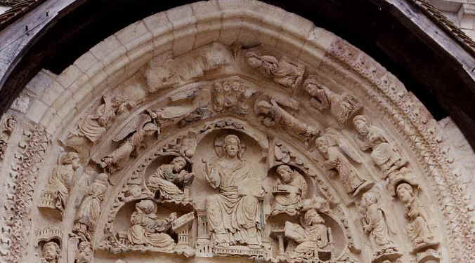
(tympan ouest de St Benoît-sur-Loire - cliquez pour agrandir l'image).On peut distinguer les quatre évangélistes sous leur forme humaine, ici en moines qui recopient les évangiles, mais aussi avec leurs symboles : Marc, en bas à gauche regarde la tête de lion, Luc, en bas à droite, regarde la tête de taureau. On peut mieux se faire une idée de l'association de ces symboles en examinant la voûte de la chapelle archiépiscopale de Ravenne :
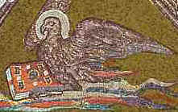
Aigle - Jean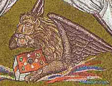
Lion - Marc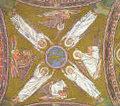
les quatre Evangélistes (coupole) - cliquez pour agrandir l'image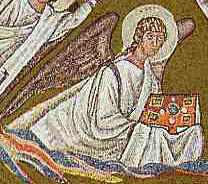
Ange - Matthieu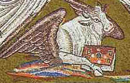
Taureau - LucD'où viennent ces équivalences ? Voyez les Figures Hiéroglyphiques pour une utilisation de ces symboles en alchimie. Dans la vision du prophète Ezéchiel, on lit la description d'un feu avec un étincellement vermeil qui n'est pas sans rappeler notre amande mystique, avec quatre visages d'hommes : tous les quatre avaient à droite une face de lion à gauche une face de taureau, et tous les quatre avaient une face d'aigle. On trouve encore de ces correspondances dans l'Apocalypse de saint Jean : quatre êtres vivants entourent le trône de Dieu ; le premier animal ressemblait à un lion, le deuxième à un jeune taureau, le troisième avait comme une face humaine, et le quatrième semblait un aigle en plein vol... et c'est saint Jérôme qui donne l'explication de ces correspondances : l'homme a été attribué à Matthieu parce qu'il commence son évangile par une généalogie humaine de Jésus (Mt 1, 1-17), le lion à Marc parce que dès les premières lignes de son récit il évoque « la voix qui crie dans le désert » qui ne peut être que le rugissement du lion (Mc 1, 3), le taureau, animal sacrificiel par excellence, à Luc à cause du récit du sacrifice offert au temple de Jérusalem par Zacharie placé au début de cet évangile (Lc 1, 5), l'aigle à Jean parce que cet évangéliste atteint les sommets de la doctrine comme l'aigle atteint les sommets des montagnes. Ce qu'il y a aussi d'intéressant à considérer est que ces correspondances ont une origine antérieure au monde chrétien : le chiffre quatre joue un rôle central (les quatre saisons, les quatre points cardinaux...). Ils ont pu être influencé aussi par les quatre gardiens du monde ou les quatre porteurs du ciel disposés aux quatre coins du firmament de l'ancien Orient, images qui reposent sur les symboles stellaires du zodiaque de la « croix fixe » qui sont le taureau, le lion, le scorpion et le verseau (le scorpion étant remplacé par l'aigle, le verseau par l'homme).
« Ce découpage quaternaire tirerait son origine des quatre éléments, du dualisme entre les forces amies et ennemies de l'homme : Le Feu (le taureau) et l'Eau (l'homme) d'un côté contre la terre (le lion) et l'air (l'aigle) de l'autre côté (ce qui serait un reflet du découpage entre bonnes et mauvaises saisons). » [site consulté : http://jfbradu2.free.fr/mosaiques/germigny/evangelistes.htm]
Nous ferons cependant remarquer - cf. supra - que l'on ne peut attribuer l'élément AIR à l'Aigle, qui par cabale, ressortit à l'EAU. Là encore, la version Dodal paraît plus juste que la version Noblet, Nicolas Conver restant la référence. [cf. précisions].
Conclusion
L'interprétation hermétique du Tarot s'avère protéiforme et bien digne des Métamorphoses d'Ovide. Nous laissons donc au lecteur le plaisir de trouver d'autres combinaisons appliquées à l'alchimie, car la nôtre ne saurait être que purement conjecturale. Le principe général qui nous a guidé dans cette approche était celui de la simplicité, ainsi qu'il sied à tout Amoureux de science. L'impétrant sait que l'Adepte fait son oeuvre par le seul Mercure. Qu'il ne se laisse point tenter par les interprétations des érudits qui ont fait remonter le Tarot à l'époque égyptienne, comme le pensait Court de Gébelin et comme le faisait accroire encore, vers la fin du XIXe siècle, Papus [Gérard Encausse] qui écrivait :
« Les anciens Egyptiens possédaient un livre dont chaque feuillet était une image gravée sur une feuille d'or. Ce livre servait à enseigner l'astronomie et l'alchimie aux jeunes prêtres et à donner les clefs des adaptations symboliques à tous les initiés. Les bohémiens ont porté ce livre jusqu'à nous et la clef de la Thorah, la Rota d'As-Taroth, est devenue un vulgaire jeu de cartes. »
Voici enfin, le nom que certains ont donné aux XXI Arcanes Majeurs, en plus du Mat :
Voici le nom que porte chacune des vingt-deux Lames du
groupe majeur.1° — la Volonté, (Le Bateleur).
2° — la Science, (La Papesse).
3° — l'Action, (L'Impératrice).
4° — la Réalisation, (L'Empereur).
5° — l'Inspiration, (Le Pape).
6° — l'Epreuve, (L'Amoureux).
7° — la Victoire, (Le Chariot).
8° — l'Equilibre, (La Justice).
9° — la Prudence, (L'Ermite).
10° — la Fortune, (La Roue).
11° — la Force. (Le Lion muselé).
12° — le Sacrifice, (Le Pendu).
13° — la Transformation, (La mort).
14°— l'Initiative, (La Tempérance).
15° — la Fatalité, (Typhon ou le Diable).
16° — la Ruine morale, (La Tour foudroyée).
17° — l'Espérance, (Les Etoiles).
18° — les Déceptions, (La Lune).
19° — le Bonheur, (Le Soleil).
20° — la Rénovation, (Le Jugement).
21° — la Récompense, (Le Monde).
22° — l'Expiation, (Le Fou).
Christian, dans son Histoire de la Magie, les groupe ainsi en une légende synthétique :
« — La Volonté humaine, éclairée par la Science, et manifestée par l'Action, crée la Réalisation d'un pouvoir dont elle use ou abuse, selon sa bonne ou mauvaise Inspiration, dans le cercle que lui tracent les lois de l'ordre universel. »
« Après avoir surmonté l'Epreuve qui lui est imposée par la sagesse divine, elle entre, par sa Victoire, en possession de l'œuvre qu'elle a créée, et, constituant son Equilibre sur l'axe de la Prudence, elle domine les oscillations de la Fortune.
« La Force de l'homme sanctifiée par le Sacrifice, — qui est l'offrande volontaire de soi-même sur l'autel du dévouement —, triomphe de la Mort, et sa divine transformation l'élevant, outre-tombe, dans les régions sereines d'un progrés infini, oppose la réalité d'une immortelle Initiative à l'éternel mensonge de la Fatalité.
« Le cours du Temps se mesure par des ruines; mais, au delà de chaque ruine on voit reparaître l'aurore de l'Espérance ou le crépuscule des Déceptions. L'homme aspire sans cesse à ce qui lui échappe, et le soleil du Bonheur vrai ne se lève pour lui que derrière la tombe, après que le Renouvellement de son être par la Mort, lui aura ouvert la porte des sphères supérieures. »
« Toute volonté qui se laisse gouverner par les instincts abdique son libre arbitre, et se voue aux affres de l'Expiation. Toute volonté, au contraire, qui s'unit à la Vérité aura, (même dans le courant de son existence terrestre), la Récompense promise aux Esprits affranchis. »Ceci est la manière « spirituelle » de lire les vingt-deux arcanes majeurs. [tiré de Les Mystères de l'Être, son origine spirituelle, ses facultés secrètes, Ely Star, Chacornac, 1902. Nous donnons ces réflexions pour ce qu'elles valent, sans tenter de leur donner d'interprétation]
Nous allons à présent résumer les concordances entre les XXI lames du Tarot [y compris le Mat] et les plus célèbres gravures ou emblèmes alchimiques en même temps que les rapports hermétiques et alchimiques proprement dits.
n° lame Vertu correspondance alchimique gravure ou emblème 0 Mat Folie Mercure Ripley's scrowles 1 Bateleur Inconstance Rebis Mutus Liber
planche XIII2 Papesse Philosophie Cybèle - Athanor Isis hermétique 4 Impératrice Prudence Mercure animé - sublimations Lambsprinck
planche IX5 Empereur Foi pierre cubique quatre Eléments Atalanta fugiens, emblème XXXVI 6 Amoureux Concorde eau minérale et métallique Symbola Aureae Mensa, planche 5 7 Chariot Orgueil Cohobation Château du Plessis-Bourré chariot 8 Justice Luxure poids de nature Douze Clefs de Philosophie Clef VII 9 Ermite Chasteté conducteur de l'Âme (Mercurius senex) Atalanta fugiens emblème XLII 10 Roue Obéissance Protée (Caméléon : lion rampant) Typus Mundi planche 2 11 Force Force captation du Lait de Vierge Gardes du Corps de François II La Force 12 Pendu Désobéissance lien du Mercure Symbola Aureae Mensa, planche 13 Mort Humilité corbeau Douze Clefs de Philosophie Clef IV 14 Tempérance Persévérance empâtement de l'eau mercurielle Gardes du Corps de François II La Tempérance 15 Diable Dialectique serpent Python Typhon 16 Maison Dieu Lâcheté brûler les fleurs par excès de sublimation Donum Dei planche IX bis 17 Etoiles Espérance eau minérale étoilée Jardin des Hespérides 18 Lune Avarice hydropisie Lambsprinck planche XIV 19 Soleil Grammaire illumination spirituelle (incanrnation de l'Âme) Arbori Solare 20 Jugement Douceur réveil spirituel (fin de la phase de dissolution) Douze Clefs de Philosophie Clef VIII 21 Monde Musique amande mystique Virgo paritura
Addendum : quatre arcanes mineurs.
Dans l'extrait du Miroir de la Magie que nous avons donné en introduction à l'analyse alchimique des XXI arcanes majeurs, figurent quatre arcanes mineurs dont nous n'avons pas encore donné l'interprétation. Ces arcanes mineurs, fort nombreux, se distribuent en séries de quatre, par bâtons, coupes, épées et deniers, tenant à quatorze cartes chacune. Dans nos jeux modernes, ces hiéroglyphes, que les cabalistes savaient lire, ont disparu pour prendre les figures plus exotériques de Carreau [bâton], de Coeur [coupe], de Piques [épée] et de Trèfles [denier].
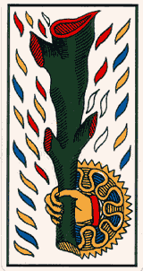
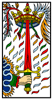
(bâton, épée, denier, coupe) Ces quatre séries symbolisent aussi les quatre éléments et l'on trouvera supra un tableau où les équivalents sont portés. Il était évidemment impossible d'analyser toutes les possibilités, ce qui nous aurait conduit à une redondance regrettable et prolixe. Aussi nous en sommes-nous tenus à un choix qui n'était pas personnel, puisque nous avons repris les quatre arcanes mineurs que Kurt Seligmann donne dans son ouvrage. Voici l'analyse ainsi conçue, que l'on verra infra.
La tradition y voit la spiritualité masculine. C'est donc un arcane où le principe Soufre et le Mercure sont alliés. La coupe représente un symbole que nous avons étudié ailleurs maintes fois et il suffira que le lecteur recherche ce terme [cf. index]. La coupe est l'hiéroglyphe du sec et de l'humide, c'est-à-dire de la conjonction entre la TERRE et l'EAU. Pour triviale et élémentaire que cette association paraisse, elle n'en cache pas moins un point de doctrine essentiel, bien relevé par Michel Maier :
« Que l’œuvre du potier, qui se compose de sec et d’humide, t’instruise » [Atalanta, XV].
Nous avons maintes fois relevé que l'Art sacré n'était autre qu'une conjonction radicale entre l'art du verrier et l'art du potier. Et que ce n'était pas par hasard que Böttger avait trouvé le secret de la porcelaine dure. C'est tout naturellement qu'Albert Le Grand assure, dans son Composé des composés :
« De même, dit-il [Avicenne], que la terre et l'eau sont la matière habituelle des pierres, de même les animaux peuvent devenir matière de certaines pierres ; si les corps de ces animaux se trouvent en certains lieux ou s'exhale une puissance pétrifiante. »
C'est nommer de façon à peine voilée le corail [cf. la Lune]. ailleurs, dans le Composé, Albert Le Grand dit encore que le Mercure renferme deux substances superflues : la terre et l'eau. En somme, le Mercure serait alors formé surtout d'air et de feu. Et de fait, l'air et le feu constituent les deux éléments ou le soufre sublimé prend son gîte ; c'est là que se forme, selon E. Canseliet, la vitreuse provision d'où l'Artiste devra tirer son « bouton de retour » et qui correspond au « retour des cendres ». Quant à l'eau qui provoque l'hydropisie du Mercure, c'est aussi dans la Lune que l'Artiste ira trouver la solution de ce problème. Dans le Donum Dei, Aurach écrit :
« Les nuages noirs descendent sur le corps d’où ils sont sortis et se fait une alliance
entre la terre et l’eau et les cendres sont formées. »Cela pour dire que la collaboration des deux éléments est nécessaire à la sublimation du Soufre [qui correspond à sa disparition, c'est-à-dire à la dissolution ou putréfaction] ; et que la réincrudation [le début de la coagulation de l'eau mercurielle] va dépendre de la sublimation du Mercure : c'est là où les alchimistes disent que l'on doit guérir le Roy de son hydropisie [cf. Lune là encore]. Les couleurs de la lame du Roi de Coupe où le bleu prédominent montrent nettement cet excès d'eau minérale dont le Roi devra être purgé [cf. l'Atalanta, XLVIII]
Le denier, au tarot, a valeur de TERRE. Associer le cavalier au denier, c'est, par cabale, parler de Persée et de Pégase. Là encore, nous avons « exploité le filon » de nombreuses fois [cf. en recherche]. Nous ajouterons que si Pégase, de son sabot, fait jaillir une source, celle-là même qui jaillit au pied du vieux chêne creux où poussent des rosiers fleuris, que nous montre l'une des figures du Livre d'Abraham Juif, cette source donc s'est formée d'abord sous terre. Pour obtenir cette eau jaillissante, il faut évidemment appliquer l'une des devises des alchimistes : V.I.T.R.I.O.L., acronyme qui cache la formule :
« Visitare Interiora Terrae Rectificando Invenies Occultum Lapidem : Explore le tréfonds de la Terre ; en purifiant tu trouveras la Pierre. »
L'allusion est donc claire : la purification de la materia prima passe par les laveures ignées de Flamel, c'est-à-dire par l'eau alliée au feu. C'est ce Mixte que les alchimistes ont appelé leur Mercure, c'est lui qui est leur dissolvant, la serrure qui ouvre les métaux. Ce n'est pas tout : on lit ceci dans le Char de Triomphe de l'Antimoine, attribué à Basile Valentin :
« Notez de plus que si vous mettez un denier d'argent qui soit creusé (comme il y en a en Allemagne), avec la marque d'une fleur de lys, à nager sur l'eau comme si c'était un petit bateau, et que vous approchiez de ce dernier un petit morceau de licorne, sans
toutefois qu'ils se touchent ensemble, vous verrez que la licorne, par sa vertu spirituelle, chassera en arrière le denier d'argent, de même que si c'était un canard qui voudrait éviter le coup d'un chasseur. »Sur la licorne, dont le symbolisme est expliqué dans la section Fontenay, nous avons vu qu'elle signifiait le Soufre prêt à être réincrudé. N'oublions pas qu'Aliette - alias Etteila - est évoquée lorsque Fulcanelli nous parle des couleurs de l'Oeuvre [ Le Denier du Pauvre ou la Perfection des métaux, Paris, c. 1785. Voir aussi le Psautier d'Hermophile ]. Quant à la fleur de lys, c'est le symbole royal par excellence ; il faut imaginer que, dans cette opération, le denier marqué à la fleur de lys est le patient et que la licorne est l'agent. Du reste, avec cette fleur de lys, nous restons dans le domaine de la chevalerie, fleur qui ornait jadis le casque des chevaliers. Il est clair que, dans l'ordre de sopérations, le denier passe avant la coupe, et que le résultat de l'opération voilée par le cavalier de denier est le roi de coupe.
L'épée a été tellement vue dans ce site que cela en devient décourageant ! [cf. recherche]. Que dire de plus ? Que l'épée est l'exact équivalent de la rosée de mai, dispensée par l'ange que l'on voit disposé dans l'arcane du Monde. Par cabale, l'instrument de section se rattache à l'AIR et , indirectement, au FEU. C'est l'hiéroglyphe de la formation du Caput, au 2ème oeuvre, lorsque l'Artiste, aidé de son nitre et de son vitriol, crée des nuages d'aqua fortis dans son récipient tandis que le précieux Caput reste en une masse de couleur hépatique, au fond de sa cornue. Mais comme saint Pierre donne à voir deux clefs dans sa main, comme la Philosophie offre deux livres dans sa main, comme encore le Bélier et le Taureau sont des signes doubles, l'épée, c'est aussi celle de l'archange Gabriel qui, le moment venu, terrasse le dragon Ladon en lui présentant sous la forme de la croix. Aussi bien cette action de l'épée est-elle comme une libération de la matière, correspondant à l'aphorisme de Basile Valentin, que nous avons déjà donné : « Dealbate Latonam et Rumpire Libros. ». L'opération s'apparente à l'ouverture de la terre feuillée, l'épée jouant exactement le même rôle que le soc de la charrue. Il faut ici rappeler, par désir d'aider l'étudiant, que Xénocrate aurait affirmé qu'à Chypre et en Asie, le cristal de roche était arraché du sol par le soc de la charrue [Pline, Hist. Nat., XXXVII, 25]. Ce n'est pas autre chose que l'Artiste doit s'efforcer de réaliser, à un moment crucial du 3ème oeuvre ; qu'il s'aide donc de fiel de verre qui, à en croire, Morien le Romain, serait d'un signalé service [cf. Loysel et Bosc d'Antic là-dessus] : son cristal en sera davantage dépuré.
Du reste, la couleur du vêtement de la Reine d'Epée ne saurait tromper : c'est le rouge qui domine, signe du Soufre. Le manteau est bleu, c'est-à-dire l'enveloppe du Soufre, ce que Fulcanelli appelait l'Hypérion de l'oeuvre, ou le père du Soleil. Eh bien ! Ce manteau, c'est encore l'égal de la première couverture du Laiton : l'Azoth. L'épée est l'instrument du blanchiment du Laiton, c'est-à-dire de l'ouverture de cette terre feuillée, qui se signale à l'Artiste par le signe constellé et radiant que les alchimistes ont appelé leur régule étoilé antimonial, sans qu'un seul atome d'antimoine métal soit présent,pour autant, dans la dissolution.Ce sera avec le meilleur que nous terminerons cette analyse succincte des arcanes mineurs. D'abord, le bâton ou massue. C'est le symbole du FEU, l'un des hiéroglyphes les plus impotants de l'alchimie. Vulcain l'offre à Hercule [notre Artiste] qui s'en va accomplir ses douze travaux [cf. Fontenay]. Ce bâton, c'est encore le bourdon du pèlerin, celui avec lequel Nicolas flamel s'en ira faire son voyage initiatique à saint Jacques de Compostelle, celui que prirent aussi, sans doute, Bernard Le Trévisan quand il alla voir son abbé à Rhodes, celui encore que dut prendre Denis Zachaire lorsqu'il alla successivement à Toulouse et à Paris, sur les conseils de son abbé [cf. section Cambriel pour une analyse plus complète des parcours initiatiques de ces deux alchimistes célèbres].
Le bâton du valet que l'on voit sur la lame est taillé de la même façon que l'arbre scié et fendu que l'on aperçoit sur l'un des caissons [série I, n° 1] du château de Dampierre qui a malheureusement brûlé récemment [il paraît que les caissons de la galerie se sont fendillés, en ayant subi une sorte de recuit, qu'on observe dans le travail de la céramique et de la porcelaine !] : il permet de comprendre, par cabale, que la matière est issu d'un gîte minier de type métamorphique, où la roche a pris un aspect feuilleté. On retrouve le même symbolisme, d'ailleurs, dans la lame du Pendu, où les deux arbres pareillement sciés et fendus, désignent le Roi et la Reine, au sommet de deux monticules. Malgré son aspect peu avenant, son allure vulgaire, les souffleurs ne le reconnaissent pas pour ce qu'il est : la baguette magique de l'Adepte, le sceptre de Domination et, en un mot,le Père de l'oeuvre. Nous devrions dire le grand'père d'ailleurs, puisque c'est rien moins que le premier Mercure [Merurius senex de Jung] que l'on voit ici représenté. En effet, il n'aura pas échappé au lecteur que c'est le Valet que nous tenu à montrer, pourvu de son boudon. Or, le valet est évidemment le serviteur, épithète que tous les textes donnent au Mercure. C'est la bête de somme [skeuojoroV] de l'Artiste, celle qui est attelée au Chariot de la lame VII. C'est le servant de l'hoplite [uhrethV], armé de la forte lance [doru] et du grand bouclier [oplou].
Le lecteur trouvera ci-dessous du Jeu des Tarots de Court de Gébelin. J'aurai souhaité donner à ce texte tous les commentaires qu'il mérite. Malheureusement, le temps me manque ; toutefois, les remarques formulées supra concernant les diverse figures du tarot peuvent être considérées comme des esquisses d'amplification.
Antoine Court de Gébelin (1725-1784)Court de Gébelin est le fils d'Antoine Court (1690-1760). Le nom de Gébelin lui vient de sa grand-mère paternelle. Sa date de naissance suscite une controverse. Certaines sources, se basant sur la correspondance de son père, indiquent qu'il serait né à Nîmes en 1728, mais d'autres mentionnent sa naissance à Genève en février 1724, où il aurait été enregistré par prudence sous le nom de Antoine Corteiz. Il se destine à la carrière pastorale, entre au Séminaire de Lausanne où il soutiendra sa thèse de théologie en 1754 : De prophetiis. Jusqu'en 1763, il enseigne au Séminaire la philosophie, la morale et la controverse. Il collabore avec son père au maintien des relations avec les Églises réformées de France, tant en entretenant avec elles une correspondance abondante qu'en se rendant lui-même en France. En 1763, il se fixe à Paris et renonce à la théologie au profit de la littérature. Mais il continue à se mettre au service des Églises qui l'élisent comme député ou « correspondant » des Églises de France auprès des puissances protestantes. Il meurt à Paris en 1784. http://www.museeprotestant.org/Pages/Notices.php?noticeid=551&scatid=144&lev=1
La publication, entre 1773 et 1782, des neuf volumes du Monde primitif, analysé et comparé avec le monde moderne fut le grand oeuvre de Court. Fort des encouragements de souscripteurs aussi célèbres qu'actifs ( Louis XVI, la reine Marie-Antoinette, Diderot, d'Alembert, Franklin, pour ne citer que les plus connus aujourd'hui ), Court de Gébelin analyse et commente les manifestations du génie humain qui lui paraissent les plus significatives. Son esprit systématique devait naturellement le pousser à s'intéresser à ce que nous appellerions aujourd'hui la linguistique: deux des premiers volumes du Monde primitif traitent donc de la grammaire ( tome II ) et de l'étymologie ( tome III). L'histoire du calendrier fournit la matière du tome IV, pendant que les tomes V à VII se préoccupent à nouveau d'étymologie, le tome IX formant à lui seul un " Dictionnaire étymologique de la langue grecque".
Ce monde primitif-sorte de prescience de la préhistoire- avait précédé notre humanité tout en laissant visibles des"signes" que Court proposait de décoder et d'interpréter. Cette sémiotique naïve, qui portait sur l'étymologie, le blason, le calendrier et autres répertoires de figures, valut à Court la considération des cercles savants et sa promotion au rang de " censeur royal", fonction qu'il semble avoir exercée à partir de 1778. En 1776, il avait fait paraître une histoire naturelle de la parole, ou Précis de l'origine du langage et de la grammaire universelle, essai de grammaire comparatiste assez audacieux qui fut même réimprimé au XIXe siècle.
Le jugement de la postérité scientifique fut pourtant sévère pour les travaux de Court de Gébelin, qui aurait vu ainsi sa somme reléguée dans les oubliettes de l'histoire si le tome VIII du Monde primitif n'avait traité, entre autres, du Tarot. En moins de cinquante pages, le savant pasteur devait s'assurer une pérennité à laquelle les développements modernes du Tarot occultiste donnent tout leur poids.
Frappé par les images d'un jeu qui lui était familier ( "j'ai eu l'occasion de la voir étant fort jeune..."), mais auquel il n'avait pas prêté d'attention particulière jusqu'ici, Antoine Court décréta, en 1781, qu'il s'agissait là des images d'un livre égyptien, dont chaque feuillet méritait d'être commenté. C'est à vrai dire, à un certain M. le C. de M. (Monsieur le comte de Mellet ), à qui Court de Gébelin laisse la plume, que l'on doit les premières considérations sur l'usage divinatoire de ce que celui-ci appelle le" Livre de THOT". La cartomancie, d'abord, avec Eteilla, puis l'occultisme, avec Eliphas Lévi, devaient puiser abondamment dans les propos de Court de Gébelin et de son collaborateur: La tradition ésotérique du Tarot était née. [Encyclopedia Universalis]
Court de Gébelin, Antoine: Monde primitif, analysé et comparé avec le monde moderne vol. 8, tome 1, Paris 1781 - p. 365-410
Considéré dans divers objets concernant l'histoire, le blason, les monnoies, les jeux, les voyages des phéniciens autour du monde, les langues américaines, etc. ou dissertations mêlées
Du Jeu des Tarots.
Où l'on traite de son origine, où on explique ses Allegories, & où l'on fait voir qu'il est la source de nos Cartes modernes à jouer, etc. etc.
1.
Surprise que causeroit la découverte d'un Livre Egyptien.
Si l'on entendoit annoncer qu'il existe encore de nos jours un Ouvrage des anciens Egyptiens, un de leurs Livres échappé aux flammes qui dévotèrent leurs superbes Bibliothèques, & qui contient leur doctrine la plus pure sur des objets intéressans, chacun seroit, sans doute, empressé de connoître un Livre aussi précieux, aussi extraordinaire. Si on ajoûtoit que ce Livre est très-répandu dans une grande partie de l'Europe, que depuis nombre de siècles il y est entre les mains de tout le monde, la surprise iroit certainement en croissant: ne seroit-elle pas à son comble, si l'on assuroit qu'on n'a jamais soupçonné qu'il fût Egyptien; qu'on le possède comme ne le possedant point, que personne n'a jamais cherché à en déchiffrer une feuille: que le fruit d'une sagesse exquise est regardé comme un amas de figures extravagantes qui ne signifient rien par elles-mêmes? Ne croiroit-on pas qu'on veut s'amuser, se jouer de la crédulité de ses Auditeurs?
2.
Ce Livre Egyptien existe.
Le fait est cependant très-vrai: ce Livre Egyptien, seul reste de leurs superbes Bibliothèques, existe de nos jours: il est même si commun, qu'aucun Savant n'a daigné s'en occuper; personne avant nous n'ayant jamais soupçonné son illustre origine. Ce Livre est composé de LXXVII feuillets ou tableaux, même de LXXVIII, divisés en V classes, qui offrent chacune des objetes aussi variés qu'amusans & instructifs: ce Livre est en un mot le JEU DES TAROTS, jeu inconnu, il est vrai, à Paris, mais très-connu en Italie, en Allemagne, même en Provence, & aussi bisarre par les figures qu'offre chacune de ses cartes, que par leur multitude.
Quelqu'étendues que soient les Contrées où il est en usage, on n'en étoit pas plus avancé sur la valeur des figures bisarres qu'il paroît offrir: & telle est son antique origine qu'elle se perdoit dans l'obscurité des tems, qu'on ne savoit ni où quand il avoit été inventé, ni le motif qui y avoit rassemblé tant de figures extraoridnaires, si peu faites ce semble pour marcher de pair, telles qu'il n'offre dans tout son ensemble qu'une énigme que personne n'avoit jamais cherché à résoudre.
Ce Jeu a même paru si peu digne d'attention, qu'il n'est jamais entré en ligne de compte dans les vues de ceux de nos Saans qui se sont occupés de l'origine des Cartes: ils n'ont jamais parlé que des Cartes Françoises, ou en usage à Paris, dont l'origine est peu ancienne; & après en avoir prouvé l'invention moderne, ils ont cru avoir épuisé la matiere. C'est qu'en effet on confond sans cesse l'établissement d'une connoissance quelconque dans un Pays avec son invention primitive: c'est ce que nous avons déjà fait voir à l'égard de la boussole: les Grecs & les Romains eux-mêmes n'ont que trop confondu ces objets, ce qui nous a privé d'une multitude d'origines intéressantes.
Mais la forme, la disposition, l'arrangement de ce Jeu & les figures qu'il offre sont si manifestement allégoriques, & ces allégories sont si conformes à la doctrine civile, philosophique & religieuse des anciens Egyptiens, qu'on ne peut s'empêcher de le reconnoître pour l'ouvrage de ce Peuple de Sages: qu'eux seuls purent en être les Inventeurs, rivaux à cet égard des Indiens qui inventoient le Jeu des Echecs.
Division.
Nous ferons voir les allégories qu'offrent les diverses Cartes de ce Jeu.
Les formules numériques d'après lesquelles il a été composé.
Comment il s'est transmis jusques à nous.
Ses rapports avec un Monument Chinois.
Comment en naquirent les Cartes Espagnoles.
Et les rapports de ces dernieres avec les Cartes Françoises.
Cet Essai sera suivi d'une Dissertation où l'on établit comment ce Jeu étoit appliqué à l'art de la Divination; c'est l'ouvrage d'un Officier Général, Gouverneur de Province, qui nous honore de sa bienveillance, & qui a retrouvé dans ce Jeu avec une sagacité très-ingénieuse les principes Egyptiens sur l'art de deviner par les Cartes, principes qui distinguèrent les premieres Bandes des Egyptiens mal nommés Bohêmiens qui se répandirent dans l'Europe; & dont il subsiste encore quelques vestiges dans nos Jeux de Cartes, mais qui y prêtent infiniment moins par leur monotonie & par le petit nombre de leurs figures.
Le Jeu Egyptien, au contraire, étoit admirable pour cet effet, tenfermant en quelque façon l'Univers entier, & les Etats divers dont la vie de l'Homme est susceptible. Tel étoit ce Peuple unique & profonf, qu'il imprimoit au moindre de ses ouvrages le sceau de l'immortalité, & que les autres semblent en quelque sorte se traîner à peine sur ses traces.
ARTICLE I.
Allégories qu'offrent les Cartes du Jeu de Tarots.
Si ce Jeu qui a toujours été muet pour tous ceux qui le connoissent, s'est développé à nos yeux, ce n'a point été l'effet de quelques profondes méditations, ni de l'envie de débrouiller son cahos: nous n'y pensions pas l'instant avant. Invité il y a quelques années à aller voir une Dame de nos Amies, Madame la C. d'H., qui arrivoit d'Allemagne ou de Suisse, nous la trouvâmes occupée à jouer à ce Jeu avec quelques autres Personnes. Nous jouons à un Jeu que vous ne connoissez sûrement pas... Cela se peut; quel est-il?.. Le Jeu des Tarots... J'ai eu occasion de le voir étant fort jeune, mais je n'en ai aucune idée... C'est une rapsodie des figures les plus bisarres, les plus extravagantes: en voilà une, par exemple; on eut soin de choisir la plus chargée de figures, & n'ayant aucun rapport à son nom, c'est le Monde: j'y jette les yeux, & aussi-tôt j'en reconnois l'Allégorie: chacun de quitter son Jeu & de venir voir cette Carte merveilleuse où j'appercevois ce qu'ils n'avoient jamais vû: chacun de m'en montrer une autre: en un quart-d'heure le Jeu fut parcoutu, expliqué, déclaré Egyptien: & comme ce n'étoit point le jeu de notre imagination, mais l'effet des rapports choisis & sensibles de ce jeu avec tout ce qu'on connoît d'idées Egyptiennes, nous nous promîmes bien d'en faire part quelque jour au Public; persuadés qu'il autoit pour agréable une découverte & un présent de cette nature, un Livre Egyptien échappé à la barbarie, aux ravages du Tems, aux incendies accidentelles & aux volontaires, à l'ignorance plus désastreuse encore.
Effet nécessaire de la forme frivole & légere de ce Livre, qui l'a mis à même de triompher de tous les âges & de passer jusques à nous avec une fidélité rare: l'ignorance même dans laquelle on a été jusques ici de ce qu'il representoit, a été un heureux sauf-conduit qui lui a laissé traverser tranquillement tous les Siècles sans qu'on ait pensé à le faire disparoître.
Il étoit tems de retrouver les Allégories qu'il étoit destiné à conserver, & de faire voir que chez le Peuple le plus sage, tout jusqu'aux Jeux, étoit fondé sur l'Allégorie, & que ces Sages savoient changer en amusement les connoisances les plus utiles & n'en faire qu'un Jeu.
Nous l'avons dit, le Jeu des Tarots est composé de LXXVII Cartes, même d'une LXXVIIIe, divisées en Atous & en IV couleurs. Afin que nos Lecteurs puissent nous suivre, nous avons fait graver les Atous; & l'As de chaque couleur, ce que nous appellons avec les Espagnols, Spadille, Baste, & Ponte.
ATOUS.
Les Atous au nombré de XXII, représentent en général les Chefs temporels & spirituels de la Société, les Chefs Physiques de l'Agriculture, les Vertus Cardinales, le Mariage, la Mort & la résurrection ou la création; les divers jeux de la fortune, le Sage & le Fou, le Tems qui consume tout, &c. On comprend ainsi d'avance que toutes ces Cartes sont autant de Tableaux allégoriques relatifs à l'ensemble de la vie, & susceptibles d'une infinité de combinaisons. Nous allons les examiner un à un, & tâcher de déchiffrer l'allégorie ou l'énigme particuliere que chacun d'eux renferme.
« avec l'autorisation de J.C. Flornoy »
No. 0, Zero.
Le Fou.
On ne peut méconnoître le Fou dans cette Carte, à sa marotte, & à son hoqueton garni de coquillages & de sonnettes: il marche très-vîte comme un fou qu'il est, portant derriere lui son petit paquet, & s'imaginant échapper par-là à un Tigre qui lui mord la croupe: quant au fac, il est l'emblême de ses fautes qu'il ne voudroit pas voir; & ce Tigre, celui de ses remords qui le suivent galopant, & qui sautent en croupe derriere lui.
Certe belle idée qu'Horace a si bien encadrée dans de l'or, n'étoit donc pas de lui, elle n'avoit pas échappé aux Egyptiens: c'étoit une idée vulgaire, un lieu commun; mais prise dans la Nature toujours vraie, & présentée avec toutes les graces dont elle est susceptible, cet agréable & sage Poëte sembloit l'avoir tirée de son profond jugement.
Quant à cet Atout, nous l'appellons Zero, quoiqu'on le place dans le jeu après le XXI, parce qu'il ne compte point quand il est seul, & qu'il n'a de valeur que celle qu'il donne aux autres, précisément comme notre zero: montrant ainsi que rien n'existe sans sa folie.
[les coquillages, rappelons-le, sont une indication en spagyrie, sur l'une des matières clef de l'oeuvre, relativement à la substance du Lait de Vierge. Fulcanelli est clair là-dessus dans sa trilogie, suivi en cela par son disciple Canseliet - le remords est un trait de cabale, cf. Atalanta XLIV sur jukh : le remords de conscience est ce qui traverse l'âme, cf. Orthelius et ce que je dis de la philosophie critique appliquée au symbolisme alchimique. Quant au tigre, c'est le nom, avec le Lion vert, que certains Artistes donnent au Premier Mercure.]
« avec l'autorisation de J.C. Flornoy »
No. I.
Le Jouer de Gobelets, ou Bateleur.
Nous commençons par le no. I. pour suivre jusques au 21, parce que l'usage actuel est de commencer par le moindre nombre pour s'élever de-là aux plus hauts: il paroît cependant que les Egyptiens commençoient à compter par le plus haut pour descendre de-là jusqu'au plus bas. C'est ainsi qu'ils solsifioient l'Octave en descendant, & non en montant comme nous. Dans la Dissertation qui est à la suite de celle-ci, on suit l'usage des Egyptiens, & on en tire le plus grand parti. On aura donc ici les deux manieres: la nôtre la plus commode quand on ne veut considérer ces Cartes qu'en elles-mêmes: & celle-là, utile pour en mieux concevoir l'ensemble & les rapports.
Le premier de tous les Atous en remontant, ou le dernier en descendant, est un Joueur de Gobelet; on le reconnoît à sa table couverte de dés, de gobelets, de couteaux, de bales, &c. A son bâton de Jacob ou verge des Mages, à la bale qu'il tient entre deux doigts & qu'il va escamoter.
On l'appelle Bâteleur dans la dénomination des Cartiers: c'est le nom vulgaire des personnes de cet état: est-il nécessaire de dire qu'il vient de baste, bâton ?
A la tête de tous les Etats, il indique que la vie entiere n'est qu'un songe, qu'un escamotage: qu'elle est comme un jeu perpétuel du hasard ou du choc de mille circonstances qui ne dépenditent jamais de nous, & sur lequel influe nécessairement pour beaucoup toute administration générale.
Mais entre le Fou & le Bateleur, l'Homme n'est-il pas bien:
[sur le bâton de Jacob : ou arbalestrille, dont l'origine remonte aux Chaldéens mais décrit pour la première fois par Levy Ben Gerson en 1342. Il permettait aux astronomes de mesurer les angles entre deux astres, ou la hauteur d'un astre au-dessus de l'horizon. La visée est directe et donc dans le cas du Soleil l'observateur était ébloui. Evidemment, il n'y a aucun rapport avec le bâton de Jacob dont parle Court de Gébelin. Eh pourtant ! L'homme ne passe-t-il pas sa vie à s'éblouir de lui-même tel Phaéton ou Icare ? Plus près du symbolisme traditionnel, nous trouvons le Bâton de Jacob ou Campanula persicifolia, plante qui a pour origine géographique le Bassin méditerranéen plus précisément la Crête et l'ouest de la Turquie. Notez encore que l'on peut trouver notre bâton de Jacob dans la Clef VIII des Douze Clefs de philosophie attribuées à Basile Valentin et que cette Clef a des rapports avec la lame XX du Jugement. Minerve donna sans doute cette fleur à Ulysse en le touchant de sa baguette, Moïse et Aaron s'en servirent avec succès et avant eux, le bâton de Jacob jouissait d'une grande réputation. Le sceptre des rois, le bâton des augures, la crosse des évêques ne sont que des baguettes d'un diamètre un peu plus fort. On aura garde d'oublier, enfin, que c'est dans la prairie d'Asphodèle que séjournent les âmes des morts - Enfers, chant XI - et qu'à ce titre, nous y trouvons le symbole du Mercure philosophique. Le lien qui, durant la vie, attache l’esprit au corps est relâché, mais non rompu ; l’âme, plus libre, erre la nuit autour des lieux qu’elle avait habités, ou elle descend encore aux champs stériles que couvre l’asphodèle, la plante des morts, cf. Victor Duruy, Histoire des Grecs, Chapitre VI — Religion de l’âge héroïque. Dom Augustin Calmet nous apprend, dans sa dissertation sur l’Exode, « que les opérations de ces mages n’étaient pas des miracles proprement dits, mais une métamorphose fort singulière et fort difficile, qui néanmoins n’est ni contre ni au-dessus des lois de la nature.» Voilà une réflexion qui peut s'appliquer à la lettre sur le but que poursuivent les alchimistes. La verge de Moïse est, d'autre part, un serpent qui inscrit la trace mercurielle, en faisant jaillir l'eau du rocher d'Horeb pendant l'Exode.]
No. II, III, IV, V.
Chefs de la Société.
Les Numéros II & III représentent deux femmes: les Numéros IV & V, leurs maris: ce sont les Chefs temporels & spirituels de la Société.
Roi & Reine.
Le No. IV. représente le Roi, & le III. la Reine. Ils ont tous les deux pour attributs l'Aigle dans un Ecusson, & le sceptre surmonté d'un globe thautifié ou couronné d'une croix, appellée Thau, le signe par excellence.
Le Roi est vu de profil, la Reine de face: ils sont tous les deux assis sur un Trône, La Reine est en robe traînante, le dossier de son Trône est élevé: le Roi est comme dans une gondole ou chaise en coquille, les jambes croisées. Sa Couronne est en demì cercle surmontée d'une perle à croix. Celle de la Reine se termine en pointe. Le Roi porte un Ordre de Chevalerie.
[le tau : Fulcanelli y insiste dans le Myst. Cath. Il s'agit de la forme primitive de la croix égyptienne T. On en trouve disposées en figures d'homme croix dans le De Occulta Philosophia d'Agrippa von Nettesheim, Cologne, 1533, p. 167 ainsi que le rappelle Jung dans ses Métamorphoses de l'Âme et ses symboles, trad. Georg, 1953, fig. 170. La croix en forme de Tau symboliserait, pour certains, le serpent fixé à un pieu ; il s'agirait alors d'une hypostase du processus alchimique : fixer le volatil.]
« avec l'autorisation de J.C. Flornoy »
Grand-Prêtre & Grande-Prêtresse.
Le No. V. représente le Chef des Hiérophantes ou le Grand-Prêtre: le No. II. la Grande-Prêtresse ou sa femme: on sait que chez les Egyptiens, les Chefs du Sacerdoce étoient mariés. Si ces Cartes étoient de l'invention des Modernes, on n'y verroit point de Grande-Prêtresse, bien moins encore sous le nom de Papesse, comme les Cartiers Allemands ont nommé celle-ci ridiculement.
La Grande-Prêtresse est assise dans un fauteuil: elle est en habit long avec une espèce de voile derriere la tête qui vient croiser sur l'estomac: elle a une double couronne avec deux cornes comme en avoit Isis: elle tient un Livre ouvert sur ses genoux; deux écharpes garnies de croix se croisent sur sa poltrine & y forment un X.
Le Grand-Prêtre est en habit long avec un grand manteau qui rient à une agraffe: il porte la triple Thiare: d'une main, il s'appuie sur un Sceptre à triple croix: & de l'autre, il donne de deux doigts étendus la bénédiction à deux personnages qu'on voit à ses genoux.
Les Cartiers Italiens ou Allemands qui ont ramené ce jeu à leurs connoissances, ont fait de ces deux personnages auxquels les Anciens donnoient le nom de Pere & de Mere, comme on diroit Abbé & Abbesse, mots Orientaux signifiant la même chose, ils en ont fait, dis-je, un Pape & une Papesse.
Quant au Sceptre à triple croix, c'est un monument absolument Egyptien: on le voit sur la Table d'Isis, sous la Lettre TT; Monument précieux que nous avons déjà fait graver dans toute son étendue pour le donner quelque jour au Public. Elle a rapport au triple Phallus qu'on promenoit dans la fameuse Fête des Pamylies où l'on se réjouissoit d'avoir retrouvé Osiris, & où il étoit le symbole de la régénération des Plantes & de la Nature entiere.
« avec l'autorisation de J.C. Flornoy »No. VII.
Osiris Triomphant.
Osiris s'avance ensuite; il paroît sous la forme d'un Roi triomphant, le Sceptre en main, la Couronne sur la tête: il est dans son char de Guerrier, tiré par deux chevaux blancs. Personne n'ignore qu'Osiris étoit la grande Divinité des Egyptiens, la même que celle de tous les Peuples Sabéens, ou le Soleil symbole physique de la Divinité suprême invisible, mais qui se manifeste dans ce chef-d'oeuvre de la Nature. Il avoit été perdu pendant l'hyver: il reparoît au Printems avec un nouvel éclat, ayant triomphé de tout ce qui lui faisoit la guerre.
« avec l'autorisation de J.C. Flornoy »No. VI.
Le Mariage.
Un jeune homme & une jeune femme se donnent leur foi mutuelle: un Prêtre les bénit, l'Amour les perce de ses traits. Les Cartiers appellent ce Tableau, l'Amoureux. Ils ont bien l'air d'avoir ajouté eux-mêmes cet Amour avec son arc & ses flèches, pour rendre ce Tableau plus parlant à leurs yeux.
On voit dans les Antiquités de Boissard [T. III. Pl. XXXVI.], un Monument de la même nature, pour peindre l'union conjugale; mais il n'est composé que de trois figures.
L'Amant & l'Amante qui se donnent leur foi: l'Amour entre deux sert de Tèmoin & de Prêtre.
Ce Tableau est intitulé Fidei Simulacrum, Tablèau de la Foi conjugale: les personnages en sont désignés par ces beaux noms, Vérité, Honneur & Amour. Il est inutile de dire que la vérité désigne ici la femme plutôt que l'homme, non-seulement parce que ce mot est du genre féminin, mais parce que la Fidelité constante est plus essentielle dans la femme. Ce Monument précieux fut élevé par un nommé T. Fundanius Eromenus ou l'aimable, à sa très-chere Epouse Poppée Demetrie, & à leur fille chérie Manilia Eromenis.
[Boissard (1528-1602) Antiquarum inscriptionum, quae partim in Italia, partim in Germania et Gallia videntur, cum suis signis et imaginibus exacta descriptio, Paris, B. N., réserve des imprimés, ms. n° 468 bis]
Planche V.
No. VIII. XI. XII. XIII.
Les quatre Vertus Cardinales.
Les Figures que nous avons réunies dans cette Planche, sont relatives aux quatre Vertus Cardinales.
No. XI. Celle-ci représente la Force. C'est une femme qui s'est rendue maitresse d'un lion, & qui lui ouvre la gueule avec la même facilité qu'elle ouvriroit celle de son petit épagneul; elle a sur la tête un chapeau de Bergere.
No. XIII. La Tempérance [recte: XIV]. C'est une femme aîlée qui fait passer de l'eau d'une vase dans un autre, pour tempérer la liqueur qu'il renferme.
No. VIII. La Justice. C'est une Reine, c'est Astrée assise sur son Trône, tenant d'une main un poignard; de l'autre, une balance.
No. XII. La Prudence est du nombre des quatre Vertus Cardinales: les Egyptiens purent-ils l'oublier dans cette peinture de la Vie Humaine ? Cependant, on ne la trouve pas dans ce Jeu. On voit à sa place sous le No. XII. entre la Force & la Tempérance, un homme pendu par les pieds: mais que fait-là ce pendu ? c'est l'ouvrage d'un malheureux Cartier présomptueux qui ne comprenant pas la beauté de l'allégorie renfermée sous ce tableau, a pris sur lui de la corriger, & par-là même de le défigurer entierement.
La Prudence ne pouvoit être représentée d'une maniere sensible aux yeux que par un homme debout, qui ayant un pied posé, avance l'autre, & le tient suspendu examinant le lieu où il pourra le placer surement. Le titre de cette carte étoit donc l'homme au pied suspendu, pede suspenso: le Cartier ne sachant ce que cela vouloit dire, en a fait un homme pendu par les pieds.
Puis on a demandé, pourquoi un pendu dans ce Jeu ? & on n'a pas manqué de dire, c'est la juste punition de l'Inventeur du Jeu, pour y avoir représenté une Papesse.
Mais placé entre la Force, la Tempérance & la Justice, qui ne voit que c'est la Prudence qu'on voulut & qu'on dut représenter primitivement ?
[la Prudence attire l'attention, par son assimilation au Pendu qui en constitue une forme d'hypostase. Cette lame est rapprochée d'habitude de l'Hermite, IX et du Diable, XV. La Tentation de saint Antoine enseigne le cousinage entre ces trois arcanes. Disserter là-dessus serait récrire entièrement plusieurs sections de notre alchimie. Parmi toutes les variantes connues, celle-ci est peut-être la plus aboutie : le Pendu correspondrait à l'oubli de SOI ou le désir de se libérer d'un joug. Or, le SOI correspond hermétiquement au Mercurius senex de Jung - voir Psychologie et Alchimie, trad. Buchet Chastel, 1970 - et le joug correspond au lien du Mercure. Les Chaldéens de notre temps font correspondre cette lame à la XIIe maison de l'horoscope : la fin des choses ; mais le lecteur qui aura lu nos sections sur l'astrologie sait tout le peu de crédit que l'on peut placer - au point de vue symbolique - dans ces lames de tarot virtuelles que sont les maisons astrologiques : en même temps que l'esprit, elles ont perdu l'âme et la lettre de la subtilité. Sur la Tempérance, l'opération consiste à maîtriser les Taureaux furieux ou ce qui revient au même, à calmer l'acrimonie du vieux dragon : c'est nommer le Lion vert de Ripley.]
« avec l'autorisation de J.C. Flornoy »Planche VI.
No. VIIII. ou IX.
Le Sage ou le Chercheur de la Vérité & du Juste.
Le No. IX. représente un Philosophe vénérable en manteau long, un capuchon sur les épaules: il marche courbé sur son bâton, & tenant une lanterne de la main gauche. C'est le Sage qui cherche la Justice & la Vertu.
On a donc imaginé d'après cette peinture Egyptienne, l'Histoire de Diògene qui la lanterne en main cherche un homme en plein midi. Les bons mots, sur-tout les Epigrammatiques, sont de tout siècle: & Diogène étoit homme à mettre ce tableau en action.
Les Cartiers ont fait de ce Sage un Hermite. C'est assez bien vu: les Philosophes vivent volontiers en retraite, ou ne sont guères propres à la frivolité du siècle. Heraclide passoit pour fou aux yeux de ses chers Concitoyens: dans l'Orient, d'ailleurs, se livrer aux Sciences spéculatives ou s'Hermetiser, est presque une seule & même chose. Les Hermites Egyptiens n'eurent rien à reprocher à cet égard à ceux des Indes, & aux Talapoins de Siam: ils étoient ou sont tous autant de Druides.
[l'Hermite est une lame qui nous est particulièrement chère; la comparaison de Gébelin - Diogène cherchant un homme en plein midi une lanterne à la main - évoque bien sûr cette sublime gravure de l'Atalanta fugiens où le sage suit Diane à la trace que ses pieds laissent dans la boue. Sur Héraclide : Héraclée du Pont, au IVe siècle av. J.-C., disciple de Platon, il fut le premier astronome qui admit la rotation de la Terre autour de son axe ; on lui doit un traité sur l'âge d'Homère et d'Hésiode]
« avec l'autorisation de J.C. Flornoy »No. XIX.
Le Soleil.
Nous avons réuni sous cette planche tous les tableaux relatifs à la lumiere: ainsi après la lanterne sourde de l'Hermite, nous allons passer en revue le Soleil, la Lune & le brillant Sirius ou la Canicule étincelante, tous figurans dans ce jeu, avec divers emblêmes.
Le Soleil est représenté ici comme le Pere physique des Humains & de la Nature entiere: il éclaire les hommes en Société, il préside à leurs Villes: de ses rayons distillent des larmes d'or & de perles: ainsi on désignoit les heureuses influences de cet astre.
Ce Jeu de Tarots est ici parfaitement conforme à la doctrine des Egyptiens, comme nous l'allons voir plus en détail à l'article suivant.
« avec l'autorisation de J.C. Flornoy »No. XVIII.
La Lune.
Ainsi la Lune qui marche à la suite du Soleil est aussi accompagnée de larmes d'or & de perles, pour marquer également qu'elle contribue pour sa part aux avantages de la terre.
Pausanias nous apprend dans la Description de la Phocide, que selon les Egyptiens, c'étoient les Larmes d'Isis qui enfloient chaque année les eaux du Nil & qui rendoient ainsi fertiles les campagnes d'Egypte. Les relations de ce Pays parlent aussi d'une Goutte ou larme, qui tombe de la Lune au moment où les eaux du Nil doivent grossir.
Au bas de ce tableau, on voit une Ecrevisse ou Cancer, soit pour marquer la marche rétrograde de la Lune, soit pour indiquer que c'est au moment où le Soleil & la Lune sortent du signe de Cancer qu'arrive l'inondation causée par leurs larmes au lever de la Canicule qu'on voit dans le tableau suivant.
On pourroit même réunir les deux motifs: n'est-il pas très-ordinaire de se déterminer par une foule de conséquences qui forment une masse qu'on seroit souvent bien embarrassé à démêler ?
Le milieu du tableau est occupé par deux Tours, une à chaque extrémité pour désigner les deux fameuses colonnes d'Hercule, en-deça & au-delà desquelles ne passerent jamais ces deux grands luminaires.
Entre les deux colonnes sont deux Chiens qui semblent aboyer contre la Lune & la garder: idées parfaitement Egyptiennes. Ce Peuple unique pour les allégories, comparoit les Tropiques à deux Palais gardés chacun par un chien, qui, semblables à des Portiers fideles, retenoient ces Astres dans le milieu des Cieux sans permettre qu'ils se glissassent vers l'un ou l'autre Pôle.
Ce ne sont point visions de Commentateurs en us. Clement, lui-même Egyptien, puisqu'il étoit d'Alexandrie, & qui par conséquent devoit en savoir quelque chose, nous assure dans ses Tapisseries [Ou Stromates, Liv. V.] que les Egyptiens représentoient les Tropiques sous la figure de deux Chiens, qui, semblables à des Portiers ou à des Gardiens fideles, empêchoient le Soleil & la Lune de pénétrer plus loin, & d'aller jusqu'aux Pôles.
[L'iconographie alchimique nous donne de nombreux exemples de ces scènes où entrent en jeu deux chiens ou bien encore un chien et un loup. L'allusion aux colonnes d'Hercule, figurées selon Court de Gébelin par les tours est plus intéressante. En effet, parmi les travaux moins connus d'Hercule, on peut mentionner le fait qu'il fendit un rocher pour former le détroit de Gibralter qui portait le nom, dans l'Antiquité, de Colonnes d'Hercule. il s'agit des deux rochers qui forment le détroit de Gibraltar, fermant la Méditerranée. Ces rochers avaient pour nom, dans l'Antiquité, Calpé (du côté européen) et Abyla
(du côté africain). Ils portent ce nom car, selon la légende, Hercule aurait fendu le roc à cet endroit, formant ainsi le détroit. On peut voir dans cette légende une autre version de la verge de Moïse dont l'imposition sur un rocher en fait sourdre de l'eau. ]
« avec l'autorisation de J.C. Flornoy »No. XVII.
La Canicule.
Ici nous avons sous les yeux un Tableau non moins allégorique, & absolument Egyptien; il est intitulé l'Etoile. On y voir, en effet, une Etoile brillante, autout de laquelle sont sept autres plus petites. Le bas du Tableau est occupé par une femme panchée sur un genou qui tient deux vases renverses, dont coulent deux Fleuves. A côté de cette femme est un papillon sur une fleur.
C'est l'Egyptianisme tout pur.
Cette Etoile, par excellence, est la Canicule ou Sirius: Etoile qui se leve lorsque le Soleil sort du signe du Cancer, par lequel se termine le Tableau précédent, & que cette Etoile suit ici immédiatement.
Les sept Etoiles qui l'environment, & qui semblent lui faire leur cour, sont les Planettes: elle est en quelque sorte leur Reine, puisqu'elle fixe dans cet instant le commencement de l'année; elles semblent venir recevoir ses ordres pouir régler leur cours sur elle.
La Dame qui est au-dessous, & fort attentive dans ce moment à répandre l'eau de ses vases, est la Souveraine des Cieux, Isis, à la bienfaisance de laquelle on attribuoit les inondations du Nil, qui commencent au lever de la Canicule; ainsi ce lever étoit l'annonce de l'inondátion. C'est pour cette raison que la Canicule étoit consacrée à Isis, qu'elle étoit son symbole par excellence.
Et comme l'année s'ouvroit ègalement par le lever de cet Aftre, on l'appelloit Soth-Is, ouverture de l'année; & c'est sous ce nom qu'il étoit consacré à Isis.
Enfin, la Fleur & le Papillon qu'elle supporte, étoient l'emblême de la régénération & de la résurrection: ils indiquoient en même tems qu'à la faveur des bienfaits d'Isis, au lever de la Canicule, les Campagnes de l'Egypte, qui étoient absolument nues, se couvriroient de nouvelles moissons.
[Je n'arrive décidément pas à voir un papillon dans ce que décrit Court de Gébelin. Sur Isis, Cérès et Déméter, voyez Fontenay.]
« avec l'autorisation de J.C. Flornoy »Planche VIII.
No. XIII.
La Mort.
Le no. XIII. représente la Mort: elle fauche les Humains, les Rois & les Reines, les Grands & les Petits; rien ne résiste à sa faulx meurtriere.
Il n'est pas étonnant qu'elle soit placée sous ce numéro; le nombre treize fut toujours regarde comme malheureux. Il faut que très-anciennement il soit arrivé quelque grand malheur dans un pareil jour, & que le souvenir en ait influé sur toutes les anciennes Nations. Seroit-ce par une suite de ce souvenir que les treize Tribus de Hébreux n'ont jamais été comptées que pour douze ?
Ajoutons qu'il n'est pas étonnant non plus que les Egyptiens ayent inseré la Mort dans un jeu qui ne devroit réveiller que des idées agréables: ce Jeu étoit un jeu de guerre, la Morte devoit donc y entrer: c'est ainsi que le jeu des échecs finit par échec mat, pour mieux dire par Sha mat, la mort du Roi. D'ailleurs, nous avons eu occasion de rappeller dans le Calendrier, que dans les festins, ce Peuple sage & réfléchi faisoit paroître un squelette sous le nom de Màneros, sans doute afin d'engager les convives à ne pas se tuer par gourmandise. Chacun a sa maniere de voir, & il ne faut jamais disputer des goûts.
[Court de Gébelin néglige cependant de dire qu'aux Échecs - cf nos sections sur les Échecs artistiques - le Roi est fixé par le Mat mais, à proprement parler il ne meurt pas puisqu'il n'est pas pris. ]
« avec l'autorisation de J.C. Flornoy »No. XV.
Typhon.
Le no. XV. représente un célebre personnage Egyptien, Typhon, frere d'Osiris & d'Isis, le mauvais Principe, le grand Démon d'Enfer: il a des ailes de chauve-souris, des pieds & des mains d'harpie; à la tête, de vilaines cornes de cerf: on l'a fait aussi laid, aussi diable qu'on a pu. A ses pieds sont deux petits Diablotins à longues oreilles, à grande queue, les mains liées derriere le dos: ils sont eux-mêmes attachés par une corde qui leur passe au cou, & qui est arrêtée au piédestal de Typhon: c'est qu'il ne làche pas ceux qui sont à lui; il aime bien ceux qui sont siens.
[le premier emblème de l'Aurora consurgens montre un hermaphrodite tenant d'une main un lapin et de l'autre une chauve-souris. J'ai des raisons de considérer - voir mon commentaire in Aurora consurgens, I - un cousinage entre les deux représentations thériomorphes, ce d'autant qu'il s'y ajoute un trait de cabale fondamantal : le joug ou lien du Mercure - ; enfin il est intéressant de noter que le bâton du Diable se termine en fourche où il n'est pas impossible de deviner des oreilles de lapin ; idem pour les diablotins. Rappelons que l'apparition de cet animal remonte aux premières fêtes païennes du printemps dont ils est le symbole de la fécondité et de la renaissance printanière. Mais il a aussi une symbolique chrétienne forte puisque le Christ est parfois symbolisé par un lièvre, ouvrant toutes grandes ses oreilles, pour écouter la Parole de Dieu et la mettre en pratique.]
« avec l'autorisation de J.C. Flornoy »No. XVI.
Maison-Dieu, ou Château de Plutus.
Pour le coup, nous avons ici une leçon contre l'avarice. Ce tableau représente une Tour, qu'on appelle Maison-Dieu, c'est-à-dire, la Maison par excellence; c'est une Tour remplie d'or, c'est le Château de Plutus: il tombe en ruines, & ses Adorateurs tombent écrasés sous ses débris.
A cet ensemble, peut-on méconnoître l'Histoire de ce Prince Egyptien dont parle Hérodote, & qu'il appelle Rhampsinit, qui, ayant fait constraire une grande Tour de pierre pour renfermer ses trésors, & dont lui seul avoit la clef, s'appercevoit cependant qu'ils diminuoient à vue d'oeil, sans qu'on passât en aucune maniere par la seule porte qui existât à cet édifice. Pour découvrir des voleurs aussi adroits, ce Prince s'avisa de tendre des piéges autour des vases qui contenoient ses richesses. Les voleurs étoient les deux fils de l'Architecte dont s'étoit servi Rhampsinit: il avoit ménagé une pierre de telle maniere, qu'elle pouvoit s'ôter & se remettre à volonté sans qu'on s'en apperçût. Il enseigna son secret à ses enfans qui s'en servirent merveilleusement comme on voit. Ils voloient le Prince, & puis ils se jettoient de la Tour en bas: c'est ainsi qu'ils sont représentés ici. C'est à la vérité le plus beau de l'Histoire; on trouvera dans Hérodote le reste de ce conte ingénieux: comment un des deux freres fut pris dans les filets: comment il engagea son frere à lui couper la tête: comment leur mere voulut absolument que celui-ci rapportât le corps de son frere: comment il alla avec des outres charges sur un âne pour enivrer les Gardes du cadavre & du Palais: comment, après qu'ils eurent vuidé ses outres malgré ses larmes artificieuses, & qu'ils se furent endormis, il leur coupa à tous la barbe du coté droit, & leur enleva le corps de son frere: comment le Roi fort étonné, engagea sa fille à se faire raconter par chacun de ses amans le plus joli tour qu'ils eussent fait: comment ce jeune éveillé alla auprès de la belle, lui raconta tout ce qu'il avoit fait: comment la belle ayant voulu l'arrêter, elle ne se trouva avoir saisi qu'un bras postiche: comment, pour achever cette grande aventure, & la mener à une heureuse fin, ce Roi promit cette même sienne fille au jeune homme ingénieux qui l'avoit si bien joué, comme à la personne la plus digne d'elle; ce qui s'exécuta à la grande satisfaction de tous.
Je ne sais si Hérodote prit ce conte pour une histoire réelle; mais un Peuple capable d'inventer de pareilles Romances ou Fables Milésiennes, pouvoit fort bien inventer un jeu quelconque.
Cet Ecrivain rapporte un autre fait qui prouve ce que nous avons dit dans l'Histoire du Calendrier, que les statues des Géans qu'on promene dans diverses Fêtes, désignerent presque toujours les saisons. Il dit que Rhampsinit, le même Prince dont nous venons de parler, fit élever au Nord & au Midi du Temple de Vulcain deux statues de vingt-cinq coudées de haut, qu'on appelloit l'Eté & l'Hiver: on adoroit, ajoute-t-il, celle-là, & on sacrifioit, au contraire, à celle-ci: c'est donc comme les Sauvages qui reconnoissent le bon Principe & l'aiment, mais qui ne sacrifient qu'au mauvais.
[la tour de Danaé et les pluies d'or : comment se fait-il que Court de Gébelin n'ait pas fait l'association ? Il eut vu que cette pluie d'or n'est autre que l'éclair du foudre de Zeus. Au lieu de quoi, il ne voit pas l'aspect dynamique exprimé par l'éclair qui fouette le sommet de la tour et perd ainsi l'essentiel du symbole... Plutus est parfois regardé comme fils de Cérès. Le symbolisme de la Maison-Dieu renvoie en définitive au processus d'individuation et la chute de la foudre sur le toit de la tour, décollant la couronne, est à l'image du coup de hache que Vulcain assène sur le front de Jupiter ; de la blessure, naît Minerve, incarnation de la Raison - voir ici une introduction à la philosophie critique appliquée au symbolisme alchimique. Des mythographes ont rapproché la Maison-Dieu de la légende de Sisyphe où s'exprime l'occupation de l'Esprit par une tâche impossible à mener à bien, vaine occupation de l'intuition livrée à elle-même. ]
« avec l'autorisation de J.C. Flornoy »No. X.
La Roue de Fortune.
Le dernier numero de cette Planche est la Roue de Fortune. Ici des Personnages humains, sous la forme de Singes, de Chiens, de Lapins, &c. s'élevent tour-à-tour sur cette roue à laquelle ils sont attachés: on diroit que c'est une satyre contre la fortune, & contre ceux qu'elle éleve rapidement & qu'elle laisse retomber avec la même rapidité.
[cette roue, en tournant, fait apparaître et disparaître successivement ces figures thériomorphes. Ne rappelle-t-elle pas l'une des gravures du Typus mundi, la planche II, avec son aspect protéiforme ? ]
« avec l'autorisation de J.C. Flornoy »Planche VIII.
No. XX.
Tableau mal nommé le Jugement dernier.
Ce Tableau représente un Ange sonnant de la trompette: on voit aussi-tôt comme sortir de terre un vieillard, une femme, un enfant nuds.
Les Cartiers qui avoient perdu la valeur de ces Tableaux, & plus encore leur ensemble, ont vu ici le Jugement dernier; & pour le rendre plus sensible, ils y ont mis comme des espèces de tombeaux. Otez ces tombeaux, ce Tableau sert également à désigner la Création, arrivée dans le Tems, au commencement du Tems, qu'indique le no. XXI.
[J'ai montré la parenté évidente entre le Jugement et la la Clef VIII de Basile Valentin. Voyez mes commentaires à la section Orthelius pour un parallèle entre le Jugement et certains aspects de la philosophie critique.]
« avec l'autorisation de J.C. Flornoy »No. XXI.
Le Tems, mal nommé le Monde.
Ce Tableau, que les Cartiers ont appellé le Monde, parce qu'ils l'ont considéré comme l'origine de tout, représente le Tems. On ne peut le méconnoître à son ensemble.
Dans le centre est la Déesse du Tems, avec son voile qui voltige, & qui lui sert de ceinture ou de Peplum, comme l'appelloient les Anciens. Elle est dans l'attitude de courir comme le Tems, & dans un cercle qui représente les révolutions du Tems; ainsi que l'oeuf où tout est sorti dans le Tems.
Aux quatre coins du Tableau sont les emblêmes des quatre Saisons, qui forment les révolutions de l'année, les mêmes qui composoient les quatre têtes des Chérubins. Ces emblêmes sont,
L'Aigle, le Lion, le Boeuf, & le Jeune-Homme,
L'Aigle représente le Printems, où reparoissent les oiseaux.
Le Lion, l'Eté ou les ardeurs du Soleil.
Le Boeuf, l'Automne où on laboure & où on seme.
Le Jeune-Homme, l''Hiver, où l'on se réunit en société.
ARTICLE II.
Les Couleurs.
Outre les Atous, ce Jeu est composé de quatre Couleurs distinguées par leurs emblêmes: on les appelle Épée, Coupe, Bâton & Denier.
On peut voir les As de ces quatre couleurs dans la Planche VIII.
A représente l'As d'Epée, surmonté d'une couronne qu'entourent des palmes.
C, l'As de Coupe: il a l'air d'un Château; ce'st ainsi qu'on faisoit autre fois les grandes tasses d'argent.
D, l'As de Bâton; c'est une vrai massue.
B, l'As de Denier, environné de guirlandes.
Chacune de ces couleurs est composée de quatorze Cartes, c'est-à-dire de dix Cartes numérotées depuis I. jusqu'à X, & de quatre Cartes figurées, qu'on appelle le Roi, la Reine, le Chevalier ou Cavalier, & son Ecuyer ou Valet.
Ces quatre Couleurs sont relatives aux quatre Etats entre lesquels étoient divisés les Egyptiens.
L'Épée désignoit le Souverain & la Noblesse toute Militaire.
La Coupe, le Clergé ou le Sacerdoce.
Le Bâton, ou Massue d'Hercule, l'Agriculture.
Le Denier, le Commerce dont l'argent est le signe.
Ce Jeu fondé sur le nombre septenaire.
Ce Jeu est absolument fondé sur le nombre sacré de sept. Chaque couleur est de deux fois sept cartes. Les Atous sont au nombre de trois fois sept; le nombre des cartes de soixante-dix-sept; le Fou étant comme 0. Or, personne n'ignore le rôle que ce nombre jouoit chez les Egyptiens, & qu'il étoit devenu chez eux une formule à laquelle ils ramenoient les élémens de toutes les Sciences.
L'idée sinistre attachée dans ce Jeu au nombre treize, ramene également fort bien à la même origine.
Ce Jeu ne peut donc avoir été inventé que par des Egyptiens, puisqu'il a pour base le nombre sept; qu'il est relatif à la division des habitans de l'Egypte en quatre classes; que la plupart de ses Atous se rapportent absolument à l'Egypte, tels que les deux Chefs des Hiérophantes, homme & femme, Isis ou la Canicule, Typhon, Osiris, la Maison-Dieu, le Monde, les Chiens qui désignent le Tropique, &c; que ce Jeu, entiérement allégorique, ne put être l'ouvrage que des seuls Egyptiens.
Inventé par un homme de génie, avant ou après le Jeu des Echecs, & réunissant l'utilité au plaisir, il est parvenu jusqu'à nous à travers tous les siècles; il a durvécu à la ruine entiere de l'Egypte & de ces connoissances qui la distinguoient; & tandis qu'on n'avoit nulle idée de la sagesse des leçons qu'il renfermoir, on ne laissoit pas de s'amuser du Jeu qu'elle avoit inventé.
Il est d'ailleurs aisé de tracer la route qu'il a tenue pour arriver dans nos Contrées. Dans les premiers siècles de l'Eglise, les Egyptiens étoient très-répandus à Rome; ils y avoient porté leurs cérémonies & le culte d'Isis; par conséquent le Jeu dont il s'agit.
Ce Jeu, interessant par lui-même, fut borné à l'Italie jusqu'à ce que les liaisons des Allemands avec les Italiens le firent connoître de cette seconde Nation; & jusqu'à ce que celles des Comtes de Provence avec l'Italie, & sur tout le séjour de la Cour de Rome à Avignon, le naturalisa en Provence & à Avignon.
S'il ne vint pas jusqu'à Paris, il faut l'attribuer à la bisarrerie de ses figures & au volume de ses Cartes qui n'etoient point de nature à plaire à la vivacité des Dames Françoises. Aussi fut-on obligé, comme nous le verrons bientôt, de réduire excessivement ce Jeu en leur faveur.
Cependant l'Egypte elle-meme ne jouit point du fruit de son invention: réduits à la servitude la plus déplorable, à l'ignorance la plus profonde, privés de tous les Arts, ses Habitans seroient hors d'état de fabriquer une seule Carte de Jeu.
Si nos Cartes Françoises, infiniment moins compliquées, exigent le travail soutenu d'une multitude de mains & le concours de plusieurs Arts, comment ce Peuple infortuné autoit-il pu conserver les siennes ? Tels sont les maux qui fondent sur une Nation asservie, qu'elle perd jusques aux objets de ses amusemens: n'ayant pu conserver ses avantages les plus précieux, de quel droit prétendroit-elle à ce qui n'en étoit qu'un délassement agréable ?
Noms Orientaux conservés dans ce Jeu.
Ce Jeu a conservé quelques noms qui le déclareroient également Jeu Oriental si on n'en avoit pas d'autres preuves.
Ces Noms sont ceux de Taro, de Mat & de Pagad.
1. Tarots.
Le nom de ce Jeu est pur Egyptien: il est composé du mot Tar, qui signifie voie, chemin; & du mot Ro, Ros, Rog, qui signifie Roi, Royal. C'est, mot-à-mot, le chemin Royal de la vie.
Il se rapporte en effet à la vie entiere des Citoyens, pisqu'il est formé des divers Etats entre lesquels ils sont divisés, & que ce Jeu les suit depuis leur naissance jusqu'à la mort, en leur montrant toutes les vertus & tous les guides physiques & moraux auxquels ils doivent s'attacher, tels que le Roi, la Reine, les Chefs de la Religion, le Soleil, la Lune, &c.
Il leur apprend en même tems par le Joueur de gobelets & par la roue de fortune, que rien n'est plus inconstant dans ce monde que les divers Etats de l'homme: que son seul réfuge est dans la vertu, qui ne lui manque jamais au besoin.
2. Mat.
Le Mat, nom vulgaire du fou, & qui subsiste en Italien, vient de l'Oriental Mat, assommé, meurtri, félé. Les Foux ont toujours été représentés comme ayant le cerveau félé.
3. Pagad.
Le Joueur de gobelets est appellé Pagad dans le courant du Jeu. Ce nom qui ne ressemble à rien dans nos Langues Occidentales, est Oriental pur & très-bien choisi: Pag signifie en Orient, Chef, Maître, Seigneur: & Gad, la Fortune. En effet, il est représente comme disposant du sort avec sa baguette de Jacob ou sa verge des Mages.
Article III.
Maniere dont on joue aux Tarots.
1o. Maniere de donner les Cartes.
Un de nos Amis, M. L'A. R. a bien voulu nous expliquer la maniere dont on le joue: c'est lui qui va parler, si nous l'avons bien compris.
On joue ce Jeu à deux, mais on donne les Cartes comme si on jouoit trois: chaque Joueur n'a donc qu'un tiers des Cartes: ainsi pendant le combat il y a toujours un tiers des Troupes qui se reposent; on pourroit les appeller le Corps de réserve.
Car ceu Jeu est un Jeu de guerre, & non un Jeu pacifique comme on l'avoit dit mal-à-propos: or dans toute Armée il y a un Corps de réserve. D'ailleurs, cette réserve rend le Jeu plus difficile, puisqu'on a beaucoup plus de peine à deviner les Cartes que peut avoir son adversaire.
On donne les Cartes par cinq, ou de cinq en cinq.
Sur les 78 Cartes, il en reste donc trois à la fin; au lieu de les partager entre les Joueurs & la réserve ou le Mort, celui qui donne les garde pour lui; ce qui lui donne l'avantage d'en écarter trois.
2o. Maniere de compter les points de son Jeu.
Les Atous n'ont pas tous la même valeur.
Les 21. 20. 19. 18 & 17. sont appellés les cinq grands Atous.
Les 1. 2. 3. 4. 5. sont appellés les cinq petits.
Si on en a trois des grands ou trois des petits, on compte cinq points: dix points, si on en a quatre; & quinze, si on en a cinq.
C'est encore une maniere de compter Egyptienne: le dinaire ou denier de Pythagore étant égal au quaternaire, puisque un, deux, trois & quatre ajoutés ensemble font dix.
Si on a dix Atous dans son Jeu, on les étale, & ils valent encore dix points, si on en a treize, on les étale aussi, & ils valent quinze points, indépendamment des autres combinaisons.
Sept Cartes portent le Nom de Taros par excellence: ce sont les Cartes privilégiées; & encore ici, le nombre de sept. Ces Cartes sont:
Le Monde ou Atout 21.
Le Mat ou Fou 0.
Le Pagad ou Atout 1.
(> Atous-Tarots)
Et les quatre Rois.
Si on a deux de ces Atous-Tarots, on demande à l'autre, qui ne l'a ? si celui-ci ne peut répondre en montrant le troisieme, celui qui a fait la question marque 5. points: il en marque 15. s'il les a tous trois. Les séquences ou les 4 figures de la même couleur valent 5. points.
3o. Maniere de jouer ses Cartes.
Le Fou ne prend rien, rien ne le prend: il forme Atout, il est de toute couleur également.
Joue-t-on un Roi, n'a-t-on pas la Dame, on met le Fou, ce qui s'appelle excus.
Le Fou avec deux Rois, compte 5. points: avec trois, quinze.
Un Roi coupé, ou mort, 5. points pour celui qui coupe.
Si on prend Pagad à son adversaire, on marque 5. points.
Ainsi le Jeu est de prendre à son adversaire les figures qui comptent le plus de points, & de faire tous ses efforts pour former des séquences: l'adversaire doit faire tous les siens pour sauver ses grandes figures: par conséquent voir venir, en sacrifiant de foibles Atous, ou les plus foibles Cartes de ses couleurs.
Il doit sur tout se faire des renonces, afin de sauver ses fortes Cartes en coupant celles de son adversaire.
4o. Ecart de celui qui donne.
Celui qui donne ne peut écarter ni Atous ni Rois; il se seroit trop beau Jeu, puisqu'il se sauveroit sans péril. Tout ce qu'on lui permer en faveur de sa primauté, c'est d'écarter une séquence: car elle compte, & elle peut lui former une renonce, ce qui est un double avantage.
5o. Maniere de compter les mains.
La partie est en cent, comme au Piquet, avec cette difference, que ce n'est pas celui, qui arrive le premier à cent lorsque la partie est commencée qui gagne, mais celui qui fait alors le plus de points; car il faut que toute partie commencée aillé jusqu'au bout: il offre ainsi plus de ressource que le Piquet.
Pour compter les points qu'on a dans ses mains, chacune des sept Cartes appellées Tarots, avec une Carte de couleur, vaut 5. points.
La Dame avec une Carte, 4.
Le Cavalier avec une Carte, 3.
Le Valet avec une Carte, 2.
2. Cartes simples ensemble, 1.
On compte l'excedent des points qu'un des adversaires a sur l'autre, & il les marque: on continue de jouer jusqu'à ce qu'on soir parvenu à cent.
Article IV.
Jeu des Tarots considéré comme un Jeu de Géographie Politique.
On nous a fait voir sur un Catalogue de Livres Italiens, le titre d'un Ouvrage où la Géographie est entrelacée avec le Jeu des Tarots: & nous n'avons pu avoir ce Livre Contient il des leçons de Géographie à graver sur chaque Carte de ce Jeu: Est-ce une application de ce Jeu à la Géographie: Le champ de conjectures est sans fin, & peut-être qu'à force de multiplier les combinaisons, nous nous éloignerions plus des vúes de cet Ouvrage. Sans nous embarasser de ce qu'il a pu dire, voyons nous-même comment les Egyptiens auroient pu appliquer ce Jeu à la Géographie Politique, telle qu'elle étoit connire de leur tems, il y a à peu-près trois mille ans.
Le Tems ou le Monde, le moment où la Terre sortit du cahos, où elsè prit une forme, se divisant en Terres & en mers, & où l'homme fut créé pour de venit le Maiître, le Roi de cette belle propriété.
Les quatre Vertus Cardinales, correspondent aux IV. côtes du Monde, Orient, Occident, Nord & Midi, ces quatre points relatifs à l'homme, par lesquels il est au centre de tout; qu'on peut appeller sa droite, sa gauche, sa face & son dos, & d'où ses connoissances s'étendent en rayons jusqu'à l'extrémité de tout, suivant l'étendue de ses yeux physiques premierement, & puis de ses yeux intellectuels bien autrement perçans.
Les quatre Couleurs seront les IV. Régions ou parties du Monde correspondantes aux quatre points cardinaux, l'Asie, l'Afrique, l'Europe & la Celto-Scythie ou les Pays glacés du Nord: division qui s'est augmentée de l'Amerique depuis sa découverte, & où pour ne rien perdre de l'ancienne on a substitué à la Celto-Scythie les Terres polaires du Nord & du Midi.
L'Epée représente l'Asie, Pays des grandes Monarchies, des grandes Conquêtes, des grandes Révolutions.
Baton, l'Egypte nourriciere des Peuples, & symbole du Midi, des Peuples noirs.
Coupe, le Nord, d'où descendirent les Peuples, & d'où vint l'Instruction & la Science.
Denier, l'Europe ou l'Occident, riche en mines d'or dans ces commencemens du monde, que si mal à propos nous appellons le vieux-tems, les tems antiques.
Chacune des X. Cartes numérotées de ces IV. couleurs, sera une des grandes Contrées de ces IV. Régions du Monde.
Les X. Cartes d'Epée auront représenté, l'Arabie; l'Idumée, qui régnoit sur les Mers du Midi; la Palestine peuplée d'Egyptiens; la Phénice, Maîtresse de la Mer Méditerranée; la Syrie ou Aramée; la Mésopotamie ou Chaldée, la Médie, la Susiane, la Perse & les Indes.
Les X. Cartes de Baton auroit représenté les trois grandes divisions de l'Egypte, Thébaide ou Egypte supérieure, Delta ou basse Egypte, Heptanome ou Egypte du milieu divisée en sept Gouvernements. Ensuite l'Ethiopie, la Cyrénaique, ou à sa place les terres de Jupiter Ammon, la Lybie ou Carthage, les Pacifiques Atlantes, les Numides vagabons, les Maures appuyés sur l'Ocean Antlantique; les Gétules, qui placésd au Midi de l'Atlas, se répandoient dans ces vastes Contrées que nous appelons aujourd'hui Nigritie & Guinée.
Les X. Cartes de Denier auront représenté l'Isle de Crète, Royaume de l'illustre Minos, la Grèce & ses Isles, l'Italie, la Sicile & ses volcans, les Baléares célèbres par l'habiletéde leurs troupes de trait, la Bétique riche en troupeaux, la Celtibérie abondante en mines d'or: Gadix ou Cadir, l'Isle d'Hercule par excellence, la plus commerçante de l'Univers; la Lusitanie & les Isles Fortunées, ou Canaries.
Les X. Cartes de Coupe, l'Arménie & son mont Ararat, l'Ibérie, les Scythes de l'Imaüs, les Scythes du Caucase, les Cimmériens des Palus-Méotides, les Getes ou Goths, les Daces, les Hyperboréens si célèbres dans cette haute Antiquité, les Celtes errants dans leurs forêts glacées, l'Isle de Thulé aux extrémités du Monde.
Les quatre Cartes figurées de chaque couleur aoront contenu des détails géographiques relatifs à chaque Région.
Les Rois, l'état des Gouvernements de chacune, les forces des Empires qui les composoient, & comment elles étoient plus ou moins considérables suivant que l'Agriculture y étoit en usage & en honneur; cette source intarissable de richesses toujours renaissantes.
Les Rèines, le développement de leurs Religions, de leurs Moeurs, de leurs Usages, sur-tout de leurs Opinions, l'Opinion ayant toujours été regardée comme la Reine du monde. Heureux celui qui saura la diriger; il sera toujours Roi de l'Univers, maître de ses semblables; c'est Hercule l'eloquent qui mene les hommes avec des freins d'or.
Les Cavaliers, les exploits des Peuples, l'Histoire de leurs Hèros ou Chevaliers; celle de leurs Tournois, de leurs Jeux, de leurs batailles.
Les Valets, l'Histoire des Arts, leur origine, leur nature; tout ce qui regarde la portion industrieuse de chaque Nation, celle qui se livre aux objets méchaniques, aux Manufactures, au Commerce qui varie de cent manieres la forme des richesses sans rien ajouter au fond, qui fait circuler dans l'Universe ces richesses & les objets de l'industrie; qui met à même les Agricoles de faire renaître les richesses en leur fournissant les débouchés les plus prompts de celles qu'ils ont déjà fait naître, & comment tout es étranglé dès que cette circulation ne joue pas avec liberté, puisque les Commerçans sont moins occupés, & ceux qui leur fournissent découragés.
L'ensemble des XXI ou XXII Atous, les XXII Lettres de l'Alphabet Egyptien commun aux Hébreux & aux Orientaux, & qui servant de chiffres, sont nécesaires pour tenir compte de l'ensemble de tant de contrées.
Chacun de ces Atous aura eu en même tems un usage particulier. Plusieurs auront été relatifs aux principaux aobjets de la Géographie Céleste, si on peut se servir de cette expression. Tels,
Le Soleil, La Lune, le Cancer, les Colonnes d'Hercule, les Tropiques ou leurs Chiens.
La Canicule, cette belle & brillante Portiere des Cieux.
L'Ourse céleste, sur laquelle s'appuient tous les Astres en exécutant leurs révolutions autour d'elle, Constellation admirable représentée par les sept Taros, & qui semble publier en caractères de feu imprimès sur nos têtes & dans le Firmament, que notre Systême solaire fut fondé comme les Sciences sur la Formule de sept, & peut être même la masse entiere de l'Univers.
Tous les autres peuvent être considérés relativement à la Géographie politique & morale, au vrai Gouvernement des Etats: & même au gouvernement de chaque homme en particulier.
Les quatre Atous relatifs à l'autorité civile & religieuse, font connoître l'importance pour un Etat de l'unité de Gouvernement, & de respect pour les Anciens.
Les quatre Vertus Cardinales montrent que les Etats ne peuvent se soutenir que par la bonté du Gouvernement, par l'excellence de l'instruction, par la pratique des vertus dans ceux qui gouvernent & qui sont gouvernés: Prudence à corriger les abus, Force pour maintenir la paix & l'union, Tempérance dans les moyens; Justice envers tous. Comment l'ignorance, la hauteur, l'avaricie, la sottise dans les uns, engendrent dans les autres un mépris funeste: d'où résultent les désordres qui ébranlent jusques dans leurs fondemens les Empires où on viole la Justice, où on force tous les moyens, où l'on abuse de sa force, & où on vit sans prévoyance. Désordres qui ont détruit tant de Familles dont le nom avoit retenti si long-tems par toute la Terre, & qui avoient regné avec tant de gloire sur les Nations étonnées.
Ces vertus ne sont pas moins nécessaires à chaque Individu. La Tempérance régle ses devoirs envers soi-même, sur-tout envers son propre corps qu'il ne traite trop souvent que comme un malheureux esclave, martyr de ses affections desordonnées.
La Justice qui régle ses devoirs envers son prochain & envers la Divinité elle-même à qui il doit tout.
La Force avec laquelle il se soutient au milieu des ruines de l'Univers, il se tit des efforts vains & insensés des passions qui l'assiégent sans cesse de leurs flots impétueux.
Enfin, la Prudence avec laquelle il attend patiemment le succès de ses oins, prêt à tout événement & semblable à un fin joueur qui ne risque jamais son jeu & sait tirer parti de tout.
Le Roi triomphant devient alors l'emblême de celui qui au moyen de ces vertus a été sage envers lui-même, juste envers autrui, fort contre les passions, prévoyant à s'amasser des ressources contre les tems d'adversité.
Le Tems qui use tout avec une rapidité inconcevable, la Fortune qui se joue de tout; le Bâteleur qui escamote tout, la Folie qui est de tout, l'Avarice qui perd tout; le Diable qui se fourre par-tout: la Mort qui engloutit tout, nombre septenaire singulier qui est de tout pays, peut donner lieu à des observations non moins importantes & non moins variées.
Enfin, celui qui a tout à gagner & rien à perdre, le Roi veritablement triomphant, c'est le vrai Sage qui la lanterne en main est sans cesse attenif à ses démarches, ne fait aucune école, connoit tout ce qui est bien pour en jouir, & apperçoit tout ce qui est mal pour l'éviter.
Telle seroit ou à peu près l'explication géographiquo-politique-morale de cet antique Jeu: & telle doit être la fin de tous, Humanité, que vous seriez heureuse, si tous les jeux ye terminoienet ainsi!
Article V.
Rapport ce Jeu avec un Monument Chinois.
M. Bertin qui a rendu de si grands services à la Littérature & aux Sciences, par les excellens Mémoires qu'il s'est procurés, & qu'il a fait publier sur la Chine, nous a communiqué un Monument unique qui lui a été envoyé de cette vaste Contrée, & qu'on fait remonter aux premiers âges de cet Empire, puisque les Chinois le regardent comme un Inscription relative au deséchement des eaux du Déluge par Yao.
Il est composé de caractères qui forment de grands compartiments en quarté-long, tous égaux, & précisément de la même grandeur que les Cartes du Jeu des Tarots.
Ces compartiments sont distribués en six colonnes perpendiculaires, dont les cinq premieres renferment quatorze compartiments chacune, tandis que la sixiéme qui n'est remplie qu'à moirié n'en contient que sept.
Ce Monument est donc composé de soixante-dix-sept figures ainsi que le Jeu de Tarots: & il est formé d'après la même combinaison du nombre sept, puisque chaque colonne est de quatorze figures, & que celle qui ne l'est qu'à demi, en contient sept.
Sans cela, on auroit pu arranger ces soixante-dix-sept compartiments de maniere à ne laisser presque point de vuide dans cette sixiéme colonne: on n'auroit eu qu'à faire chaque colonne de treize compartiments; & la sixiéme en auroit eu douze.
Ce Monument est donc parfaitement semblable, quant à la disposition, au Jeu des Tarots, si on les coloit sur un seul Tableau: les quatre couleurs feroient les quatre premierers colonnes à quatorze cartes chacune: & les atous au nombre de vingt-un, rempliroient la cinquiéme colonne, & précisément la moitié de la sixiéme.
Il seroit bien singulier qu'un rapport pareil fût le simple effet du hasard: il est donc très-apparent que l'un & l'autre de ces Monuments ont été formés d'après la même théorie, & sur l'attachement au nombre sacré de sept; ils ont donc l'air de n'être tous les deux qu'une application différente d'une seule & même formule, antérieure peut-être à l'existence des Chinois & des Egyptiens: peut-être même trouvera-t-on quelque chose de pareil chez les Indiens ou chez les Peuples du Thibet placés entre ces deux anciennes Nations.
Nous avons été fort tentés de faire aussi graver ce Monument Chinois; mais la crainte de le mal figurer en le réduisant à un champ plus petit que l'original, joint à l'impossibilité où nos moyens nous mettent de faire tout ce qu'exigeroit la perfection de notre ouvrage, nous a retenu.
N'omettons pas que les figures Chinoises sont en blanc sur un fond très-noir; ce qui les rend très-saillantes.
Article VI.
Rapport de ce Jeu avec Quadrilles ou Tournois.
Pendant un grand nombre de siècles, la Noblesse montoit à cheval, & divisée en couleurs ou en factions, elle exécutoit entr'elle des combats feints ou Tournois parfaitement analogues à ce qu'on exécute dans les jeux de cartes, & sur-tout dans celui des Tarots, qui étoit un jeu militaire de même que celui des échecs, en même tems qu'il pouvoit être envisagé comme un jeu civil, en quoi il l'emportoit sur ce dernier.
Dans l'origine, les Chevaliers du Tournois étoient divisés en quatre, même en cinq bandes relatives aux quatre couleurs des Tarots & à la masse des Atous. C'est ainsi que le dernier divertissement de ce genre qu'on ait vu en France, fut donné en 1662, par Louis XIV, entre les Tuileries & le Louvre, dans cette grande place qui en a conservé le nom de Carousel. Il étoit composé de cinq Quadrilles. Le Roi étoit à la tête des Romains: son Frere, Chef de la Maison d'Orléans, à la tête des Persans: le Prince de Condé commandoit les Turcs: le Duc d'Enguien son fils, les Indiens: le Duc de Guise, les Américains. Trois Reines y assisterent sous un dais: la Reine-Mere, la Reine régnante, la Reine d'Angleterre veuve de Charles II. Le Comte de Sault, fils du Duc de Lesdiguieres, temporta le prix & le reçur des mains de la Reine-Mere.
Les Quadrilles étoient ordinairement composés de 8 ou de 12 Cavaliers pour chaque couleur: ce qui, à 4 couleurs & à 8 par Quadrille, donne le nombre 32, qui forme celui des Cartes pour le Jeu de Piquet: & à 5 couleurs, le nombre 40 qui est celui des Cartes pour Jeu de Quadrille.
Article VIII.
Jeux de Cartes Espagnols.
Lorsqu'on examine les Jeux de Cartes en usage chez les Espagnols, on ne peut s'empêcher de reconnoître qu'ils sont un diminutif des Tarots.
Leurs Jeux les plus distingués sont celui de l'Hombre qui se joue à trois: & le Quadrille qui se joue à quatre & qui n'est qu'une modification du Jeu de l'Hombre.
Celui-ci signifie le Jeu de l'Homme ou de la vie humaine; il a donc un nom qui correspond parfaitement à celui du Tarot.
Il est divisé en quatre couleurs qui portent les mêmes noms que dans les Tarots, tels que Spadille ou épée, Baste ou bâton, qui sont les deux couleurs noires; Copa ou Coupe, & Dinero ou Denier, qui sont les deux couleurs rouges.
Plusieurs de ces noms se sont transmis en France avec ce Jeu: ainsi l'as de pique est appellé Spadille ou épée; l'as de trefle, Baste, c'est-à-dire, bâton. L'as de coeur est appellé Ponte, de l'Espagnol Punto, as, ou un point.
Ces Atous, qui sont les plus forts, s'appellent Matadors, ou les Assommeurs, les Triomphans qui ont détruit leurs ennemis.
Ce Jeu est entierement formé sur les Tournois; la preuve en est frappante, puisque les couleurs en sonst appellées Palos ou pieux, les lances, les piques des Chevaliers.
Les Cartes elle-mêmes sont appellées Naypes, du mot Oriental Nap, qui signifie prendre, tenir: mot-à-mot, les Tenans.
Ce sont donc quatre ou cinq Quadrilles de Chevaliers qui se battent en Tournois.
Ils sont quarante, appellés Naypes ou Tenans.
Quatre couleurs appellées Palos ou rangs de piques.
Les Vainqueurs sont appellés Matadors ou Assommeurs, ceux qui sont venus à bout de défaire leurs ennemis.
Enfin les noms des quatre couleurs, celui même du Jeu, démontrent qu'il a été formé en entier sur le Jeu des Tarots; que les Cartes Espagnoles ne sont qu'une imitation en petit du Jeu Egyptien.
Article VIII.
Cartes Françoises.
D'après ces données, il n'est personne qui ne s'apperçoive sans peine que les Cartes Françoises ne sont elles-mêmes qu'une imitation des Cartes Espagnoles, & qu'elles sont ainsi l'imitation d'une imitation, par conséquent une institution bien dégénerée, loin d'être une invention originale & premiere, comme l'ont cru mal à propos nos Savans qui n'avoient en cela aucun point de comparaison, seul moyen de découvrir les causes & les rapports de tout.
On suppose ordinairement que les Cartes Françoises furent inventées sous le Regne de Charles VI, & pour amuser ce Prince foible & infirme: mais ce que nous nous croyons en droit d'affirmer, c'est qu'elles ne furent qu'une imitation des Jeux méridionaux.
Peut-être même serions-nous en droit de supposer que les Cartes Françoises sont plus anciennes que Charles VI, puisqu'on attribue dans Ducange [Au mot Charta] à S. Bernard de Sienne, contemporain de Charles V, d'avoir condamné au feu, non-seulement les masques & les dez à jouer, mais même les Cartes Triomphales, ou du Jeu appellé la Triomphe.
On trouve dans la même Ducange les Statuts Criminels d'une Ville appellée Saona, qui défend également les Jeux de Cartes.
Il faut que ce Statuts soient très-anciens, puisque dans cet Ouvrage on n'a pu en indiquer le tems: cette Ville doit être celle de Savone.
Ajoûtons qu'il falloit que ces Jeux fussent bien plus anciens que S. Bernard de Sienne: auroit-il confondu avec les dez & les masques un Jeu nouvellement inventé pour amuser un grand Roi ?
Nos Cartes Françoises ne présentent d'ailleurs nulle vue, nul génie, nul ensemble. Si elles ont été inventées d'après les Tornois, pourquoi a-t-on supprimé le Chevalier, tandis qu'on consrvoit son Ecuyer ? pourquoi n'admettre dès-lors que treize Cartes au lieu de quatorze par couleur ?
Les noms des couleurs se sont dégénérés au point de n'offrir plus d'ensemble. Si on peut reconnoître l'épée dans la pique, comment le bâton est-il devenu trefle ? comment est-ce que le coeur & le carreau correspondent à coupe & à denier; & quelles idées réveilent ces couleurs ?
Quelle idée présentent également les noms donnés aux quatre Rois ? David, Alexandre, César, Charlemagne, ne sont pas même relatifs aux quatre fameuses Monarchies de l'Antiquité, ni à celles des tems modernes. C'est un monstrueux composé.
Il en est de même des noms des Reines: on les appelle Rachel, Judith, Pallas & Argine: il est vrai qu'on a cru que c'étoient des noms allégoriques relatifs aux quatre manieres dont une Dame s'attire les hommages des hommes: que Rachel désigne la beauté, Judith la force, Pallas la sagesse, & Argine, où l'on ne voit que l'anagramme Regina, Reine, la naissance.
Mais quels rapports ont ces noms avec Charles VI ou avec la France ? que ces allégories sont forcées ?
Il est vrai qu'entre les noms de Valets on trouve celui de la Hire, qui pourroit se rapporter à un des Généraux François de Charles VI; mais ce seul rapport est-il suffisant pour brouiller toutes les époques ?
Nous en étions ici lorsqu'on nous a parlé d'un Ouvrage de M. l'Abbé Rive, où il discute le même objet: après l'avoir cherché en vain chez la plûpart de nos Libraires, M. de S. Paterne nous le prête.
Cet Ouvrage est intitulé:
Notices historiques & critiques de deux Manuscrits de la Bibliothèque de M. le Duc de la Valliere, dont l'un a pour titre le Roman d'Artus, Comte de Bretaigne, & l'autre, le Romant de Pertenay ou de Lusignen, par M. l'Abbé Rive, &c. à Paris, 1779, in 4o. 36 pages.
A la page 7, l'Auteur commence à discuter ce qui regarde l'origine des Cartes Françoises; nous avons vu avec plaisir qu'il soutient, 1o. que ces Cartes sont plus anciennes que Charles VI; 2o. qu'elles sont une imitation des Cartes Espagnoles:nous allons donner un Précis succinct de ses preuves.
"Les Cartes, dit-il, sont au moins de l'an 1330; & ce n'est ni en France, ni en Italie, ni en Allemagen qu'elles paroissent pour la premiere fois. On les voit en Espagne vers cette année, & bien long-tems avant qu'on en trouve la moindre trace dans aucune autre Nation.
Elles y ont été inventées, selon le Dictionnaire Castillan de 1734., par un nommé Nicolao Pepin...
On les trouve en Italie vers la fin de ce même Siècle, sous le nom de Naibi, dans la Chronique de Giovan Morelli, qui est de l'an 1393."
Ce savant Abbé nous apprend en même tems que la premiere piece Espagnole qui en atteste l'existence, est d'environ l'an 1332. "Ce sont les Statuts d'un Ordre de Chevalerie établi vers ce tems-là en Espagne, & où les été établi par Alphonse XI, Roi de Castille. Ceux qu'on y admettoit faisoient serment de ne pas jouer aux Cartes.
On les voit ensuite en France sous le Regne de Charles V. Le Petit Jean de Saintré ne fut honoré des faveurs de Charles V que parce qu'il ne jouoit ni aux dez ni aux Vartes, & ce Roi les proscrivit ainsi que plusieurs autres Jeux, par son Edit de 1369. On les décria dans diverses Provinces de la France; on y donna à quelques-unes de leurs figures des noms faits pour inspirer de l'horreur. En Provence, on en appella les Valets Tuchim. Ce nom désignoit une race de voleurs qui, en 1361, avoient causé dans ce Pays & dans le Comtat Venaissin, un ravage si horrible, que les Papes furent obligés de faire prêcher une Croisade pour les exterminer. Les Cartes ne furent introduites dans la Cour de France que sous le Successeur de Charles V. On craignit même en les y introduisant, de blesser la décence, & on imagina en conséquence un prétexte: ce fut celui de calmer la mélancolie de Charles VI.. On inventa sous Charels VII le Jeu de Piquet. Ce Jeu fut cause que les Cartes se répandirent, de la France, dans plusieurs autres parties de l'Europe."
Ces détails sont très-interessans; leurs conséquences le sont encore plus. Ces Cartes contre lesquelles on fulminoit dans le XIVe Siècle, & qui rendoient indigné des Ordres de Chevalerie, étoient nécessairement très-anciennes: elles ne prouvoient être regardées que comme des restes d'un honteux Paganisme: c'étoient donc les Cartes des Tarots; leur figure bisarre, leurs noms singuliers, tels que la Maison-Dieu, le Diable, la Papesse, &c. leur haute Antiquité qui se perd dans la nuit des tems, les sorts qu'on en tiroit, &c. tout devoit les faire regarder comme un amusement diabolique, comme une oeuvre de la plus noire magie, d'une sorcellerie condamnable.
Cependant le moyen de ne pas jouer! on inventa donc des Jeux plus humains, plus épurés, dégagés de figures qui n'étoient bonnes qu'à effrayer: de-là, les Cartes Espagnoles & les Cartes Françoises qui ne furent jamais vouées à l'interdit comme ces Cartes maudites venues de l'Egypte, mais qui cependant se traînoient de loin sur ce Jeu ingénieux.
De-là sur-tout le Jeu de Piquet, puisqu'on y joue à deux, qu'on y écarte, qu'on y a des séquences, qu'on y va en cent: qu'on y compte le Jeu qu'on a en main, & les levées, & qu'on trouve nombre d'autres rapports aussi frappans.
Conclusion.
Nous osons donc nous flarter que nos Lecteurs recevront avec plaisir ces diverses vues sur des objets aussi communs que les Cartes, & qu'ils trouveront qu'elles rectifient parfaitement les idées vagues & mal combinées qu'on avoit eues jusques à présent sur cet objet.
Qu'on n'avancera plus comme démontrées ces propositions.
Que les Cartes n'existent que depuis Charles VI.
Que les Italiens sont le dernier Peuple qui les ait adoptées.
Que les figures du Jeu des Tarots sont extravagantes.
Qu'il est ridicule de chercher l'origine des Cartes dans les divers états de la vie civile.
Que ces Jeux sont l'image de la vie paisible, tandis que celui des Echecs est l'image de la guerre.
Que le Jeu des Echecs est plus ancien que celui des Cartes.
C'est ainsi que l'absence de la vérité, en quelque genre que ce soit, engendre une foule d'erreurs de toute espèce, qui deviennent plus ou moins désavantageuses, suivant qu'elles se lient avec d'autres vérités, qu'elles contrastent avec elles ou qu'elles les repoussent.
Application de ce Jeu à la Divination.
Pour terminer ces recherches & ces développemens sur le Jeu Egyptien, nous allons mettre sous les yeux du Buplic la Dissertation que nous annoncée & où l'on prouve comment les Egyptiens appliquoient ce Jeu à l'art de deviner, & de quelle maniere ce même point de vue s'est transmis jusques dans nos Cartes à jouer faites à l'imitation de celles-là.
On y verra en particulier ce que nous avons déjà dit dans ce Volume, que l'explication des Songes tenoit dans l'Antiquité à la Science Hiéroglyphique & Philosophique des Sages, ceux-ci ayant cherché à réduite en science le résultat de leurs combinaisons sur les Songes dont la Divinité permettoit l'accomplissement; & que toute cette science s'évanouit dans la suite des tems, & fut sagement défendue, parce qu'elle se réduisit à de vaines & futiles observations, qui dans des Siècles peu éclairés auroient pu être contraires aux intérêts les plus essentiels des foibles & des superstitieux.
Cet Observateur judicieux nous fournir de nouvelles preuves que les Cartes Espagnoles sont une imitation de l'Egypte, puisqu'il nous apprend que ce n'est qu'avec un Jeu de Piquet qu'on consulte les sorts, & que plusieurs noms de ces Cartes sont absolument relatifs à des idées Egyptiennes.
Le Trois de denier est appellé le Seigneur, ou Osiris.
Le Trois de coupe, la Souveraine, ou Isis.
Le Deux de coupe, la Vache, ou Apis.
Le Neuf de denier, Mercure.
L'As de bâton, le Serpent, symbole de l'Agriculture chez les Egyptiens.
L'As de denier, le Borgne, ou Apollon.
Ce nom de Borgne, donné à Apollon ou au Soleil comme n'ayant qu'un oeil, est une épithète prise dans la Nature & qui nous fournira une preuve à ajoûter à plusieurs autres, que le fameux personnage de l'Edda qui a perdu un de ses yeux à une célèbre fontaine allégorique, n'est autre que le Soleil, le Borgne ou l'Oeil unique par excellence.
Cette Dissertation est d'ailleurs si remplie de choses, & si propre à donner de saines idées sur la maniere dont les Sages d'Egypte consultoient le Livre du Destin, que nous ne doutons pas qu'elle ne soit bien accueillie du Public, privé d'ailleurs jusqu'à présent de recherches pareilles, parce que jusques à présent personne n'avoit eu le courage s'occuper d'objets qui paroissoient perdus à jamais dans la profonde nuit des tems.
Recherches sur les Tarots,
et sur la Divination par les Cartes des Tarots,
par M. Le C. de M. ***
I.
Livre de Thot.
Le desir d'apprendre se développe dans le coeur de l'homme à mesure que son esprit acquiert de nouvelles connoissances: le besoin de les conserver, & l'envie de les transmettre, fit imaginer des caracterers dont Thot ou Mercure fut regardé comme l'inventeur. Ces caracteres ne furent point, dans le principe, des signes de convention, qui n'exprimassent, comme nos lettres actuelles, que le son des mots; ils étoient autant d'images véritables avec lesquelles on formoit des Tableaux, qui peignoienet aux yeux les choses dont on vouloit parler.
Il est naturel que l'Inventeur de ces Images ait été le premier Historien: en effet, Thot est considéré comme ayant peint les Dieux [Les Dieux, dans l'Ecriture & dans l'expression Hiéroglyphique, sont l'Eternel & les Vertus, représentés avec un corps.], c'est-à-dire, les actes de la Toute-puissance, ou la Création, à laquelle il joignit des Préceptes de Morale. Ce Livre paroît avoir été nommé A-Rosh; d'A, Doctrine, Science; & de Rosch [Rosh est le nom Egyptien de Mercure & de sa Fête qui se célébroit le premier jour de l'an.], Mercure, qui, joint à l'article T, signifie Tableaux de la Doctrine de Mercure; mais comme Rosh veut aussi dire Commencement, ce mot Ta-Rosh fut particulierement consacré à sa Cosmogonie; de même que l'Ethotia, Histoire du Tems, fut le titre de son Astronomie; & peut-être qu'Athothes, qu'on a pris pour un Roi, fils de Thot, n'est que l'enfant de son génie, & l'Histoire des Rois d'Egypte.
Cette antique Cosmogonie, ce Livre des Ta-Rosh, à quelques légeres altérations près, paroît être parvenu jusqu'à nous dans les Cartes qui portent encore ce nom [Vingt-deux Tableaux forment un Livre bien peu volumineux; mais si, comme il paroît vraisemblable, les premieres Traditions ont été conservées dans des Poëmes, une simple Image qui fixoit l'attention du Peuple, auquel on expliquoit l'événement, suffisoit pour lui aider à les retenir, ainsi que les vers qui les décrivoient.], soit que la cupidité les ait conservées pour filouter le désoeuvrement, ou que la superstition ait préservé des injures du tems, des symboles mysterieux qui lui servoient, comme jadis aux Mages, à tromper la crédulité.
Les Arabes communiquerent ce Livre [On nomme encore Livret aus Lansquenet, ou Lands-Knecht, la Série de Cartes qu'on donne aux pontes.] ou Jeu aux Espagnols, & les Soldats de Charlequint le porterent en Allemagne. Il est composé de trois Séries supérieures, représentant les trois premiers siècles, d'Or, d'Argent & d'Airain: chaque Série est formée de sept Cartes [Trois fois 7, nombre mystique, fameux chez les Cabalistes, les Pythagorieniens, &c.].
Mais comme l'Ecriture Egyptienne se lisoit de gauche à droite, la vingt-unieme Carte, qui n'a été numérotée qu'avec des chiffres modernes, n'en est pas moins la premiere, & doit être lue de même pour l'intelligence de l'Histoire; comme elle est la premiere au Jeu de Tarots, & dans l'espece de Divination qu'on opéroit avec ces Images.
Enfin, il y a une vingt-deuxieme Carte sans numéro comme sans puissance, mais qui augmente la valeur de celle qui la précede; c'est le zéro des calculs magiques: on l'appelle la Folie.
Premiere Série.
Siècle d'Or.
La vingt-unieme, ou premiere Carte, représente l'Univers par la Déesse Isis dans un ovale, ou un oeuf, avec les quatre Saisons aux quatre coins, l'Homme ou l'Ange, l'Aigle, le Boeuf & le Lion.
Vingtieme, celle-ci est intitulée le Jugement: en effet, un Ange sonnant de la trompete, & des hommes sortant de la terre, ont dû induire un Peintre, peu versé dans la Mythologie, à ne voir dans ce tableau que l'image de la Résurrection; mais les Anciens regardoient les hommes comme enfans de la Terre [Les dents semées par Cadmus, &c.]; Thot voulut exprimer la Création de l'Homme par la peinture d'Osiris, ou le Dieu générateur, du porte-voix ou Verbe qui commande à la matiere, & par des Langues de Feu qui s'échappent de la nuée, l'Esprit [Peint même dans nos Historiens sacrés.] de Dieu ranimant cette même matiere; enfin, par des hommes sortant de la terre pour adorer & admirer la Toute-puissance: l'attitude de ces hommes n'annonce point des coupables qui vont paroître devant leur Juge.
Dix-neuvieme, la Création du Soleil qui éclaire l'union de l'homme & de la femme, exprimée par un homme & une femme qui se donnent la main: ce signe est devenu depuis celui des Gémeaux, del'Androgyne: Duo in carne una.
Dix-huitieme, la Création de la Lune & des Animaux terrestres, exprimés par un Loup & un Chien, pour signifier les Animaux domestiques & sauvages: cet emblême est d'autant mieux choisi, que le Chien & le Loup sont les seuls qui hurlent à l'aspect de cet astre, comme regrettant la perte du jour. Ce caractere me feroit croire que ce Tableau auroit annoncé de très-grands malheurs à ceux qui venoient consulter les Sorts, si l'on n'y avoir peint la ligne du Tropique, c'est-à-dire, du départ & du retour du Soleil, qui laissoit l'espérance consolante d'un beau jour & d'une meilleure fortune. Cependant deux Fortresses qui défendent un chemin tracé de sang, & un marais qui termine le Tableau, présentent toujours des difficultés sans nombre à surmonter pour détruire un présage aussi sinistre.
Dix-septieme, la Création des Ètoiles & des Poissons, représentées par des Etoiles & le Verseau.
Seizieme, la Maison de Dieu renversée, ou le Paradis terrestre dont l'homme & la femme sont précipités par la queue d'une Comete ou l'Èpée Flamboyante, jointe à la chûte de la grêle.
Quinzieme, le Diable ou Typhon, derniere Carte de la premiere Série, vient troubler l'innocence de l'homme & terminer l'âge d'or. Sa queue, ses cornes & ses longues oreilles l'annoncent comme un être dégradé: son bras gauche levé, le noude plié, formant une N, symbole des êtres produits, nous le fait connoître comme ayant été créé; mais le flambeau de Prométhée qu'il tient de la main droite, paroît completter la lettre M, qui exprime la génération: en effet, l'Histoire de Typhon nous induit naturellement à cette explication; car, en privant Osiris de sa virilité, il paroît que Typhon vouloit empiéter sur les droits de la Puissance productrice; aussi fut-il le pere des maux qui se répandirent sur la terre.
Les deux Êtres enchaînés a ses pieds marquent la Nature humaine dégradée & soumise, ainsi que la génération nouvelle & perverse, dont les ongles crochus expriment la cruauté; il ne leur manque que les ailes (le Génie ou la Natur angélique), pour être en tout semblables au diable: un de ces êtres touche avec sa griffe la cuisse de Typhon; emblême qui dans l'Ecriture Mythologique fut toujours celui de la génération [La naissance de Bacchus & de Minerve sont le Tableau Mythologique des deux générations.] charnelle: il la touche avec sa griffe gauche pour en marquer l'illégitimité.
Typhon enfin est souvent pris pour l'Hiver, & ce Tableau terminant l'âge d'or. annonce l'intempérie des Saisons, que l'homme chassé du Paradis va éprouver par la suite.
Seconde Série.
Siècle d'Argent.
Quatorzieme, l'Ange de la Tempérance vient instruire l'homme, pour lui faire éviter la mort à laquelle il est nouvellement condamné: il est peint versant [Peut-être son attitude a-t-elle trait à la culture de la Vigne.] de l'eau dans du vin, pour lui montrer la nécessité d'affoiblir cette liqueur, ou de tempérer ses affections.
Treizeime; ce nombre, toujours malheureux, est consacré à la Mort, qui est représentée fauchant les têtes couronnées & les têtes vulgaires.
Douzieme, les accidens qui attaquent la vie humaine, représentés pa run homme pendu par le pied; ce qui veut asussi dire qui, pour les éviter, il faut en ce monde marcher avec prudence: Suspenso pede.
Onzieme, la force vient au secours de la Prudence, & terrasse le Lion, qui a toujours été le symbole de la terre inculte & sauvage.
Dixieme, la Roue de Fortune, au haut de laquelle est un Singe couronné, nous apprend qu'après la chûte de l'homme, ce ne fut déjà plus la vertu qui donna les dignités: le Lapin qui monte & l'homme qui est précipité, expriment les injustices de l'inconstante Déesse: cette roue en même-tems est l'emblême de la roue de Pythagore, de la façon de tirer les sorts par les nombres: cette Divination est appellée Arithomancie.
Neuvieme, l'Hermite ou le Sage, la lanterne à la main, cherchant la Justice sur la Terre.
Huitieme, la Justice.
Troisieme Série.
Siècle de Fer.
Septieme, le Chariot de Guerre dans lequel est un roi cuirassé, armé d'un javelot, exprime les dissensions, les meurtres, les combats du siècle d'airain, & annonce les crimes du siècle de fer.
Sixieme, l'Homme peint Flottant entre le vice & la vertu, n'est plus conduit par la raison: l'Amour ou le désir [La concupiscence.], les yeux bandés, prêt à lâcher un trait, le fera pencher à droite ou à gauche, suivant qu'il sera guidé par le hasard.
Cinquieme, Jupiter ou l'Eternel monté sur son Aigle, la foudre à la main, menace la Terre, & va lui donner des Rois dans sa colere.
Quatrieme, le Rois armé d'une massue [Osiris est souvent représenté un fouet à la main, avec un globe & un T: tout cela réuni, peut avoir produit dans la tête d'un Cartier Allemand une Boule Impériale], dont l'ignorance a fait par la suite une Boule Impériale: son casque est garni par-derriere de dents de scie, pour faire connoître que rien ne pouvoit assouvir son insatiabilité [Ou sa vengeance, si c'est Osiris irrité.].
Troisieme, la Reine, la massue à la main; sa couronne a les mêmes ornemens que le casque du Roi.
Deuxieme, l'Orgueil des Puissans, représenté par les Paons, sur lesquels Junon montrant le Ciel de la main droite, & la Terre de la gauche, annonce une Religion terrestre ou l'Idolâtrie.
Premiere, le Bateleur tenant la verge des Mages, fait des miracles & trompe la crédulité des Peuples.
Il est suivi d'une carte unique représentant La Folie qui porte son sac ou ses défauts par derriere, tandis qu'un tigre ou les remords, lui dévorant les jarrets, retarde sa marche vers le crime [Cette Carte n'a point de rang: elle complette l'Alphabet sacré, & répond au Tau qui veut dire complément, perfection: peut-être a-t-on voulu représenter dans son sens le plus naturel le résultat des actions des hommes.].
Ces vingt-deux premieres Cartes sont non-seulement autant d'hiéroglyphes, qui placés dans leur ordre naturel retracent l'Histoire des premiers tems, mais elles sont encore autant de lettres [L'Alphabet Hébreu est composé de 22 Lettres.] qui différemment combinées, peuvent former autant de phrases; aussi leur nom (A-tout) n'est que la traduction littérale de leur emploi & proptiété générale.
II.
Ce Jeu appliqué à la Divination.
Lorsque les Egyptiens eurent oublié la premiere interprétation de ces Tableaux, & qu'ils s'en furent servis comme de simples lettres pour leur Ecriture sacrée, il étoit naturel qu'un peuple aussi superstitieux attachât une vertu occulte [Aussi la science des Nombres & la valeur des Lettres a-t-elle été fort célébre autrefois.] des caract?eres respectables par leur antiquité, & que les Prêtres, qui seuls en avoient l'intelligence, n'employoient que pour les choses religieuses.
On inventa même de nouveaux caractères, & nous voyons dans l'Ecriture-Sainte que les Mages ainsi que ceux qui étoient initiés dans leurs secrets, avoient une divination par la coupe [La Coupe de Joseph.].
Qu'ils opéroient des merveilles avec leur Bâton [La Verge de Moyse & Mages de Pharaon.].
Qu'ils consultoient les Talismants [Les Dieux de Laban & les Théraphim, l'Urim & le Thummim.] ou des pierres gravées.
Qu'ils devinoient les choses futures par des Epées [Ils faisoient plus: ils fixoient le sort des combats; & si le Roi Joas avoit frappé la terre sept fois, au lieu de trois, il auroit détruit la Syrie, II. Rois, XIII, 19.], des Flèches, des Haches, enfin par les armes en général. Ces quatre Signes furent introduits parmi les Tableaux religieux aussi-tôt que l'établissement des Rois eut amené la différence des états dans la Société.
L'Epée marqua la Royauté & les Puissans de la Terre.
Les Prêtres faisoient usage de Canopes pour les Sacrifices, & la Coupe désigna le Sacérdoce.
La Monnoie, le Commerce.
Le Bâton, Houlette, l'Aiguillon représenterent l'Agriculture.
Ces quatre Caractères déjà mystérieux, une fois réunis aux Tableaux Sacrés, durent faire espérer les plus grandes lumieres; & la combinaison fortuite qu'on obtenoit en mêlant ces Tableaux, formoit des phrases que les Mages lisoient ou interprétoient comme des Arrêts du Destin; ce qui leur étoit d'autant plus facile qu'une construction due au hasard devoit produire naturellement une obscurité consacrée au style des Oracles.
Chque Etat eut donc son symbole qui le caractérisa; & parmi les différens Tableaux qui porterent cette image, il y en eut d'heureux & de malheureux, suivant que la position, le nombre des symboles & leurs ornemens, les tendirent propres à annoncer le bonheur ou l'infortune.
III.
Noms de diverses Cartes, conservés par les Espagnols.
Les noms de plusieurs de ces Tableaux conservés par les Espagnols, nous en font connoître la propriété. Ces noms sont au nombre de sept.
Le trois de denier, nombre mystérieux, appellé le Seigneur, le Maître, consacré au Dieu suprême, au Grand Iou.
Le trois de coupe, appellé la Dame, consacré à la Reine des Cieux.
Le Borgne ou l'As de denier, Phoebeoe lampadis instar., consacré à Apollon.
La Vache ou les deux coupes, consacrée à Apis ou Isis.
Le grand Neuf, les neuf coupes; consacré au Destin.
Le petit Neuf de denier, consacré à Mercure.
Le Serpent ou l'As de bâton (Ophion) symbole fameux & sacré chez les Egyptiens.
IV.
Attributs Mythologiques de plusieurs autres.
Plusieurs autres Tableaux sont accompagnés d'attributs Mythologiques qui paroissent destinés à leur imprimer une vertu particuliere & secrette.
Tels que les deux deniers entourés de la Ceinture mystique d'Isis.
Le quarte de denier, consacré à la bonne Fortune, peinte au milieu du Tableau, le pied sur sa boule & la voile déployé.
La Dame de bâton consacrée à Cérès; cette Dame est couronnée d'épis, porte la peau du lion, de même qu'Hercule le cultivateur par excellence.
Le Valet de coupe ayant le bonnet à la main, & portant respectueusement une coupe mystérieuse, couverte d'un voile; il semble en allongeant le bras, éloigner de lui cette coupe, pour nous apprendre qu'on ne doit approcher des choses sacrées qu'avec crainte, & ne chercher à connoître celles qui sont cachées qu'avec discrétion.
L'As d'Epée consacré à Mars. L'Epée est ornée d'une couronne, d'une palme & d'une branche d'olivier avec ses bayes, pour signifier la Victoire & ses fruits: il ne paroît y avoir aucune Carte heureuse dans cette couleur que celle-ci. Elle est unique, parce qu'il n'y a qu'une façon de bien faire la guerre; celle de vaincre pour avoir la paix. Cette épée est soutenue par un bras gauche sortant d'un nuage.
Le Tableau du bâton du Serpent, dont nous avons parlé plus haut, est orné de fleurs & de fruits de même que celui de l'Epée victorieuse; ce bâton mystérieux est soutenu par un bras droit sortant aussi d'une nuée, mais éclatante de rayons. Ces deux caractères semblent dire que l'Agriculture & l'Epée sont les deux bras de l'Empire & le soutien de la Société.
Les Coupes en général annonçoient le bonheur, & les deniers la richesse.
Les Bâtons destinés à l'Agriculture en pronostiquoient les récoltes plus ou moins abondantes, les choses qui devoient arriver à la campagne ou qui la regardoient.
Ils paroissent mélangés de bien & de mal: les quatre figures ont le bâton verd, semblable en cela au bâton fortuné, mais les autres Cartes paroissent, par des ornemens qui se compensent, indiquer l'indifférence: le deux seul, dont les bâtons sont couleur de sang, semble consacré à la mauvaise fortune.
Toutes les Epées ne présagent que des malheurs, sur-tout celles qui marquées d'un nombre impair, portent encore une épée sanglante. Le seul signe de la victoire, l'épée couronnée, est dans cette couleur le signe d'un heureux événement.
V.
Comparaison de ces Attributs avec les valeurs
qu'on assigne aux Cartes modernes pour la Divination.
Nos Diseurs de bonne-fortune ne sachant pas lire les Hiéroglyphes, en ont soustrait tous les Tableaux & change jusqu'aux noms de coupe, de bâton, de denier & d'épée, dont ils ne connoissoient ni l'etynologie, ni l'expression; ils ont substitué ceux de coeur, de carreau, de trefle & de pique.
Mais ils ont retenu certaines tournures & plusieurs expressions consacrées par l'usage qui laissent entrevoir l'origine de leur divination. Selon eux,
Les Coeurs, (les Coupes), annoncent le bonheur.
Les Trefles, (les Deniers), la fortune.
Les Piques, (les Epées), le malheur.
Les Carreaux [Il est à remarquer que dans l'Ecriture symbolique les Egyptiens traçoient des carreaux pour exprimer la campagne.], (les Bâtons), l'indifference & la campagne.
Le neuf de pique est une carte funeste.
Celui de coeur, la carte du Soleil; il est aisé d'y reconnoître le grand neuf, celui des coupes: de même que le petit neuf dans le neuf de trefle, qu'ils regardent aussi comme un carte heureuse.
Les as annoncent des Lettres, des Nouvelles: en effet qui est plus à même d'apporter des nouvelles que le Borgne, (le Soleil) qui parcourt, voit & éclaire tout l'Univers ?
L'as de pique & le huit de coeur présagent la victoire; l'as couronné la pronostique de même, & d'autant plus heureuse qu'il est accompagné des coupes ou des signes fortunés.
Les coeurs & plus particulierement le dix, dévoilent les événemens qui doivent arriver à la ville. La coupe, symbole duc Sacerdoce, semble destinée à exprimer Memphis & le sejour des Pontifes.
L'as de coeur & la dame de carreau annoncent une tendresse heureuse & fidelle. L'as de coupe exprime un bonheur unique, qu'on posséde seul; la dame de carreau indique une femme qui vit à la campagne, ou comme à la campagne: & dans quels lieux peut-on espèrer plus de vérité, d'innocence, qu'au village ?
Le neuf de trefle & le dame de coeur, marquent la jalousie. Quoique le neuf de denier soit une carte fortunée, cependant une grande passion, même heureuse, pour une Dame vivant dans le grand monde, ne laisse pas toujours son amant sans inquiétude, &c. &c. On trouveroit encore une infinité des similitudes qu'il est inutile de chercher, n'en voilà déjà que trop.
VI.
Maniere dont on s'en servoit pour consulter les Sorts.
Supposons actuellement que deux hommes qui veulent consulter les Sorts, ont, l'un les vingt-deux lettres, l'autre les quatre couleurs, & qu'après avoir chacun mêlé les caractères, & s'être donné reciproquement à couper, ils commencent à compter ensemble jusqu'au nombre quatorze, tenant les tableaux & les cartes à l'envers pour n'en appercevoir que le dos; alors s'il arrive une carte à son rang naturel, c'est-à-dire, qui porte le numéro appellé, elle doit être mise à part avec le nombre de la lettre sortie en même tems, qui sera placé au-dessus: celui qui tiendra les tableaux y remettra cette même lettre, pour que le livre du Destin soit toujours en son entier, & qu'il ne puisse y avoir, dans aucun cas, des phrases incomplettes; puis il remêlera & redonnera à couper. Enfin on coulera trois fois les cartes à fond avec les mêmes artentions; & lorsque cette opération sera achevée, il ne s'agira plus que de lire les numéros qui expriment les lettres sorties. Le bonheur ou le malheur que présage chacune d'elles, doit être combiné avec celui qu'annonce la carte qui leur correspond, de même que leur puissance en plus ou en moins est déterminée par le nombre de cette même carte, multiplié par celui qui caractérise la lettre. Et voilà pourquoi la Folie qui ne produit rien, est sans numéro; c'est, comme nous l'avons dit, le zéro de ce calcul.
VII.
C'étoit une grande portion de la Sagesse ancienne.
Mais si les Sages de l'Egypte se servoient de tableaux sacrés pour prédire l'avenir, lors même qu'ils n'avoient aucune indication qui pût leur faire présumer les événemens futurs, avec quelles espérances ne devoient ils pas se flatter de les connoître lorsque leurs recherches étoient précédées par des songes qui pouvoient aider à développer la phrase produite par les tableaux des sorts !
Les Prêtres chez cet ancien Peuple formerent de bonne-heure une Société savante, chargée de conserver & d'étendre les connoissances humaines. Le Sacerdoce avoit ses Chefs, & les noms de Jannès & Mambrès, que Saint Paul nous a conservés dans sa seconde Epître à Timothée, sont des titres qui caractérisent les fonctions augustes des Pontifes. Jannès [De même que Pharaon signifie le Souverain sans être le nom particulier d'aucun Prince qui ait gouverné l'Egypte.] signifie l'Explicateur, & Manbrès le Permutateur, celui qui fait des prodiges.
Le Jannès & le Mambrès écrivoient leurs interprétations, leurs découvertes, leurs miracles. La suite non-interrompue de ces Mémoires [Le Pape Gelase I. mit en 491 quelques Livres de Jannès & Mambrès au nombre des apocryphes.] formoit un corps de Science & de Doctrine, o`les Prêtres puisoient leurs conoissances physiques & morales: ils observoient, sous l'inspection de leurs Chefs, le cours des Astres, les inondations du Nil, les Phénomènes, &c. Les Rois les assembloient quelquefois pour s'aider de leurs conseils. Nous voyons que du tems du Patriarche Joseph ils furent appellés par Pharaon pour interpréter un songe; & si Joseph seul eut la gloire d'en découvrir le sens, il n'en reste pas moins prouvé qu'une des fonctions des Mages étoit d'expliquer les songes.
Les Egyptiens [Long-tems encore après cette époque les Mages reconnurent le doigt de Dieu dans les Miracles de Moyse.] n'avoient point encore donné dans les erreurs de l'idolâtrie; mais Dieu dans ces tems reculés manifestant souvent aux hommes sa volonté, si quelqu'on avoit pû regarder comme téméraire de l'interroger sur ses décrets éternels, il auroit au moins dû paroître pardonnable de chercher à les pénétrer, lorsque la Divinité sembloit, non-seulement approuver, mais même provoquer, par des songes, cette curiosité: aussi leur interpréatation fut-elle un Arts sublime, une science sacrée dont on faisoit une étude particuliere, reservée aux Ministres des Autels: & lorsque les Officiers de Pharaon, prisonniers avec Joseph, s'affligeoient de n'avoir personne pour expliquer leurs songes, ce n'est pas qu'ils n'eussent des compagnons de leur infortune; mais c'est qu'enfermés dans la prison du Chef de la Milice, il n'y avoit personne parmi les soldats qui pût faire les cérémionies religieuses, qui eût les tableaux sacrés, bien loin d'en avoir l'intelligence. La réponse même du Patriarche paroît expliquer leur pensée: est-ce que l'interpréatation, leur dit-il, ne dépend pas du Seigneur ? racontez-moi ce que vous avez vu.
Mais pour revenir auy fonctions des Prêtres, ils commencoient par écrire en lettres vulgaires le songe dont il s'agissoit, comme dans route divination où il y avoit une demande positive dont il falloit chercher la réponse dans le Livre des Sorts, & après avoir mêlé les lettres sacrées on en tiroit les tableaux, avec l'attention de les placer scrupuleusement sous les mots dont on cherchoit l'explication; la phrase formée par ces tableaux, étoit déchiffrée par le Jannès.
Supposons, par exemple, qu'un Mage eût voulu interpréter le songe de Pharaon dont nous parlions tout-à-l'heure, ainsi qu'ils avoient essayé d'imiter les miracles de Moyse, & qu'il eût amené le bâton fortuné, symbole par excellence de l'Agriculture, suivi du Cavalier & du Roi [Le Valet vaut 1., Le Cavalier 2., La Dame 3., Le Roi 4.]; qu'il sortît en même tems du Livre du Destin la Carte du Soleil, la Fortune & le fol, on aura le premier membre de la phrase qu'on cherche. S'il sort ensuite le deux & le cinq de bâton, dont le symbole est marqué de sang, que des tableaux sacrés on tire un Typhon & la Mort, il auroit obtenu une espèce d'interprétation du songe du Roi, qui pourroit avoir été écrit ainsi en lettres ordinaires:
Sept vaches grasses & sept maigres qui les dévorent.
Calcul naturel qui résulte de cet arrangement.
Le Bâton vaut 1. Le Soleil annonce le bonheur
Le Roi 4. La Fortune [Précédée d'une Carte heureuse.] de même.
Le Cavalier 2. Le Fol ou zéro met le Soleil aux centaines.
Total 7. ***
Les Signe de l'Agriculture donne sept.
On lira donc, sept années d'une agriculture fortunée donneront une abondance cent fois plus grande qu'on ne l'aura jamais éprouvée.
Le second membre de cette phrase, fermé par le deux & le cinq de bâton, donne aussi le nombre de sept qui, combiné avec le Typhon & la Mort, annonce sept années de disette, la famine & les maux qu'elle entraîne.
Cette explication paroîtra encore plus naturelle si l'on fait attention au sens & à la valeur des lettres que les tableaux représentent.
Le Soleil répondant au Gimel, veut dire, dans ce sens, rétribution, bonheur.
La Fortune ou le Lamed signifie Régle, Loi, Science.
Le Fol n'exprime rien par lui-même, il répond au Tau, c'est simplement un signe, une marque.
Le Typhon ou le Zaïn annonce l'inconstance, l'erreur, la foi violée, le crime.
La Mort ou le Thet indique l'action de balayer: en effet, la Mort est une terrible balayeuse.
Teleuté en Grec qui veut dire la fin, pourroit être, en ce sens, un dérivé de Thet.
Il n eseroit pas difficile de trouver dans les moeurs Egyptiennes l'origine de la plûpart de nos superstitions: par exemple, il paroît que celle de faire tourner le tamis pour connoître un voleur, doit sa naissance à la coutume que ce Peuple avoit de marquer les voleurs avec un fer chaud, d'un ... T, & d'un ... Samech [Tau, signe: Samech, adhésion.], en mettant ces deux caractères, l'un sur l'autre, pour en faire un chiffre, Signum adherens, qui servît à annoncer qu'on se méfiât de celui qui le portoit, on produit une figure qui ressemble assez à une paire de ciseaux piqués dans un cercle, dans un crible, lequel doit se détacher lorsqu'on prononcera le nom du voleur & le fera connoître.
La Divination par la Bible, l'Evangile & nos Livres Canoniques, qu'on appelloit le sort des Saints, dont il est parlé dans la cent neuviéme Lettre de Saint Augustin & dans plusieurs Conciles, entr'autres celui d'Orléans; les sorts des Saint-Martin de Tours qui étoient si fameux, paroissent avoir été envisagés comme un contre-poison de la Divination Egyptienne par le Livre du Destin. Il en est de même des présages qu'on tiroit de l'Evangile, ad apperturam libri, lorsqu'après l'élection d'un Evéque on vouloit connoître quelle seroit sa conduite dans l'Episcopat.
Mais tel est le sort des choses humaines: d'une Science aussi sublime, qui a occupé les plus Grands Hommes, les plus savans Philosophes, les Saints les plus respectables, il ne nous reste que l'usage des enfans de tirer à la belle lettre.
VIII.
Cartes auxquelles les Diseurs de bonne-aventure, attachent des pronostics.
On se sert d'un Jeu de Piquet qu'on mêle, & on fait couper par la personne intéressée.
On tire une Carte qu'on nomme As, la seconde Sept, & ainsi en remontant jusqu'au Roi: on met à part toutes les Cartes qui arrivent dans l'ordre du calcul qu'on vient d'établir: c'est-à-dire que si en nommant As, Sept, ou tel autre, il arrive un As, un Sept, ou celle qui a été nommée, c'est celle qu'il faut mettre à part. On recommence toujours jusqu'à ce qu'on ait épuisé le Jeu; & si sur la fin il ne reste pas assez de Cartes pour aller jusqu'au Roi inclusivement, on reprend des Cartes, sans les mêler ni couper, pour achever le calcul jusqu'au Roi.
Cette opération du Jeu entier se fait trois fois de la même maniere. Il faut avoir le plus grand soin d'arranger les Cartes qui sortent du Jeu, dans l'ordre qu'elles arrivent, & sur la même ligne, ce qui produit une phrase hiéroglyphique; & voici le moyen de la lire.
Toutes les peintures représentent les Personnages dont il peut être question; la premiere qui arrive est toujours celle dont il s'agit.
Les Rois sont l'image des Souverains, des Parens, des Généraux, des Magistrats, des Vieillards.
Les Dames ont les mêmes caractères dans leur genre relativement aux circonstances, soit dans l'Ordre politique, grave ou joyeux: tantôt elles sont puissantes, adroites, intriguantes, fidelles ou légeres, passionnées ou indifférentes, quelquefois rivales, complaisantes, confidentes, perfides, &c. S'il arrive deux Cartes du même genre, ce sont les secondes qui jouent les seconds rôles.
Les Valets sont des jeunes Gens, des Guerriers, des Amoureux, des Petits-Maîtres, des Rivanx, &c.
Les Sept & les Huit sont des Demoiselles de tous les genres. Le Neuf de coeur se nomme, par excellence, la Carte du soleil, parce qu'il annonce toujours des choses brillantes, agréables, des succès, sur-tout s'il est réuni avec le Neuf de trefle, qui est aussi une Carte de merveilleux augure. Le Neuf de carreau désigne le retard en bien ou en mal.
Le Neuf de pique est la plus mauvaise Carte: il ne présage que des ruines, des maladies, la mort.
Le Dix de coeur désigne la Ville; celui de carreau, la campagne; le Dix de trefle, fortune, argnet; celui de pique, des peines & des chagrins.
Les As annoncent des lettres, des nouvelles.
Si les quatre Dames arrivent ensemble, cela signifie babil, querelles.
Plusieurs Valets ensemble annoncent rivalité, dispute & combats.
Les trefles en général, sur-tout s'ils sortent ensemble, annoncent succès, avantage, fortune, argent.
Les carreaux, la campagne, indifférence.
Les coeurs, contentement, bonheur.
Les piques, pénurie, soucis, chagrins, la mort.
Il faut avoir soin d'arranger les Cartes dans le même ordre qu'elles sortent, & sur la même ligne, pour ne pas déranger la phrase, & la lire plus facilement.
Les événemens prédits, en bien ou en mal, peuvent être plus ou moins avantageux ou malheureux, suivant que la Carte principale qui les annonce est accompagnée: les piques, par exemple, accompagnés de trefles, sur-tout s'ils arrivent entre deux trefles, sont moins dangereux; comme le trefle entre deux piques ou accolé d'un pique, est moins fortuné.
Quelquefois le commencement annonce des accidens funestes; mais la fin des Cartes est favorable, s'il y a beaucoup de trefles; on les regarde comme amoindris, plus ou moins, suivant la quantité: s'ils sont suivis du Neuf, de l'As ou du Dix, cela prouve qu'on a couru de grands dangers, mais qu'ils sont passés, & que la Fortune change de face.
Les As:
1 de carreau, 8 de coeur, bonne Nouvelle.
1 de coeur, Dame de pique, Visite de femme.
1 de coeur, Valet de coeur, Victoire.
1, 9 & Valet de coeur, l'Amant heureux.
1, 10 & 8 de pique, Malheur
1 de pique, 8 de coeur, Victoire.
1 de trefle, Valet de pique, Amitié.
Les 7:
7 & 10 de coeur, Amitié de Demoiselle.
7 de coeur, Dame de careau, Amitié de femme.
7 de carreau, Roi de coeur, Retard.
Les 9:
Trois Neufs ou trois Dix, Réussité.
Les 10:
10 de trefle, Roi de pique, Présent.
10 de trefle & Valet de trefle, un Amoureux.
10 de pique, Valet de careau, quelqu'un d'inquiet.
10 de coeur, Roi de trefle, Amitié sincère.
FIN